00:00:00
各位觀眾好，今天我們來講述戊戌變法這一重要歷史事件。戊戌變法是中國近代化轉型過程中的關鍵節點，它可能是清朝通過內部改革完成現代化轉型的最後一次機會。
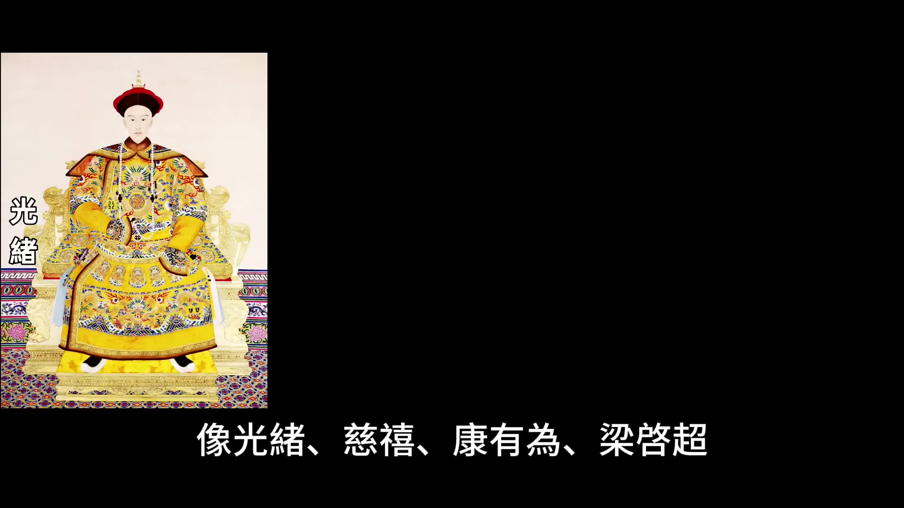
甲午戰爭失敗後，從朝廷官員到民間有識之士都感到被侮辱、需要雪恥的壓力，同時也產生了要改革的聲音。這時朝廷有意願也有財力進行改革，是一次極好的改革機會。然而戊戌變法在經歷短短103天之後便宣告失敗，導致頑固派復辟並引發庚子國難（八國聯軍侵華）。自此以後，清朝再難以依靠內部自發的改革來完成現代化的轉型。
主導戊戌變法的主要人物有光緒帝、慈禧太后、康有為以及梁啟超等人。變法失敗後，這些關鍵人物都受到了不同程度的打擊或迫害：康有為和梁啓超流亡海外；光緯被囚禁；而慈禧則被迫與頑固派合作。
慈禧太后在一開始並非堅定的保守派，她曾經支持過李鴻章和張之洞等人主導的洋務運動，使得這些改革措施得以實施。但是戊戌變法期間，因為內部分歧以及外部挑戰，慈禧被迫轉向頑固派，扼殺了變法成功的可能性。
我們來詳細介紹一下康有為這位戊戌變法的重要人物。康有為1858年出生於廣東省南海縣，家境富裕，曾有一位叔叔康達行從軍抗日，參與保衛台灣之戰以及抗法戰爭。這些經歷對康有為的成長和思想形成產生了重大影響。
康有為自幼接受傳統儒家教育，拜當時廣東的大儒朱次琦為師。雖然他深受中國古典文化的薰陶，卻又厭惡考試必備的八股文體，反而大量閱讀與科舉考試無關的書籍。直到19歲時，在祖父康贊修的幫助下獲得蔭監生身份，得以直接參加鄉試。
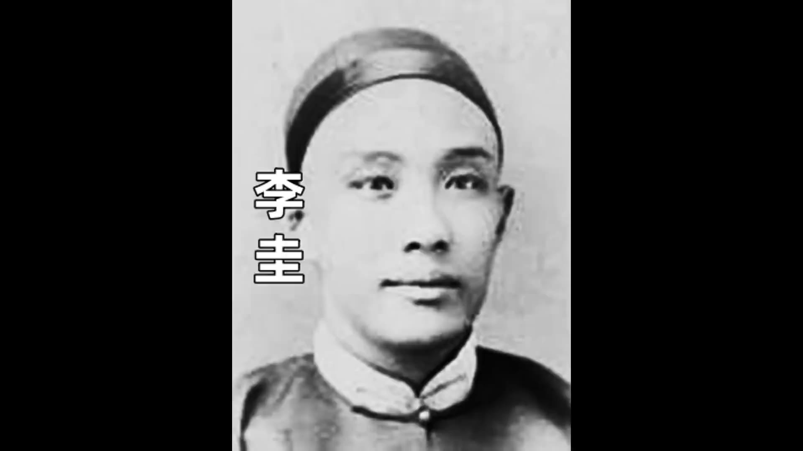
值得一提的是，康有為在21歲時讀到一本名為《環遊地球新錄》的書。這本書是當時寧波海關副稅務司文牘李圭所著，在美國參加百年博覽會後完成的一次環球旅行見聞記述。此書激發了康有為對外國知識的興趣，開闢了一個全新的世界觀。
戊戌變法之所以失敗，是由於多方面的原因。從康有為身上可以看到這一歷史轉捩點下中國知識分子的困境和掙扎。
00:05:02
他開始大量尋找並閱讀介紹西方的書籍，並於1882年前往香港。當時香港離廣州不遠，這是他初次親身感受英國人治理的城市。當年康有為才25歲，之後他參加了在北京舉行的科舉考試，可惜未能中榜。歸途中，他特意繞道上海，探訪洋人的租界。在那裡，他購買了大量的介紹西方的書籍，還訂閱了一份由基督教會在上海創辦、主要由外國傳教士撰寫的《萬國公報》。
康有為回到廣州後，埋頭閱讀這些介紹西方的書籍並形成自己的思想體系。從1884年到1887年的三年間，他寫了幾本書，其中包括《人類公理》，這部作品後來成為他的名作《大同書》的前身。
康有為學習與成長的過程反映出其獨特的知識構建之路：幼時受儒家思想影響，而對於西方世界的認識則全部通過閱讀獲得。僅有的親身經歷是對香港和上海租界的探訪，這兩地都由外國人管理。他未嘗踏足海外世界便開始著書立說闡發自己的思想。
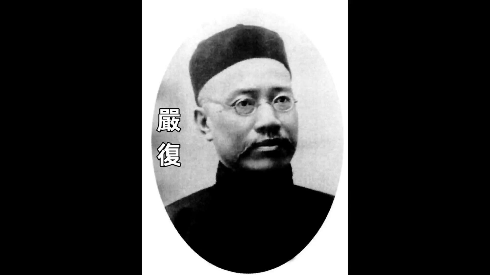
同一時期的嚴復比康有為年長四歲，翻譯了大量西方著作並寫作啓蒙國人的文章。嚴復曾在英國留學兩年多，親眼見證西方議會、法院及三權分立制度的運作，因而能夠在歸國後根據切身經歷著書立說；而康有為則完全沒有在外國生活過，僅憑閱讀就能形成一套完整的理論思想體系，顯示出其非凡天賦。但另一方面，這種缺乏實際體驗的做法使得他的作品顯得更具理論性且與現實有所脫節。
1888年，31歲的康有為再度北上參加科舉考試，依然未能獲取功名。然而，在這期間他做了一件不同尋常的事：向光緒皇帝呈遞了一份政治建議書《上清帝第一書》，此舉開創了戊戌變法之前的六次上書之先河。當時光緒剛親政，康有為認為這是新時代的開始。
康有為不按常規的做法肯定不合傳統規矩：他未取得功名，且根據清朝規定，普通布衣無權直接向皇帝呈遞奏章。此外，這種做法風險極大，因為上書內容一旦觸犯忌諱，便會招致滅頂之災。康有為明知這點，仍冒險而行，並在其給弟弟的信中表達了可能面臨禍事的憂慮。他這樣做的動機有人認為是為了通過此途徑迅速獲取權力，也有人認為他是看到了世界變局，認定清王朝必須改革，急切推動變化。
康有為借助諸多關係將上書遞交至翁同龢手裡，這位光緒帝的師長。但翁同龢在看完後直接否決，未予呈報皇帝。這封上書的主要內容包括指出清王朝正處於嚴重危機之中——此觀點與當時官方認知截然相反：1884年發生的中法戰爭之後，清國力逐漸衰弱；而至1888年甲午戰爭前六年的時期，一般人認為國家正走向強盛。
康有為在上書中針對上述危機提出了三點建議：“變祖宗成法”、“通下情”和“慎左右”。他強調清朝的祖制已經使用了太多年，是時候進行改革以應對新形勢。
00:10:01
當時代變化快速，跟不上就會被淘汰。康有為在此時首次提出了變法的思想，在當時看來這與主流觀點相悖，卻在六年后甲午戰敗後被證明其先見之明。儘管他的上書沒有得到朝廷的轉呈，但他在北京期間結識了不少人脈，並因為其獨特的觀點而為人所記憶，特別是翁同龢。
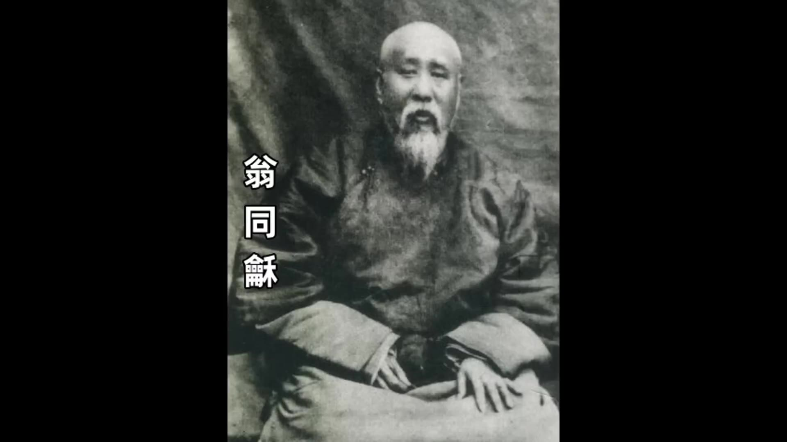
翁同龢在1888年的日記中對康有為有所提及，顯見他對康有為留下了深刻的印象。康有為上書失敗且科舉未中後返回廣州，繼續準備科舉考試但沒有成功，家計也陷入困境。於是，他開始籌辦學堂來維持生計並進行教學活動。
他在廣州貼出了廣告，宣傳自己的學堂課程，卻遭到了嘲笑。有人直接在廣告上寫下批評的字句，嘲諷康有為以監生身份竟然也開辦私塾教書。由於這些嘲弄，他的廣告張貼了很久，始終未能招到學生。
一次偶然機會，當時廣州一位教館先生因故無法教授課程，介紹康有為代課幾天，這使他得以向眾人展示自己的教學能力與特質。康有為的講課內容獨樹一幟，很快便吸引了數名學員前來學習，其中最著名的學生便是16歲的梁啟超。
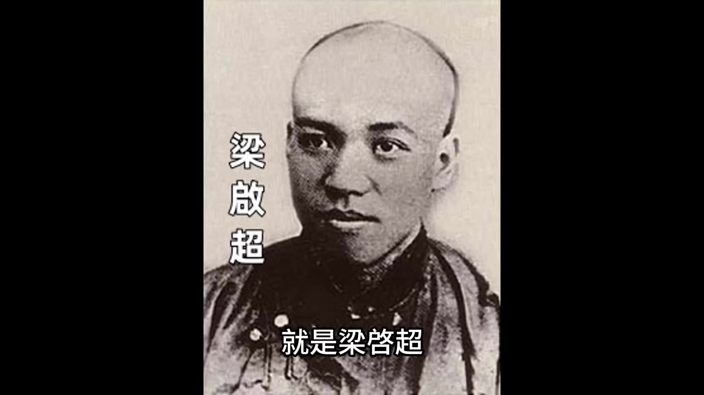
就在上一年，梁啓超在廣州考取了舉人身份，而康有為當年則是31歲。儘管康有為在北京未能通過科舉考試，但梁啓超卻拜他為師學習新知識。
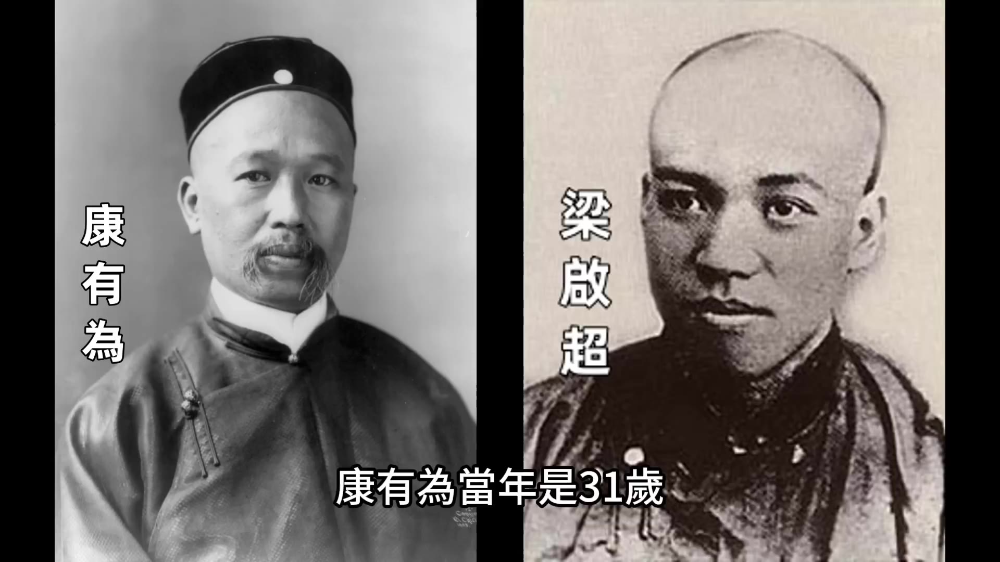
梁啟超在日後的回憶中表達了對舊教育體制的高度厭惡之情。康有為的新知識如同一扇窗，向他展開了一個全新的世界。因此，梁啓超成為康有為的學生，隨即引發許多學員相繼來到康有為門下學習。
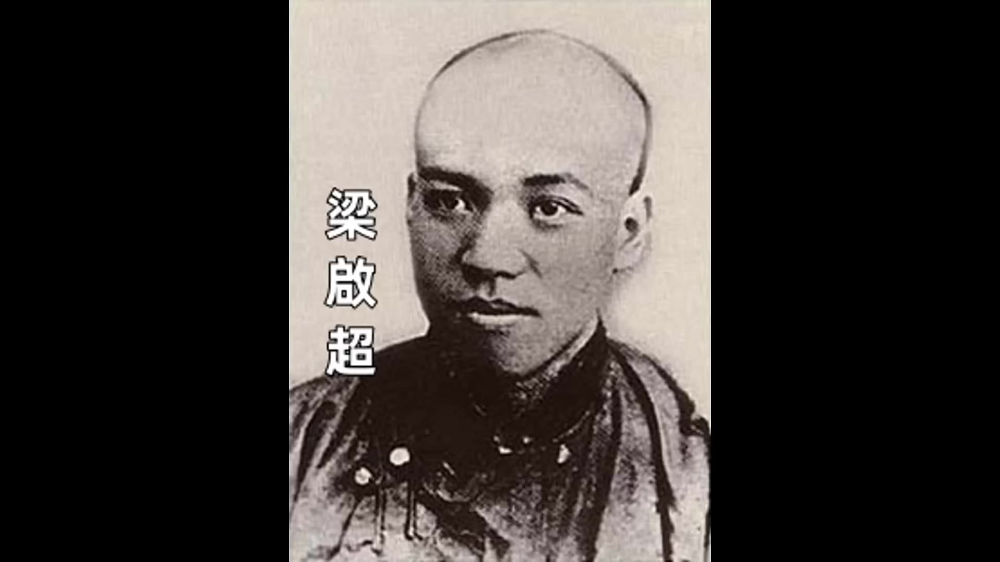
當學員數量逐漸增多後，康有為便搬遷至一個更大的地方，命名為「萬木草堂」。他的課程內容遠超出傳統的經學、史學範疇，還包括《泰西哲學》、《外國語言文字學》、《數學》和《體操》，將學生們引導到了知識的新天地。
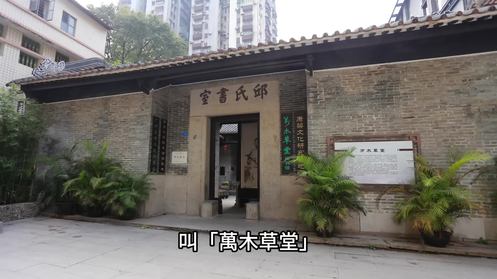
康有為在經營學堂的同時，也著手撰寫了兩部著作，《新學偽經考》以及另一部書（具體哪一部原文未明確）。這兩本書是其變法理論的重要基礎，但也因此引起了極大的爭議與困擾。康有為之所以要寫這兩本書，目的是為了「托古改制」，即尋找變革制度的理論依據。
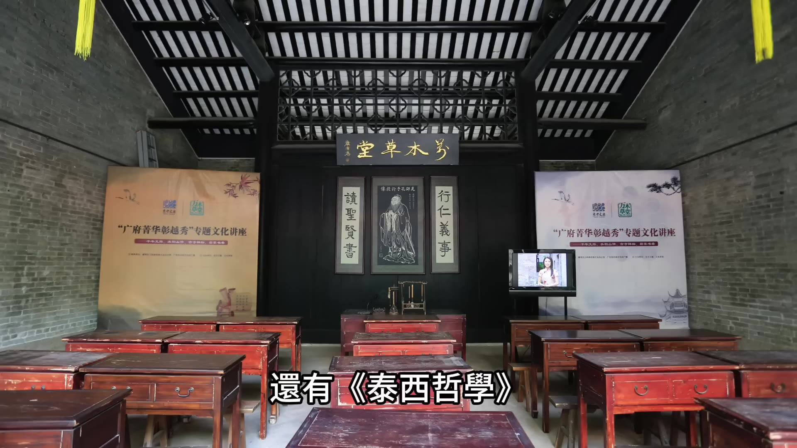
在古代中國，儒家經典是政治改革的重要依據，而孔子作為儒家學說的奠基者和至高權威，其地位無人能及。康有為希望借助孔子的形象來推行自己的變法思想，故在其著作中宣稱孔子本就是一位實行變革的政治家。
在《新學偽經考》中，他試圖證明現存於世的六經文本其實是被後人篡改過的，進而批評了古文經學派。康有為指出，秦始皇焚書坑儒之後，今文經學家們依賴著記憶將經典重新默寫下來，認為這些版本才是孔子原意；而古文經學則主張後人發現的牆壁中藏有未被燒毀的原始經典。康有為試圖證明古文經學從根本上就是偽造，這同時也為他自己的改革思想奠定了理論基礎。
康有為提出，他的變法應該繼承孔子的精神，以實現托古改制的理想。
00:15:00
康有為寫作《新學偽經考》和《孔子改制說》，實質上是為了滿足他個人的政治需要，而不是作為純粹的學術著作。如果要稱之為學術著作，應該建立在扎實的考據基礎之上，提出新的觀點。然而，康有為卻是從古書中尋找理論依據來證明自己的觀點。當時清朝學界風氣嚴謹，考據工作縝密至極，而他提出的論證漏洞百出，尤其是針對廣受關注的儒學進行挑戰。這兩本書一出版便引發了無數反對與爭議。
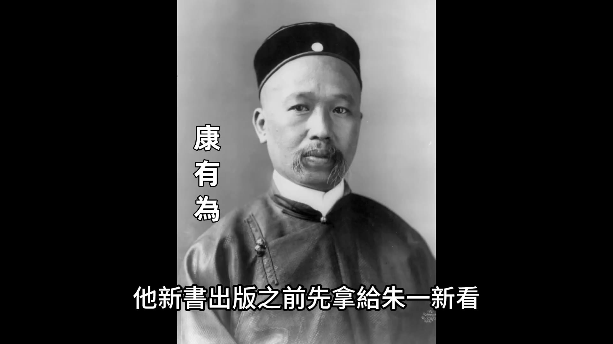
在《新學偽經考》尚未出版前，康有為將書稿拿給廣雅書院山長朱一新看。朱一新出身翰林，曾任御史，並曾彈劾過大太監李蓮英；他雖與清流黨有關聯，但並不反對洋務運動，還主張大力發展海軍。廣州廣雅書院建成後，張之洞聘請朱一新為山長，在其主持下，書院得到了很好的發展。康有為和朱一新均居於廣州，然而當朱一新閱讀完康的著作後，不僅未給予推薦反而極力批評這本書，認為它背離傳統儒家思想。
張之洞對此也表示不滿。1895年，康有為前往南京遊說張之洞支持他在上海創辦強學會，但遭到明確反對。張甚至通過梁鼎芬傳話給康，如果放棄“孔子改制”理論就可獲取資金支援；然而康執意不肯退讓。這也成為二人間矛盾的源頭之一。
翁同龢亦不滿康有為的學說，在日記中諷刺稱其“野狐禪”。陳寶箴更進一步上奏要求康自行銷毀這兩本書以解決爭議。康寫作這些著作，本意是為了尋找變法理論依據，卻反而阻礙了他推行政治改革的進程。
康有為此後又自命聖人，這一稱號也招致更多批評。例如他在萬木草堂設立學堂、講學，並給弟子起各種大膽之名號，如將陳千秋號為“超回”（意指超過顏淵），梁啟超為“駕孟”（凌駕於子貢之上），麥孟華則被稱作“凌孟”，以此類比孔子門徒。康有為自視甚高，在士人中引起極大反感，因他們認為唯有孔子方能配得上聖人的稱號。
康有為一生有三種身份：其一是辦學和報刊傳播變法思想，旨在啟迪民智；其二是模仿伊藤博文致力於國家改革的政治家角色；還有就是效仿馬丁·路德欲成為一教派領袖。這三者之間存在深刻矛盾，特別是當他追求第三種身份時，直接影響了其政治變革的進程。
康有為在致力辦學與出書之際，仍需應付科舉考試。1893年，他終於考中舉人，並與門生梁啟超一同北上參加會試。當時正值甲午戰爭爆發，清軍敗北，李鴻章擬與日本簽訂《馬關條約》之際。康、梁二人深受政治動向影響，立刻投身於北京的政治活動中。此期間恰逢清日交涉最為緊張的時刻。
00:20:02
康有為在承受著考試壓力的同時，密切關注著談判的進程。他和梁啟超聯繫全國各地的舉人，給皇帝上書勸說不要簽訂《馬關條約》。「公車上書」中最重要的文件是康有為提交的《上今上皇帝書》，也就是他的《上清帝第二書》。該書的主要內容包括四個方面：練兵、變法，以及下詔和遷都。
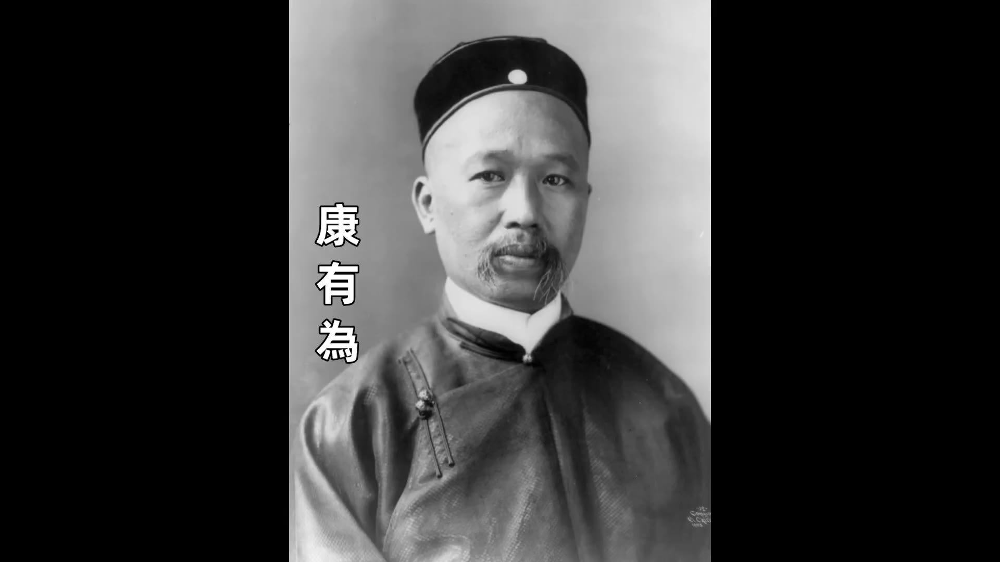
第一點是「下詔」。「下詔鼓天下之氣」，康有為建議皇帝頒布三份詔書：一是罪己詔，激勵全民共雪國恥；二是明罰之詔，嚴懲導致戰爭失敗的官員；三是求賢之詔，破格提拔有能力的人士。第二點是「遷都」，康有為建議皇帝不簽約而繼續抗戰，必須遷都以避敵鋒芒。自鴉片戰爭以來，北京地處海防易受攻擊，故應遷都以便與日本進行長期對抗。第三點是練兵，即在持續對日作戰的同時淘汰老軍隊並訓練新軍。第四點則是變法，在康有為看來這是因時局所需提出的權宜之計，真正的立國大策便是變法。清朝法度沿襲明朝已數百年，國內外環境變化巨大，因此必須進行變法，其具體方案他在上書中也有所建議。
這些建議涵蓋了政治、經濟和民生等多個方面。然而，這封上書未能轉呈給光緒皇帝或都察院，但在京城內廣泛傳播並產生了巨大的影響力，康有為也因此名聲大噪。而他考取進士後終於有了功名，朝廷授以工部主事的職位。在此之後，他又向皇帝提交了《上清帝第三書》，內容更加具體明確，這次的建議終於呈遞給了光緒。
光緒在親政後面對甲午戰爭的敗局，決心進行變革。他看到康有為的上書深受啟發，與以往大臣陳詞濫調不同，康的建議讓他眼前一亮。因此，光緒破格讓軍機處抄錄其上書並存放在乾清宮、勤政殿和軍機處，還抄發各省督撫要求復奏。將原文呈至頤和園給慈禧太后看，這表明光緒對康有為的建言極度重視，也成為他改革意圖的一個信號。這次上書使康有為的政治名聲大增。
康有為繼續寫《上清帝第四書》，首次提出建立議院體制和在各省設置相應議院的建議。此外還倡議設立報館和學會以解決君民隔閎問題，但此份上書並未成功呈達皇帝。
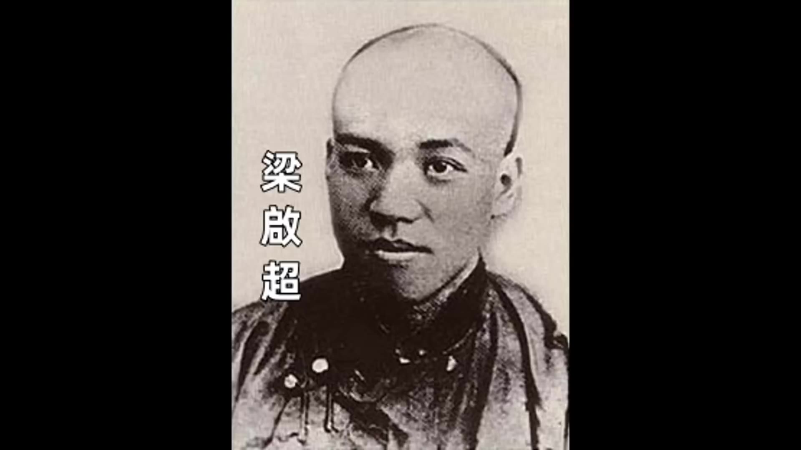
梁啟超以其特有的才能成為了天生的辦報人，在很短時間內就吸引了大量有志於維新的人士。康有為則創立了強學會，以西方政黨模式組織擁有改革意識的新知識分子，宣傳愛國自強的理念。該會計劃包括開設報紙、翻譯書局以及派遣學生到海外留學等項目，需要大量經費。康有為通過發動强學會的會員向中央官員和各省督撫募款來籌集資金。當時甲午戰後維新運動形勢良好，許多開明的大臣支持強學會並捐款資助。
在此過程中，朝廷中樞如翁同龢答應每年從戶部撥款援助，地方大員像王文韶、劉坤一和張之洞也分別捐助資金。手握兵權的淮軍將領如宋慶與聶士成同樣對此予以支持。
00:25:01
此外，新建陸軍的袁世凱也進行了捐助。
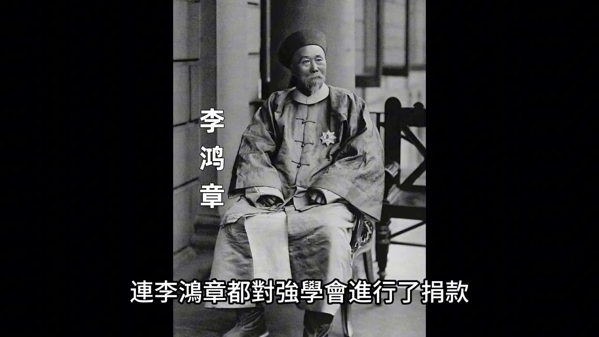
李鴻章同樣對強學會捐款，然而這些善款卻被康有為退回。根據康有為的看法，《馬關條約》簽署人李鴻章在輿論中背負著“賣國賊”的罵名，聲譽不佳，因此他認為讓這樣的人加入愛國組織強軍會是不妥當的。不過，這顯然顯示出康有為作為一位新手政治家，並未真正理解李鴻章在政壇上的影響力。縱使當時李鴻章處於低潮期，他的影響力依然不容小覷，洋務派中的多數官員都受其領導。康有為拒絕了李鴻章的捐款，這實際上等同於斷絕與洋務派大多數成員的合作關係。
在維新運動出現之前，朝廷內主要由保守頑固派和洋務派兩個陣營支撐，而後者長久以來一直以李鴻章為首領。甲午戰敗後，李鴻章的名聲受損，張之洞漸漸取而代之成為領導人物，但淮軍系統及其盟友仍舊唯李鴻章馬首是瞻。因此，作為維新派雛形的強學會在朝廷中並沒有實力雄厚的領袖，也無法與頑固派爭取合作機會，洋務派則成為他們潛在的合作夥伴之一。然而康有為拒絕了李鴻章的捐款，這無疑是得罪了洋務派的一些成員。
張之洞雖向康有為拋出橄欖枝，卻要求他必須放棄《孔子改制考》理論才能合作，這也限制了他們之間的合作可能性。強學會成立初期便呈現出複雜的內部分裂趨勢，包括康有為及梁啟超等維新人士、翁同龢支持下的帝黨成員（如陳熾、沈曾植和文廷式）以及由張之洞與袁世凱等人安插進來的人士。這些不同派系的融合令強學會內部充滿矛盾，最終導致頑固派彈劾康有為及其組織，使得強學會在短短數月內便宣告解散，康有為也因此離開了北京。
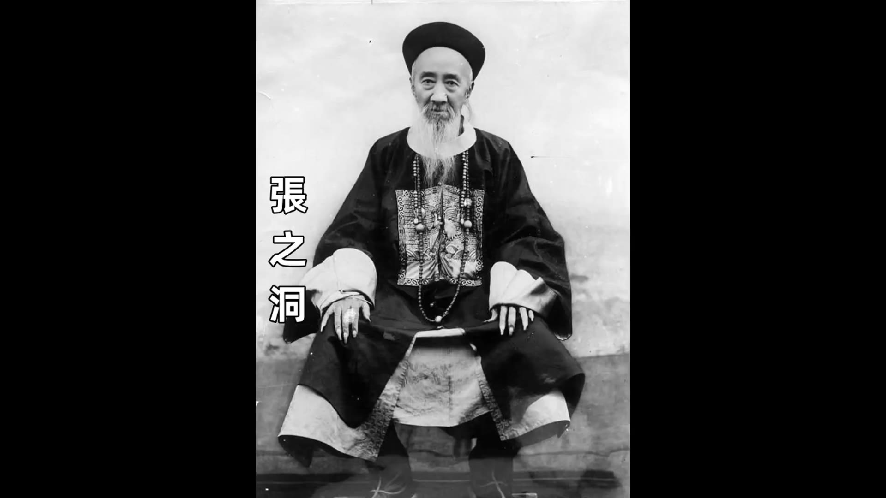
離開北京後的康有為並未返回廣州，而是前往上海，試圖說服張之洞支持他在此地重啟強學會。當時，張之洞擔任兩江總督，同意在資金上予以支援但要求康有為不得再倡導孔子改制理論。康有為接受了捐款，將上海的強學會辦起來了，卻依然拒絕放棄孔子紀年論述，還將《強學報》標題設為「孔子卒後二千三百七十三年」，並在報紙首版刊登一篇名為《孔子紀年論》的文章。張之洞認為這是一種不忠於朝廷的行為，因此勒令康有為解散上海的強學會。
雖然北京和上海的強學會活動規模不大且時間短暫，但康有為及其同僚梁啟超在社會上的影響力卻大大增強了。1896年後，列強開始瓜分中國的局面變得愈加嚴峻，德國佔領膠州灣、俄國強租旅順和大連、法國占據廣州灣以及英國租借威海等事件接踵而至。面對這樣的危機，清廷也加快了維新變法的步伐。
1898年1月24日，總理衙門在西花廳召見了工部主事康有為，出席的五位高級官員分別是軍機大臣翁同龢、文華殿大學士李鴻章、兵部尚書榮祿、刑部尚書廖壽恆和戶部左侍郎張蔭桓。這場召見對晚清歷史產生了深遠影響，標誌著維新變法運動邁入新的階段。
00:30:00
他們召見康有為，目的是遵照光緒皇帝的旨意，親自見識這位改革派人士，看是否能夠破格起用他。1898年德國人強佔了膠州灣、俄國人強行租借旅順和大連、法國人強行租借廣州灣、英國人則強行租借威海衛，清朝正處於被列強瓜分的危機之中。光緒皇帝想要進行政治變革以挽救國家命運，但朝廷中的大臣們卻沒有一個人能夠提出系統性的變革方案。兵部給事中高燮曾是康有為的支持者，他向光緯皇帝上奏推薦康有為，建議破格起用此人。同樣地，翁同龢也乘機推薦了康有為，認為其才華卓絕，值得皇帝召見以確定是否應予重用。
光緒皇帝想起之前康有為呈上的奏折內容確實令人印象深刻，因此提出要親自召見他。然而恭親王奕訢卻極力反對這一想法。他認為按照朝廷的規矩，四品以上的官員才能接受皇上的召見，而康有為當時僅是主事一職（六品），直接召見顯然不符合規定。當時奕訢年屆65歲，身體狀況不佳且病情嚴重。儘管他在年輕時支持洋務運動，對新事物持肯定態度，但他對於康有為的變法理念卻極其排斥。他可能認為這些改革會威脅到旗人的統治地位，同時考慮到光緒皇帝權力尚未穩固，一旦進行大規模的政治變革可能會引發與慈禧太后的矛盾。
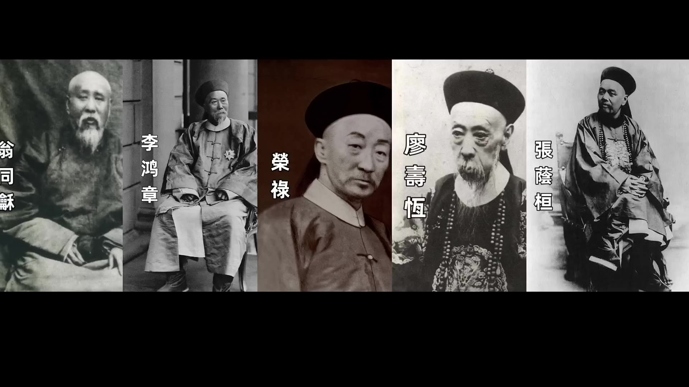
因此，在奕訢的強烈反對下，光緯皇帝無法反駁，於是決定由總理衙門的五位大臣在西花廳召見康有為。這五位大臣中，翁同龢和張蔭桓是支持變法的，但對於具體如何變革他們心中也沒有底；李鴻章同樣支持變法，不過因為之前經歷過被康有為拒絕捐款的冷遇，他對康有為並無太多好感，態度上屬於隔岸觀火；榮祿則是慈禧心腹，在保守派中占據重要位置。廖壽恆雖然同情變法但因其資歷尚淺不便多言。
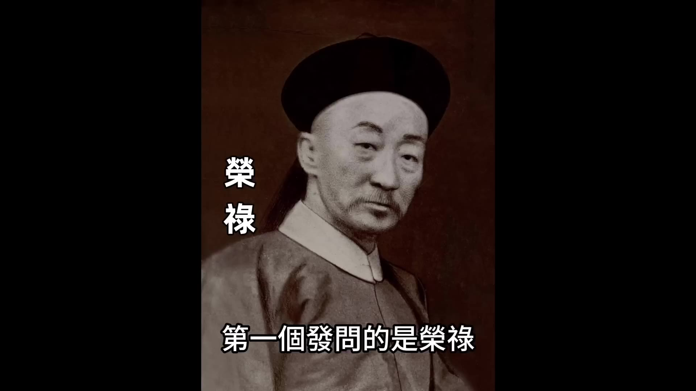
召見過程中，首先發問的是榮祿。他提出一個非常棘手的問題：“祖宗之法不能變。”面對此難題康有為絲毫不讓步地答道：“祖宗之法以治祖宗之地也，今祖宗之地不能守何有於祖宗之法乎？即如此地為外交之署亦非祖宗之地所有也，因時制宜誠非得已。”他強調，現在的情況已然不同以往，傳統的法律和制度已經無法適應現狀。榮祿聽後氣憤不已，直接離開了現場。
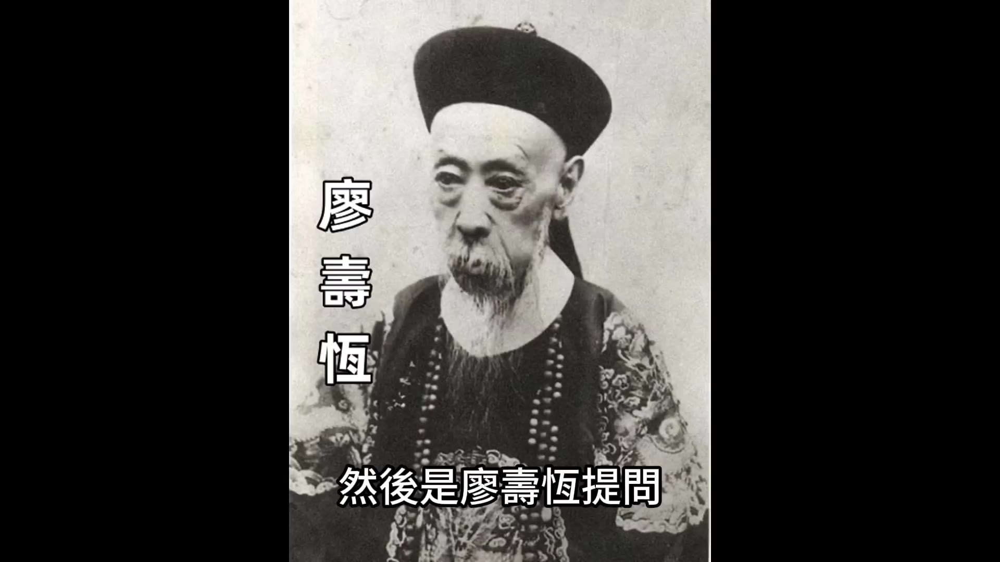
接下來是廖壽恆提問，他詢問變法具體如何進行。康有為則答道將要變革官制和法律，並提出了一系列實際的措施方案，包括廢除舊有的慣例等等。
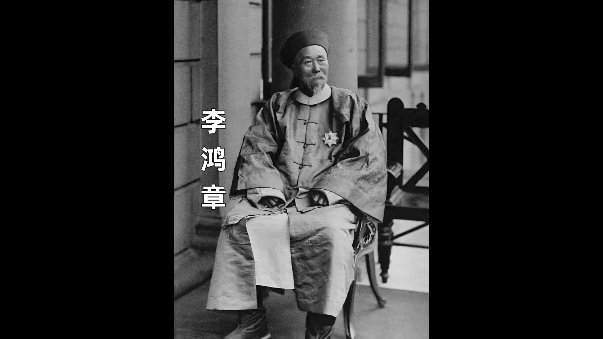
李鴻章最關心的是政治變革的力度與可行性。他認為康有為所言過於激進：撤換六部、廢棄所有舊規律，這類做法會造成動盪，難以在實際政務上實施。因此當被問及是否打算全盤推翻現行制度時，康有為表示，由於列強林立，國家已不再處於統一時期，若沿用過去的官制與法律只能使國力衰弱甚至亡國，必須進行變革以推行新政。李鴻章雖是務實的政治家，卻也對如此激進的說法缺乏信心。
最後由翁同龢提出問題，作為戶部尚書他最關注的是財政改革。對於他的詢問，康有為表現出非凡的口才和思路清晰度，從政治談到經濟再到軍事，整整三個小時滔滔不絕地闡述了各種方案措施。同時還提到自己正在撰寫兩本書籍《日本變政考》與《俄彼得變政記》，探討日、俄等國的變法經驗作為借鑒。
00:35:00
這次在西花廳召見，從整個問話過程來看，康有為將自己多年來對變法的見解盡情發揮。各位大臣也就各自關心的問題進行了詢問，但是從氣氛上來說，很顯然康有為並未給這些大臣留下什麼好印象。
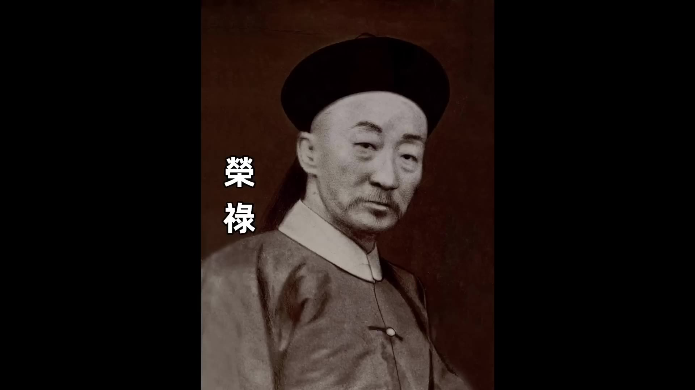
關於榮祿，康有為是直接將其樹敵，這為他日後的變法留下了很大的隱患。實際上，從榮祿的一系列行為來看，榮祿並不是一個頑固保守派，在軍事方面，榮祿主張用西方的方法訓練軍隊，袁世凱在小站訓練新軍就是在他主導下完成的；同時，榮祿也支持興辦工商業。然而康有為完全沒有去爭取榮祿的支持，反而一開始就把榮祿推向了對立面，這絕對是他在政治上面的敗筆。
李鴻章就更不用說了，聽聞康有為具體變法內容後更是斷定自己不會參與其中。連一向看好康有為的翁同龢也都感到他有很多問題，翁同龢在當天日記中寫道：
「傳康有為到署高談時局以變法為主立制度局、新政局練民兵、開鐵路廣借洋債數大端狂甚」翁同龢在日記中能寫出康有為「狂甚」兩字，可見他對康有為的態度也非常不滿意。翁同龢把西花廳問話的情況全部彙報給了光緒皇帝，而光緒聽到這些後認為既然全國上下只有康有為能拿出來完整的變法方案，即使表現得不是那麼好也只能起用康有為。
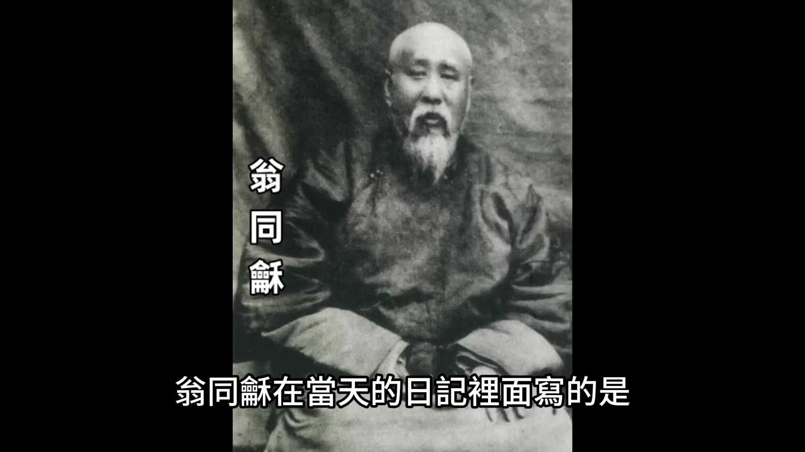
不過光緒的想法又被奕訢阻攔了一次，奕訢說：「你不妨讓康有為把他變法的內容先呈報上來還有把他提到的《日本變政考》和《俄彼得變政記》都呈報上來然後再決定。」光緒只能又一次聽從了奕訢的意見，讓康有為把這些先呈報上來。
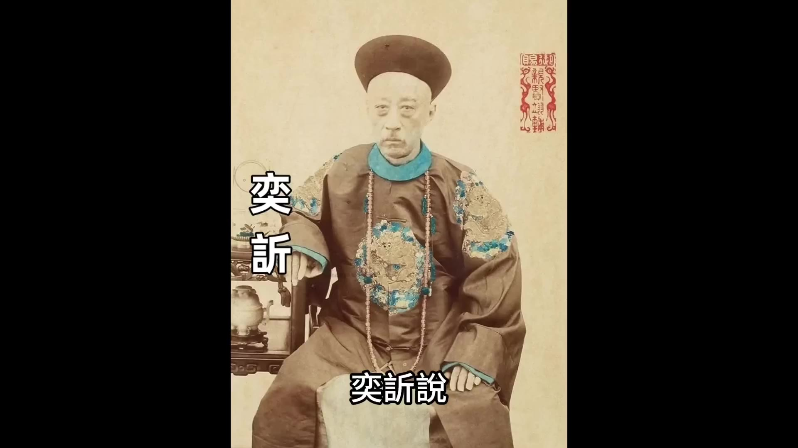
收到旨意後，康有為快速完成了《應詔統籌全局折》，這個名字中「應詔」是指應皇帝之詔，而「統籌全局」則是他的變法大綱。這份文件就是康有為的第六書——《上清帝第六書》，對國家政治體制改革做了總設計，也是戊戌變法的總綱領。
在文內康有為提到國家現在遇到最大的困難是列強的打擊，我們要想在國際上贏得尊重和平等，就需要仿效西方國家的政治體制進行改革。他說我們國情與日本和俄國最像，兩國都變法成功了，應該學習他們，特別是日本。康有為根據明治維新的經驗提出三條綱領性建議：第一「詔定國是」由光緒帝在天壇或太廟宣佈維新變法開始；第二「廣開言路」無論官員還是民間百姓都可以上書言事，人人都可以為變法獻計獻策；第三「開制度局」在全天下選拔20名人才，在皇宮中設置這個機構統籌變法全局。制度局下面還有法律、稅務、學校農商、工務、礦政、鐵路、郵局、造幣遊歷、社會和武備十二個新政局，以重新商定、改革乃至重建中央行政體制。
康有為提出的前兩條建議不算新鮮事物，重點是第三條開設制度局與新政局。制度局是一個議政機構，而行政局是一個行政機構，他首次明確提出議政和行政必須分離的理念，但並未在文中提到開國會和制定憲法，因為第五書中提出來後受到太多質疑，這次他就改採比較溫和的方案。
很明顯康有為需要繞開六部，認為靠原有六部是不可能推行新法的，因此要另起爐灶重新建立一套從中央到地方的行政體制。這套制度局人員僅20人左右，全部由皇帝親自指派，且要求所有人員都懂西學，因為新政必須由懂西學的人組成。
00:40:00
這樣立法才能往西方的政治制度方向過渡。這20個人每天的工作是在皇帝身邊議事，他們有兩部分工作，一是處理有關新政的一切要務，二是逐步修訂原有的法律條令和章程。我們說康有為的這個設計是給光緒皇帝量身定制的，他這樣的方法是只要光緒皇帝是開明的、有變法的決心並且快速地把變法推行下去，這種方式比君主立憲或者虛君共和會更有力度。康有為選的這條路是他認為變法的最佳路徑。但是無論怎麼看，制度局更像是一個新的軍機處，只是它比軍機處權力更大，還具有立法的功能。再加上十二個新政局，就顯得全面奪權了。康有為設計的制度局他的本意並沒有說要替換六部，他的本意就是只設新機構不撤舊機構，這樣舊機構的官員還可以正常的領俸祿，減少變法的阻力。但是康有為的想法太過書生氣了，官員們要的是權力，而不是那點合法的俸祿，他們將一無所有。康有為的設計將會架空原有的行政機構。
對於設立制度局，在朝廷上引起了巨大的抵制。軍機處、六部、總理衙門都反對設立制度局。下面我們再來說一下康有為呈上的另外兩部著作，《日本變政考》和《俄彼得變政記》，這兩部著作也是光緒最感興趣的，其中他強調了君主「乾綱獨斷」的色彩。
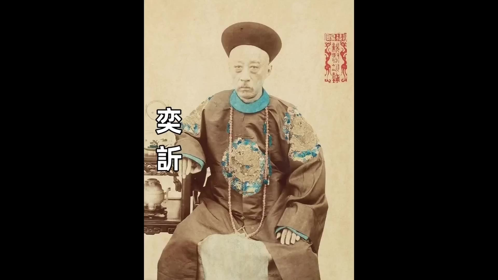
康有為的用意很明顯，他想讓光緒霸氣一點，乾綱獨斷，強制推行變法。在他所描繪的《日本變政考》中，他篡改了日本明治維新的歷史，把本來只有名義上的作用的明治天皇塑造成具有精神和實際作用的雙料領袖，在《俄彼得變政記》裡，康有為則給光緒展示了一個排除萬難不惜用武力和陰謀粉碎所有阻礙的鐵腕君主的形象。他在書中對彼得一世殘酷鎮壓叛亂粉碎舊貴族的反抗表示出很贊美的語氣，不分青紅皂白地把彼得一世的政敵都指為守舊派和頑固派，顯然是要讓光緒聯想到應該像彼得一世一樣心狠手辣大義滅親對待滿清貴族裡的頑固勢力。康有為的期待是好的，但是光緒皇帝絕對不是一個心狠手辣的君主，他也沒有辦法做到乾綱獨斷。雖然光緒親政了，但他的每一舉一動都在慈禧的監視之下。
太后和皇帝二元政治的問題是影響變法的決定性因素，這點我們後面還會說到。看完康有為的奏折和兩部書之後，光緒對變法更有信心了，決心要進行變法。就在這個時候，恭親王奕訢去世了。
奕訢在生命的最後時刻給慈禧和光緒留下兩句囑託：第一個是關於變法的，他說「聞有廣東舉人主張變法一定要慎重，不可輕任小人也」；第二個是關於翁同龢的，他認為甲午戰爭的時候是翁同龢主張開戰影響了光緒以至於幾十年建設和海軍都毀於一旦，他說翁同龢「居心叵測」「聚九州之鐵不能鑄此錯者」。奕訢的臨終之言意味深長，有保護光緒皇帝的意思，可惜年輕的光緒並沒有聽進去，聽進去的是奕訢的嫂子慈禧太后。
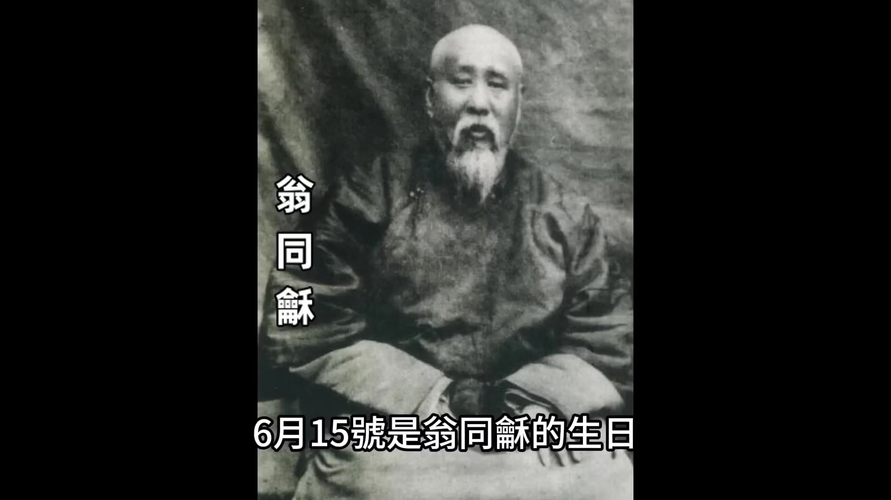
奕訢的死對光緒來說是福還是禍很難說。至少在眼下少了一個囉嗦他的人，光緒可以放開一點手腳了。沒有奕訢的阻礙，光緒可以大膽地推行變法。
1898年6月11日，光緒皇帝頒布《明定國是詔》，這份詔書內容有三部分：一是說頒布此詔書後皇帝要進行改革，這個事情就算確定了；二是朝廷的中央和地方都需要按照改革的路線方針去做，不必再有爭論；三是傳達新國是的具體內容，其中關於京師大學堂改革的方針。這份詔書頒布代表著戊戌變法正式啓動了。
在《明定國是詔》頒布後四天，6月15日光緒突然發佈三道上諭讓所有人都感到了不好的兆頭，因為6月15日是翁同龢的生日。按理來說官兒做到他這個程度，每年過壽他的同僚下屬弟子門生親朋好友肯定是要過來慶賀的，但是這一次卻沒有。
00:45:00
卻沒在家等著當壽星，他一大早就到軍機值班房照常公幹。這天翁同龢接到的第一個公務竟是把他自己開缺的朱諭。6月15號，光緒皇帝發佈了三道上諭：
第一道上諭是命直隸總督兼北洋大臣王文韶覲見，讓榮祿暫時署理直隸總督和北洋大臣；
第二道上諭是指凡是授二品以上的官員；
第三道上諜則針對協辦大學士、戶部尚書翁同龢，指責他近來「辦事多未允協」、「眾論不服」且多次有人參奏，並提到每次召對時咨詢事件任意可否，喜怒見於詞色，漸露攬權狂悖情狀，斷難勝機之任。因此，翁同龢被著即開缺回籍以示保全。
光緒皇帝同時發的這三道上諭非常有深意。我們先來看第三道關於翁同龢被開缺的上諭：裡面寫的翁同龢被開缺的理由是有人參劾他，參劾他的理由呢是他最近公務有問題，很多人不服。但是按照辦案的流程應該是先查明究竟再來決定怎麼處理，這次卻偏偏不查，直接就開缺，還說是以示寬大保全。裡面還有「喜怒見於詞色」之類的詞，這顯然就是一個「莫須有」的罪名。
關於翁同龢被開缺，應該不是光緒一個人的主意。從恭親王奕訢去世到「明定國是詔」的發佈再到翁同龢被開缺一共只有13天的時間，在這期間光緒大部分時間都是在頤和園辦公、居住，他只有四天的時間是在皇宮住的。光緒在頤和園辦公時所有的決定應該都是先向慈禧太后請示的。
也就是說，光緒做的一切決定都應是跟慈禧商量過或按她的意思去下發的。所以：
第一點，光緒6月11號頒布的「明定國是詔」肯定是經過慈禧點頭的；
第二點，戊戌變法光緒是在慈禧同意下進行的；
第三點，翁同龢被開缺有可能是光緒的意思也有可能是慈禧的意思。
後來的人對這件事有三種猜測：第一種說法是說光緒和慈禧都同意罷黜翁同龢，他們根據恭親王奕訢臨終的囑託來決定；第二種說法認為是光緯自己做的決定，因為關於變法的力度「明定國是詔」由翁同龢起草，內容卻是以聖賢義理之學植其根本又須博西學之初切於時務者實力講求。這段光緒和翁同龢之間的對話記錄在翁同龢的日記裡，後來頒布的詔書用的是翁同龢的意見；第三種說法認為是慈禧下的旨意要罷黜翁同龢，而光緯只是被迫發出而已。
根據此說法，慈禧看過光緯呈上來的康有為的變法奏折，包括《應詔統籌全局折》、《日本變政考》和《俄彼得變政記》，她最關心的是在變法之後權力的變革。而康有為的方案字裡行間都對慈禧構成了很大威脅。因此，慈禧決定罷黜翁同龢以削弱光緯的實力。
00:50:00
實際上，慈禧太后並未完全放權，而是讓光緒帝在處理一般事務時先行批示，然後再向她彙報。這種二元政治結構成為戊戌變法的最大阻力。雖然保守派和頑固派的反對力量強大，但在1898年面對列強瓜分危機的情況下，大部分官員傾向於推行變法自強，但變法能否順利進行以及能達成的程度取決於光緒帝與慈禧太后的合作，尤其是後者的態度至關重要。然而，康有為的改革方案卻使兩人的關係更加疏離和對立，並沒有如預期般協助光緒帝統一權力。
康有為不僅未能團結慈禧太后支持變法，反而促使其下決心要擺脫光緒帝的控制。慈禧雖同意發佈“明定國是詔”讓光緒進行改革，卻依然牢牢掌控大局。罷免翁同龢這一中樞人物、規定二品以上官員需向皇太后謝恩以及命榮祿接管京津地區軍事權力等舉措顯示出她對變法運動的強烈反彈。
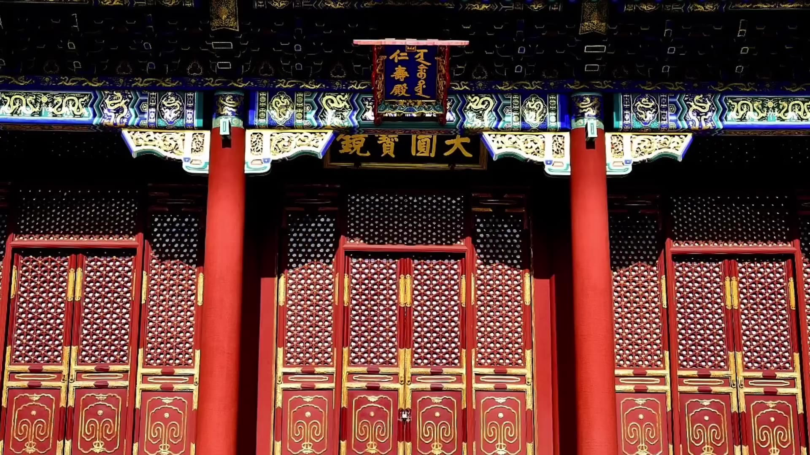
維新派在這種背景下仍積極推進改革，其中最重要的是科舉制度的革新。康有為等人設想全面的變革措施，涵蓋政治、經濟、軍事和教育等多方面，然而社會大眾對這些變化反應不一，特別是科舉制度改革牽涉廣泛，引發全國士子強烈反彈。
1898年6月16日，在頤和園仁壽殿，光緒皇帝召見了康有為。這對於康有為來說意義重大，他自從1888年第一次向皇帝上書以來就夢想著輔佐君主進行大規模變革。這次面見是康有為多年來的期盼。
就在召見前一天，6月15日，朝廷發生了一件大事——翁同龢被免職。對此，康有為並未感到特別遺憾，反而抱持更高的期待：他認為這可能是在為自己鋪路。
康有為在《年譜》中詳細記載了這次召見過程，但由於內容過於詳盡，反倒讓後人難以完全信服。例如，關於召見時長的描述，康有為說大約是兩小時半，而同一時間等候在外的張元濟卻認為只有十五分鐘左右。根據經驗來看，後者所言可能更可信。
維新派雖然面臨各種阻力，仍舊堅定地推動變法進程。至於科舉改革引發社會動蕩的原因及其影響範圍，我們將在下一期中進一步探討。
00:55:00
在短短一刻鐘的時間內，康有為在《年譜》中的記載顯示了他對此次會面的誇大與渲染，力圖突出自己的重要性。根據他的描述，在被光緒皇帝召見時，似乎表現出一種小學生向善導師尋求知識的形象，而實際上，這次召見僅限於一次短暫的接觸，並沒有如康有為在《年譜》中所描繪那樣特殊。康有為可能被光緒帝的風範、親切姿態與謙遜態度深深打動。
見面之前，康有為主張學習日本並支持君主立憲制，但對於君主本人則沒有特別的感情。然而，這次會見改變了他的想法，使他後來成為一位執著的保皇派。在召見後，光緒授予康有為總理衙門上行走六品官職，這一結果讓康有為及其弟子感到失望，因為他們期望皇帝能破格提拔他到更高的地位。從此以後，康有為被賦予直接向皇帝呈奏的特權，使其能夠不斷地向光緒提交變法建議。
在召見康有為之後的大約半個月，光緒又召見了梁啟超，這是一個極其罕見的情況。從恭親王去世後，光緒變得更加獨立自主，開始破例接見更多的人才。這次對梁啓超的召見讓他去辦理譯書局的事務，這並不符合梁啓超預期的政治職位，導致他對此次會面留下淡淡記憶。根據梁啟超在《戊戌政變記》中的描述，光緒賞識他的著作《變法通議》，但對於召見過程的溝通似乎不太滿意。
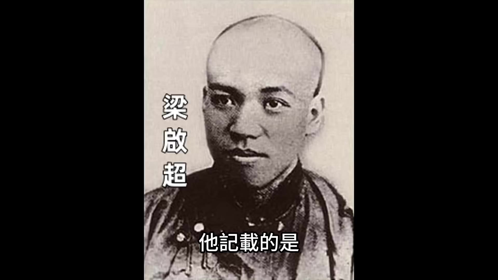
梁啓超因廣東話口音導致與皇帝在言語上的交流不夠暢順，因此光緒更重視他的著作而非口頭陳述。將譯書局的工作交給梁啟超是為了發揮他文字上的特長。維新變法自此開始，其內容包括政治、教育等多方面的改革。康有為和梁啓超的召見標誌著這些變化正式展開。
起初，他們提出改革應先從政治入手，然後才是其他領域；然而，在實際操作中卻發現各方面的改革相互聯繫密切。因此，康有為調整策略，主張全面的變法，而非僅限於某一特定部分。在與日本政治家伊藤博文的一次會談中，他強調了全體改革的重要性，認為若不全面推進改革則難以取得成效。
維新派開始著手具體的改革措施時，他們首先面對的就是科舉制度。此後，將更詳細地討論他們對當時科舉制度的看法及其所提出的變革內容。自隋唐以來，科舉一直是教育與官員選拔的主要結合方式，而讀書人唯一的出路就是通過科舉考試進入仕途。
01:00:00
科舉制度自宋代起逐漸完善，當時儒家經義成為考試的核心內容。考生若欲通過科舉考試成功取得功名，必須熟讀儒家四書五經。明清時期則採用了固定的文體「八股文」，這種文体是維新派試圖廢除的對象之一，也是此次科舉改革的重要環節。
八股文起源自北宋時期王安石變法。當時他將考試內容從唐代以來沿用的經科帖經和墨義轉變為演繹儒家經義的形式，使考生需具備對經典進行論說與闡釋的能力，而非僅靠記憶背誦。自明朝成化年間起，八股文已經成型並被廣泛使用。這種文體以排偶句式構成，包括四個部分：破題、承題、起講和結束，每部分包含兩支對偶的文字，因形狀似「腿」故稱為「股」，共計八股，因此得名。
八股文在內容上必須依循朱熹注釋的《四書》路徑，考生需模仿聖賢口吻進行創作。到了清朝，八股文格式更加固定，朝廷甚至編選了《欽定四書文》，作為全國考生的範本。因此，考生為求成功必須專心鑽研這種程式化的文章形式。
然而，採用八股文的科舉考試面臨著諸多問題：首先，學習內容被限制在儒家經典之內；其次，只允許以朱熹注釋的版本作為標準。這些局限性使得考生無法接觸其他領域的學問，如西方科技和現代知識，這引發了許多有識之士的不滿。
例如，左宗棠成為舉人後便不再參加科舉考試，他認為學習農耕、鹽政等實用學問更有意義。另一位著名人物李鴻章，其八股文成就雖高，但對科舉制度並無好感。張之洞亦然，他們皆是少年登第的士大夫，卻不願自夸於八股文。
除了學習範圍受限，行文格式僵化也成為另一大問題。考生需耗費大量時間研究和練習程式化的文章格式。然而，這些通過科舉考試出仕的大臣們，即便在考試中表現出色，他們仍擔心自己被視為只有制藝括帖（即八股）之才，而缺乏真學問。
對於統治者而言，八股文的最大優點是能夠強化考生的儒家倫理道德意識，如孝親忠君等觀念。這種思想有利於維護其統治地位，但限制了人才的多元發展和現代化的進程。
在近代社會，洋務派面對著科舉制度的挑戰。他們推行自強運動，需培養新式人才，學習聲光化電、外語及軍事技術等新學問，這顯然與傳統八股文相衝突。如嚴復留學英國格林威治皇家海軍學院，學識廣博但因無科舉功名而難以入仕。
維新派則認為，唯有改革科舉制度才能使國家朝向西方現代化轉型。他們意識到通過八股取士的考試制度，在思想形態上維護著舊式道德觀念，阻礙了國家發展。因此，維新派倡導從教育根源進行變革，以期實現讀書人意識形態的轉換。
01:05:00
當時第一個要做的就是科舉制度改革，尤其是在廢除八股文方面。
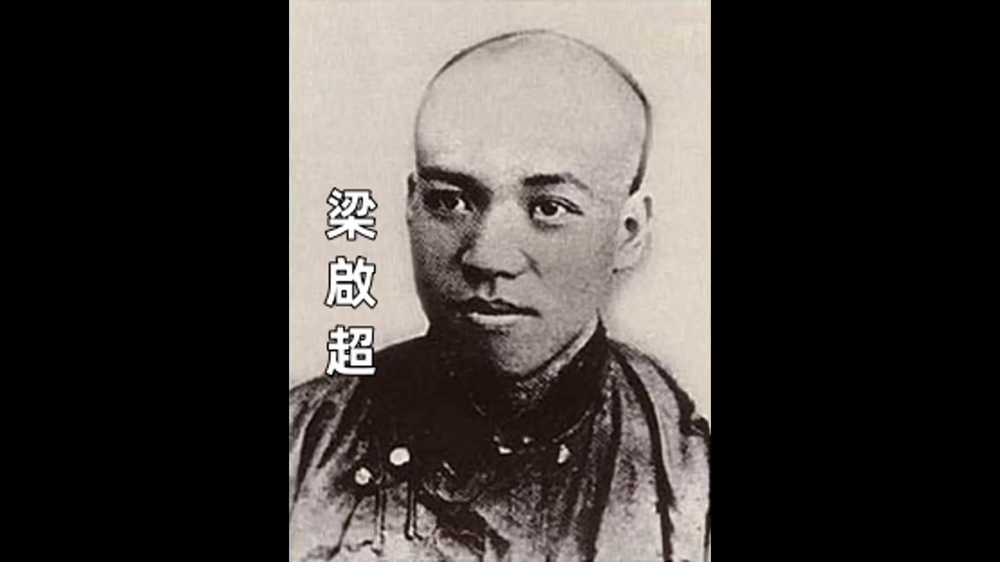
梁啟超為此設計了三個改革方案。其中最激進的上策是直接廢止傳統科舉制度，改以新式學校取代之，這些新學校將兼顧四書五經等中國傳統學問與西方現代學科教育。小學和大學畢業後均有考試，通過者分別相當於舊制中的秀才、舉人及進士。另外還有選拔優秀學生到國外留學的安排，其目的在於培養更高層次的人才。然而這種方式仍未能完全脫離傳統科舉選官制度的窠臼，梁啟超可能也因此考慮到了當時中國尚無獨立市民階層和民族資本的現實情況。
對於中策方案，雖然保留了科舉考試的形式，但將西方學科內容融入其中。例如設立明經、明算、明醫等新科目，這些新的考試項目包括傳統儒家經典之外還加入了國際公法與現代科學知識，如算術、地理和自然科學等。因此，在這一部分改革中，雖然沒有完全廢止八股文，但實際上已將其地位邊緣化。
至於下策方案則是將科舉考試分為三場進行：首場考四書五經；第二場考時事評論；第三場則根據考生所選專業科目來設置。總體來說，梁啟超的這三個改革策略代表了維新派對科舉制度改革的理解和建議。
當時貴州學政嚴修也提出了一個廢除八股文與建立經濟特科的建議。最終，在經過各方意見整合後，光緒皇帝開始實施改革措施，其中一部分是按照梁啟超下策的改進版進行，規定鄉試和會試分為三場考試：第一場考歷史及清代政治；第二場考時事評論；第三場則考查四書五經。更重要的是，在這一系列變革中，八股文體被明令禁止使用。
在朝廷內部，改革得到了不同程度的支持與接受，即便是那些執著於舊學的士大夫也對廢除八股表示贊同，因他們普遍認為八股並無實際用處。然而，這一舉措卻引起民間士子的強烈反彈，由於長年累月學習和練習八股文的人們在得知其不再被考試採納後難以接受。
康有為作為主導改革的一員也面臨來自民間的極大壓力，在某些地區甚至有人計劃對他進行暗殺。面對此種情況，康有為未改變其堅決廢除舊制的立場，並鼓勵光緒皇帝采取更嚴厲的措施來推動這一變法運動。然而隨著反對聲音越來越大，張之洞和陳寶箴聯名上書，希望能夠尋找一條更加平穩的改革之路。
01:10:00
奏折名為《妥議科舉新章折》，該奏折表達了同意進行科舉改革之意，其內容可以調整，但八股文形式不應改變。這樣的方案既迎合維新派的訴求，又顧及傳統習慣，屬於一個穩健的折中方案。光緒帝最終接受張之洞和陳寶箴的此穩健方案，然而廢除八股文的運動以失敗告終。
今天我們來談論戊戌變法中的政治改革，在歷朝歷代中，政治改革都是最困難且充滿危險的事。康有為領導的維新派認為，唯有進行政治改革才能真正實現其他方面的變革，因此他們強烈批評洋務運動是本末倒置的做法，僅僅在軍事和經濟層面推行改革，卻忽略了政體的根本性改變。
康有為主張政治改革的必要性和重要性，並指出若不進行根本性的政治變革，其他的改革努力將不會產生實質效果。他提出的政治改革方向包括重新劃分政府職能和改進官僚體系，以實現從傳統中國模式向現代西方政府體制轉型。維新派希望通過這些改革，最終建立類似日本明治維新的議會民主制度，但可惜的是，清朝的變法未能如願成功。
康有為在1898年的變法中，力圖將清廷的政治機構從傳統的官僚體系轉型至現代西方政府職能體系。這場改革主要包括兩個方面：首先，政府部門需要重新分工，不僅要分出獨立的外交部門處理外交事務，還需將內政、司法、民政和新興行業如郵政、鐵路和警務等進行更專業化的劃分；其次，政府職能應從直接管理型轉變為服務型，以更加現代化的方式運作。
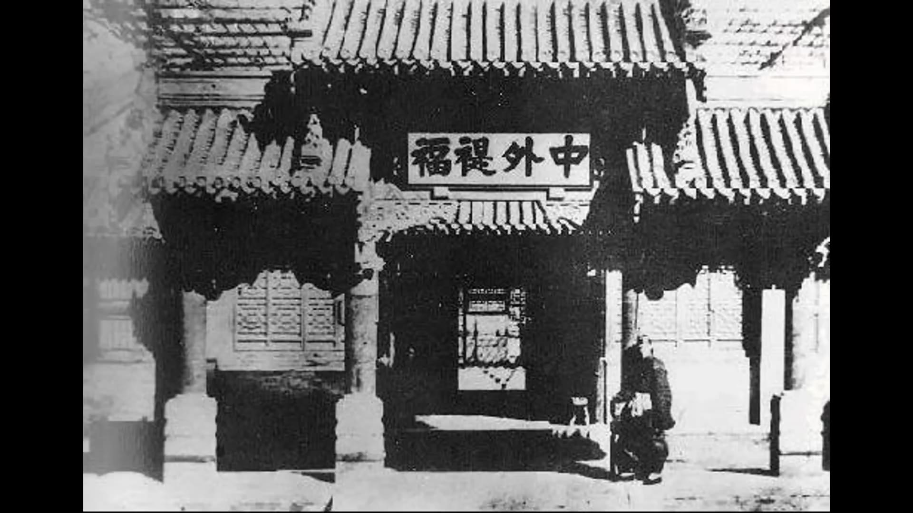
在此過程中，康有為提出取消「總理衙門」這種臨時性機構，而建立正式的外交部門來專職處理外交事務。同時，還需將司法、民政、郵政、鐵路和警務等部門從其他傳統部院中獨立出來，以便更有效地管理和運營這些新興領域。
康有為在改革方案初期曾經提出過建立議會體制的遠大目標，但後來在實際操作過程中卻有所退步。他擔心若直接提出如此激進的變法目標可能會遭致皇權反對，因此轉而通過制度局和新政局來實現議政與行政的功能，希望借助光緒帝的權威迅速推動變法，以期在最短時間內見效。
維新派所規劃的政治改革內容雖然龐大且具有前瞻性，但在實際執行過程中卻遭遇了許多困難和變數。
01:15:00
康有為推行改革的第一步，是設立制度局與新政局。他通過這兩個新機構來繞過原有的軍機處及六部，試圖在不取消舊机构的情况下完成變法。康有為之所以這樣做，主要是為了避免撤除原有權力結構引發的大規模動蕩；然而事實上，新的機構一旦成立，勢必會削弱軍機處和六部的權力，這引起了這些傳統官僚體系內人士的反對。
康有為在光緒召見後第三天即上呈奏折，請求皇帝批准設立制度局與新政局。當光緒閱讀完這份奏章後傾向於支持康有為的建議，然而朝廷內幾乎所有的大臣都對此持反對態度，他們不敢直接駁回皇帝的意願，只能採取拖延戰術。
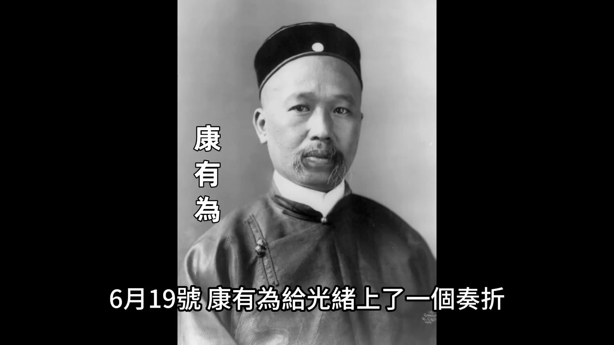
當時總理衙門的大臣慶親王奕劻被光緒催得實在是難以抵擋，便前往頤和園請示慈禧太后。因為慈禧也支持變法，但她不願失去手中的權力；如果制度局能夠成形，將意味著光緒有了自己的班底，這是她極力避免的情況。
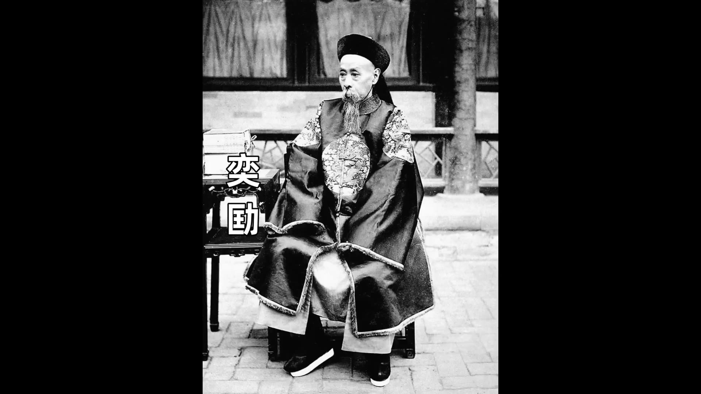
在得到慈禧的指示後，奕劻明白了該如何應對。總理衙門大臣們向光緒呈上了反對設立制度局與新政局的奏折，並以可能削弱國家行政效率、危及現有法律體系的理由全面否定了康有為的建議。然而，這份理由無法說服光緒，他嚴辭要求總理衙門重新商議，並呈上另一份奏折。
面對此種局面，軍機處選擇了另外一種策略：他們採取了一個月的時間製作了一個「變通辦法」。根據這個新方案，康有為所設立制度局的核心內容將被悄然改變：原本計劃選拔20名新式人才來協助皇帝處理新政事務和修訂法律條例的計劃，被換成了從翰林院和御史中挑選出12位人員輪流擔任皇帝顧問。軍機處還建議每部抽調一兩名司員專門負責辦理新政局的事務，這些人來自不同的部門且不隸屬於任何新機構，這使得康有為的改革計劃在實質上難以落實。
這種「變通辦法」看似把制度局和新政局的職能全部分配給了現有的官僚系統，實際上卻是對康有為設想的一種閹割與篡改。當光緒帝面對軍機處的建議時，由於無法找到反對的理由以及考慮到可能招致慈禧不滿的情況下，只能被迫接受這種「變通辦法」，從而使制度局和新政局計劃胎死腹中。
康有為設立制度局與新政局的努力以失敗告終，而其他所有的改革也幾乎都陷入了類似的困境。
01:20:00
比如說經濟改革、財政改革，廢八股以及興辦學校這些措施都陷在了這樣的政治陷阱裡面。
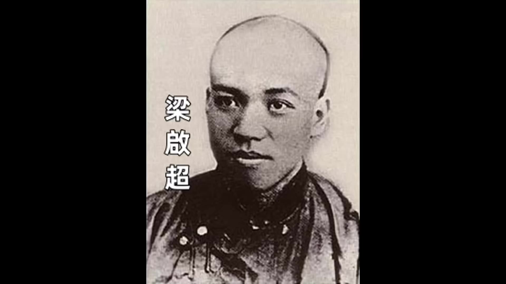
梁啟超認為這種情況是因為光緒無權，他無法做到殺一儆百。梁啟超說，雖然皇帝每天都有嚴格的命令，但始終不能殺一人或嚴懲一人，因為督撫都是西太后任用的，皇帝沒有罷免他們的權利。因此督撫都藐視皇帝維新變法的命令。除了這個原因之外，還有一個重要原因就是清廷本身存在冗政體制，有令不行，有禁不止，拖沓推諉以對策應對。這種現象在晚清已經非常嚴重，甚至可以毀掉新政。令人遺憾的是這些冗政現象本來正是這次改革要改掉的東西，卻最終由冗政擊敗了。
我們再來說一不清朝維新變法與日本維新變法的比較，康有為的維新變法主要參照對象就是日本明治維新。然而清朝和日本的情況有很大不同：清朝龐大而富有自組織性的中央集權官僚體系是政治改革的巨大障礙，清廷不僅僅涉及滿漢問題及帝後之爭，還有上千年形成的政治文化傳統的慣性；相對之下，在維新之前日本實際負責政務的是幕府，幕府軍事失敗之後退出了政治舞台，天皇周圍也沒有行政機構。所以說無論從哪個方面來看，清朝的近代化改革都是最艱難的。
接下來我們來說其他方面的政治改革，光緒最大力推行的就是「允許官民上書言事」和「精簡機構」。先說允許官民上書言事，按照清朝規定臣民給皇帝上書受到嚴格限制：四品以下官員想給皇帝上書必須通過高級官員轉送；老百姓只能通過都察院轉呈，都察院要審查上書內容是否合適。一般小官和百姓的言論根本無法上達「聖聽」。
清開國時規定，誰都不能直接給皇帝上奏折，一方面是皇帝看不過來，另一方面是減弱了皇帝權威性。能直接上奏的是擁有特權的官員，皇帝想了解情況靠監察系統和設計的相互牽制防止被欺騙。然而晚清地方督撫權力膨脹，皇帝監察系統失靈，下情不能上達，上下隔膜問題就越來越嚴重了。年輕光緒親政後由於實際上沒有權力，大臣對他欺瞞和敷衍更嚴重了，經常受到被欺騙的痛苦。
所以變法一開始，光緒最堅持的就是要廣開言路，鼓勵臣民上書，在變法開始之後，光緒發佈一道詔諭，允許大小官員和民間百姓都可以上奏，但頑固派以祖制為理由阻攔。最後光緯稍微妥協修改了詔諭，規定官員上奏要通過自己衙門轉呈，老百姓上奏要通過都察院轉呈，但負責轉呈的官吏沒有審查奏折的權力。
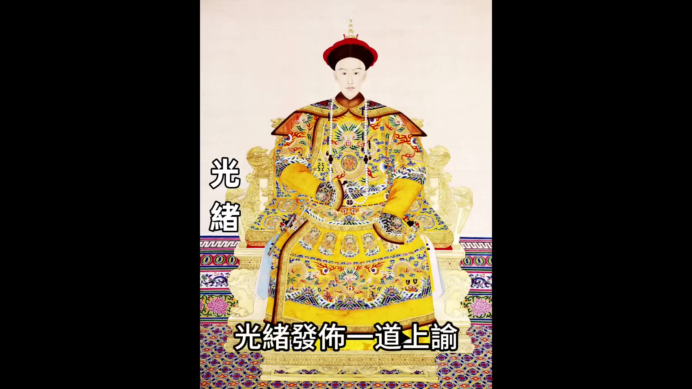
這樣一來「上書言事格局」改變了：原先能直接給皇帝上書就是一種特權，現在小官和百姓也能大模大樣地上書了。這對有特權的官員來說是個挑釁，他們見不得人的事情被曝光的風險增強了。
01:25:00
因此，幾乎所有的大官僚們對於光緒的這道停止頒布上書的敕令都是本能地抵制，儘管光緒再三強調。他們對上書的人也是各種刁難，導致這些政令無法得到有效實施。下面的官員早就習慣了服從上級，也不敢違背上級的意思。光緒看著自己發出去的政令沒有得到響應，心裡十分不痛快。
雖然大部分官員不敢得罪上級，但不怕邪的人總還是有的。在8月2號這天，禮部主事王照給皇帝上書，請他所在的部門禮部代為轉呈。王照的官職是禮部主事，僅是一個六品小官，在京城中算是典型的芝麻京官。然而，他這次舉動卻是非常勇敢。
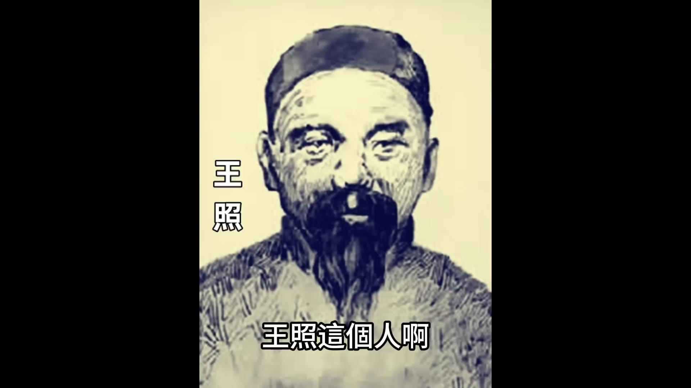
王照傾向於變法，因此能勇敢地上奏給皇帝。他的奏折很有見地，建議光緒侍奉太后一起出國考察政治，並提出首站去日本。他之所以如此寫，是因為已經看清了維新變法的主要阻力。
作為支持維新派的成員，王照曾與康有為討論過他的建議，即讓康有為上奏請慈禧太后主持變法或者把變法的大權讓給慈禧。這樣做可以減少皇帝和太后的矛盾，使變法不會受到那麼多阻礙。然而，康有為根本不聽從王照的勸說，堅持要讓皇帝獨攬變法大權。
在光緒開放了上書言事的路徑後，王照立即自己給皇帝上了奏折，建議清廷最高領導人去考察其他國家如何變法，同時主要目的也是讓光緒在慈禧太后的名義下主導變法。然而，以禮部尚書許應騤為首的禮部官員拒絕轉呈王照的奏折，理由是日本民風彪悍，且曾被刺殺，李鴻章前幾年談判時也曾遭遇過這樣的危險。
王照遭拒後並沒有退縮，堅持認為上書的准與不准應由皇帝自己決定。既然有聖諭讓大家直言不諱，他就該上奏；官員也無權阻攔。禮部六部堂卻勃然大怒，雙方爭執不下。
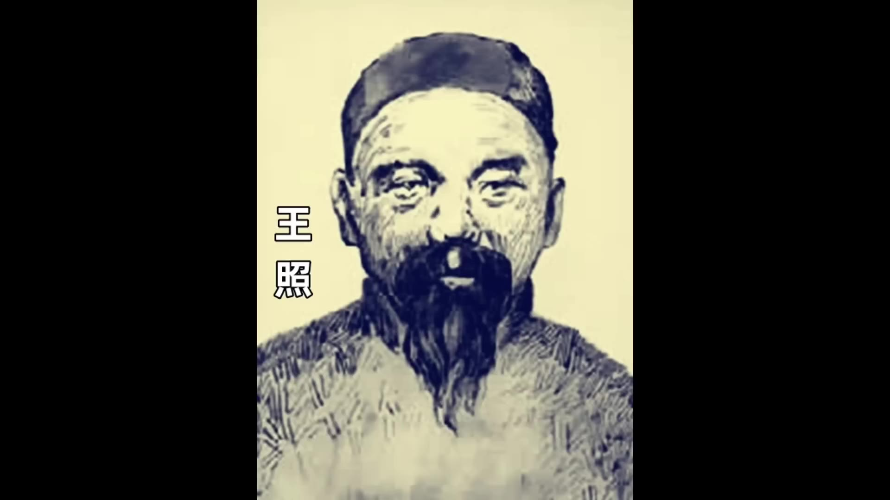
王照決心再下一城，又寫了一封參劾奏折，質疑六部堂不給他轉呈奏折的行為。並將這封參劾函再次挑釁性地交給他們，要求他們轉呈給皇帝。這樣一來，禮部被推到尷尬境地中，但他們仍拒絕轉呈王照的奏折。
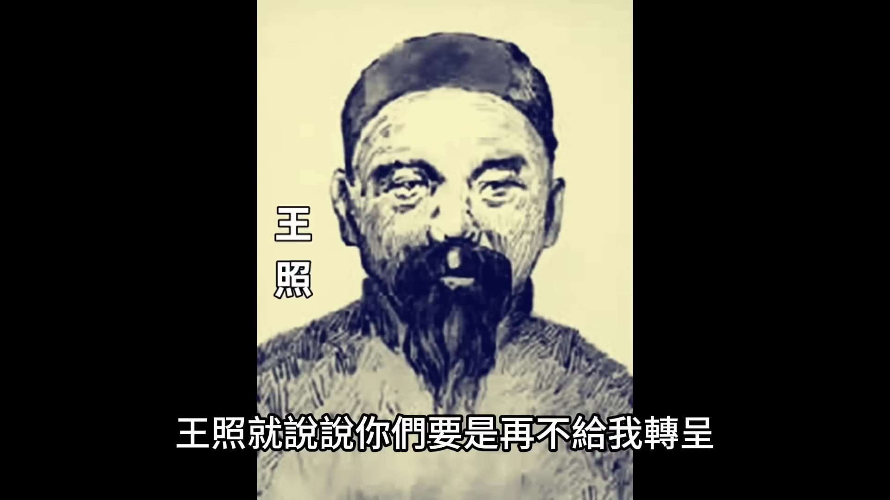
王照表示如果再不轉呈，他就通過都察院上奏，迫使六部堂不得不將他的兩封奏折轉呈給皇帝。同時，在轉呈時他們還反過來告狀，稱王照咆哮公堂且建議遊歷日本。
光緒收到奏折後看到禮部居然阻格下屬上書的行為，龍顏大怒。當時正為臣民不踴躍上書而煩惱的他馬上下令將懷塔布、許應騤和禮部六部堂交給刑部查辦，並問罪。與禮部同陣線的大臣們也不敢重罰這些抗命的大臣。9月4號，刑部的徐桐等人遵旨復奏說懷塔布等犯了該奏而不奏之罪，應降三級調用官。
然而，在變法屢次受阻的情況下，光緒怒火中燒，決定殺一儆百。他不經軍機處直接革職了禮部六部堂。同時嘉獎王照不畏強權的勇氣，賞給他三品頂戴。在這之後，下面的小官和老百姓開始踴躍上書，根據《國聞報》記載，每天每個衙門都有數十件奏折上奏。
這些上報內容千奇百怪，格式也完全不符合規範，因為以往的上書有著非常嚴謹的行文規範。比如提到皇帝、太后、天、朝廷等字樣需另起一行；碰到許多字需要避諱，如皇帝名字及列祖列宗廟號等等。
01:30:00
都得避諱，例如在行文的時候有時候需要抬一格；這些行文規範，民間百姓根本就不懂。他們上來的奏折呀，連用的紙張都是各式各樣的。對於這些現象，光緒帝表現出來充分的大度和寬容，他根本就不在乎。當時還有一個湖南舉人上書指責光緒帝變祖宗成法是不敬祖宗，要求光緒殺了康有為。對於這個很刺耳的上書，小軍機譚嗣同要追究誹謗新政的罪名，但光緒都大度地寬容了，說不要治罪，允許臣民上書言事這條路打開之後，光緒非常開心。他終於走出來了被群臣欺瞞的困境，他自己改革的政令也終於有一樣是生效了。
但是引來的後果也是嚴重的，光緒過重地處罰了禮部六部堂。要是一般的君主啊，處罰就處罰了，誰也不敢說什麼；可是光緒這個皇帝是有人管的。事實上這是維新變法以來光緒第一次沒請示慈禧就自行做主做出的重大決定，這件事情讓慈禧很不高興。
9月6號，光緒去頤和園給慈禧請安的時候被慈禧嚴厲地訓斥。
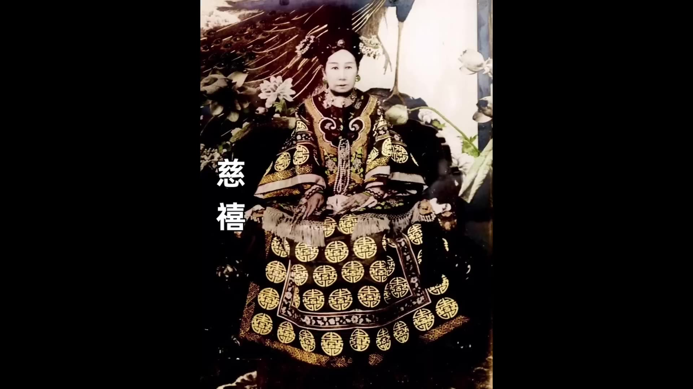
慈禧說：「光緒九列天臣，非有大故不可棄。你現在的做法？」
光緒回應說：「就算祖宗在今天舊法也該變了，我寧可破壞祖宗之法，也不忍放棄祖宗之名，不忍失去祖宗之地。」光緒以前啊是從來不敢回嘴的，這次居然敢堅持自己的意見了，他也是忍無可忍了，要攤牌了。光緯雖然嘴上沒輸，但是他已經聞出來慈禧的火藥味了，他心裡感覺到不妙，變法有可能快到要被叫停的邊緣了。
光緒的感覺沒有錯，這次事件確實是變法失敗的一個信號。好了，今天就講到這裡了，後面的內容我們下期繼續講。
我開通了「1921-1945年的專題歷史課程」，有興趣的朋友歡迎點擊影片下方的鏈接瞭解，歡迎點贊關注。
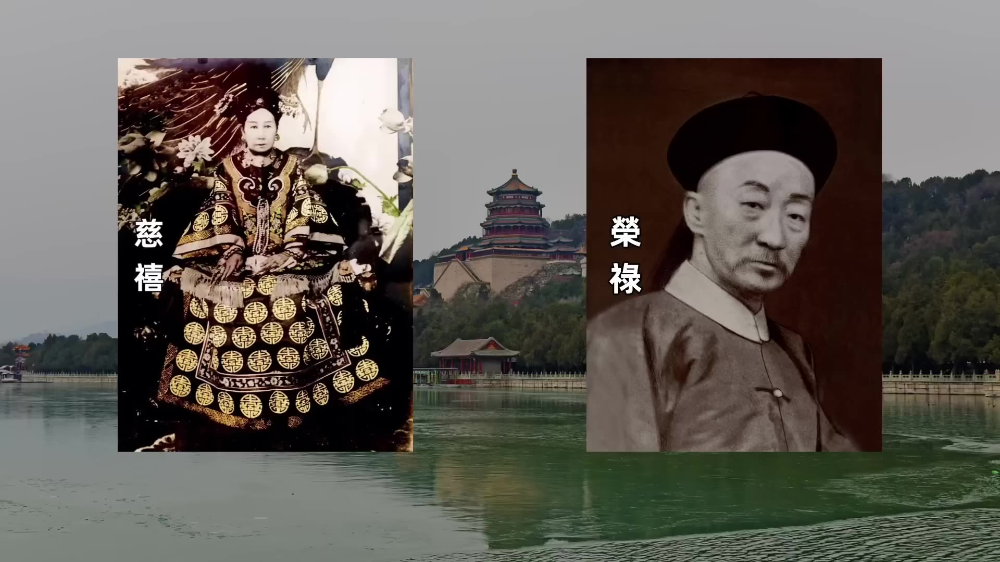
慈禧太后搬進頤和園之後有一天榮祿來到頤和園看慈禧。榮祿是慈禧最親近的寵臣了。慈禧讓榮祿看宮內的扎花，她拈起一枝花說道：「你瞧這是我扎的花，你看好不好？」榮祿是很明白慈禧的心意的啊，他馬上就說：「老佛爺不止扎花扎得好……」慈禧長嘆一口氣說道：「往後啊，我也就只能扎花了。」太后說這句話的時候帶著無限的惆悵和感慨。這是記錄在《成庚辛紀述》裡面的一段對話。
從慈禧和榮祿的對話我們能看出來，慈禧搬進頤和園之後，她的心並沒有放在遊玩優美的園林上，而還是在朝堂之上。在重修頤和園的時候，光緒比慈禧更加用心。光緯想的是頤和園修好之後，慈禧搬進去就可以頤養天年了，也可以遠離政治中心了。
實際上，慈禧搬到頤和園之後，並沒有放權。光緯比之前還多了一項「勞役」，就是每隔幾天必須到頤和園請安，說是請安啊，其實是去請示彙報。由於慈禧始終沒有放權，所以到戊戌變法的時候，光緯雖然名義上已經親政十年了，但是他的閱歷和經驗並沒有太多的長進。
太后和皇帝這種「二元的政治架構」是成戌年間對維新變法最大的阻力。上期影片我們講了政治改革裡面的一部分內容，有康有為請光緯皇帝開制度局和新政局，但這兩個都沒開成，沒開成的原因呢是慈禧太后在背後給大臣們撐腰，大臣們才敢偷梁換柱把光緯搪塞過去。今天我們再講一個當時震動最大的政治改革。
就是光緯要精簡官僚機構，清政府有很多陳舊的沒有實際用途的衙門，光緯對這些衙門深惡痛絕，他要裁撤這些沒用的衙門和淘汰冗官。那這些機構都有什麼啊？比如說詹事府，詹事府是為太子服務的，清朝是不立太子的，所以這個衙門呢根本沒有存在的必要。詹事府之所以會存在完全是繼承了明朝的體制。
跟詹事府同等性質的還有像宗人府、大理寺、通政司、太常寺、光祿寺、鴻臚寺等等機構，這些機構要麼他們執掌的功能已經沒有用了，要麼就是大幅度減少了，都有很大的可以裁撤的空間。
再比如說啊，
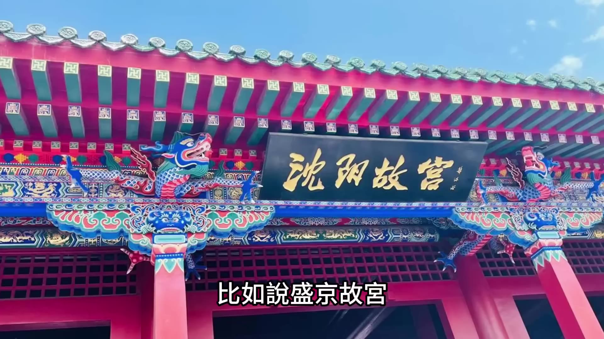
比如說盛京故宮。清朝入關的時候定都在盛京也就是瀋陽，盛京也有六部這麼多年了，盛京的六部都還留著呢，這些部門也完全都沒有用處了，裡面的官員都是在白吃國家的俸祿。這是中央的一些機構，還有地方機構，地方機構可以裁撤的空間更大。
比如說地方上最大的是總督和巡撫，很多地方都是督撫同城的情況，他們的職能有很多重疊，所以督撫同城的情況可以裁一個。
01:35:00
再來看看河道總督這個職位，它原本負責統籌協調治理黃河。隨著時局變化，如今山東境內的黃河管理完全可以由山東巡撫兼任，河南境內的則可交給河南巡撫處理，因此河道總督已無存在必要，可以考慮廢除。類似的機構如漕運、鹽政等也因時代變遷而失去了原有作用。
光緒皇帝欲大力改革這些無效機構和冗餘官員，主要是出於經濟考量：甲午戰爭後清政府需賠償日本大量資金並借外債，急需解決財政困難。維持這些沒必要的機構每年花費巨大，因此他決定趁變法之際一併裁撤。
岑春煊對此持有相同觀點，此人曾被稱為「官屠」，因善於整頓吏治而獲此名號，屢次裁減冗員。8月23日，岑春煊向光緒呈遞奏折，建議裁撤相關機構。8月30日，光緒正式發佈上諭，宣佈廢除詹事府、通政司、光祿寺、鴻臚寺、太僕寺和大理寺等衙門，並將其業務分別併入禮部、兵部或刑部。同時，他還宣布雲南三個省的巡撫職位將被取消；湖北、廣東則由總督兼任巡撫之職；河道總督也予以裁撤。山東境內的黃河交給山東巡撫管理，河南境內的黃河則由河南巡撫負責。
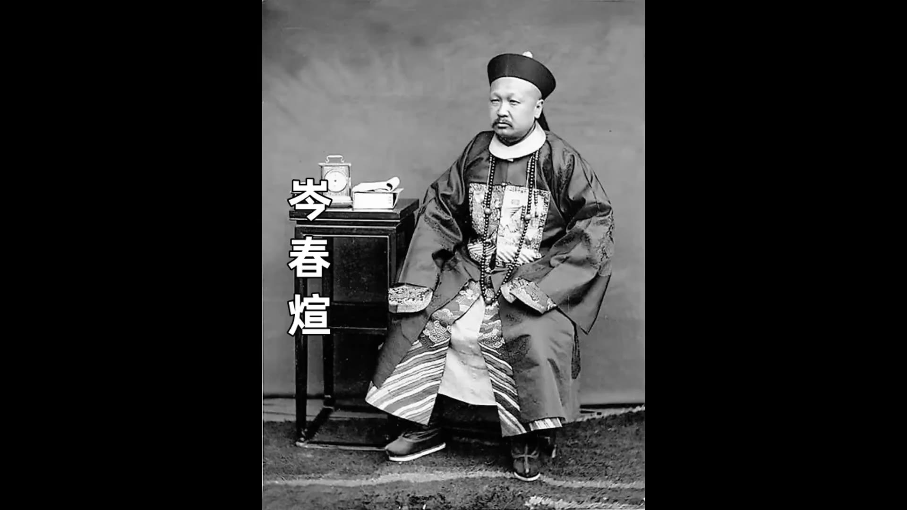
光緒在上諭中強調，除被裁撤之機構和職位外，各省督府須參照此精神，在一個月內全面清理冗員。這項決定立刻引發全國官場的恐慌，成為百日維新期間影響最大的措施之一。已確定被裁員的人士紛紛抱怨；未被裁員者則人人自危。當時北京城中流言四起，有關翰林院和御史職位的存廢等消息在大街小巷迅速傳播。更離譜的是還傳出光緒購買了大批西裝準備改易服飾及剪辮子的消息；甚至有人說康有為曾給光緒進獻迷藥，致其喪失理智。
此場風暴給反變法的守舊派提供了極佳的機會。他們趁機煽動民情，擴大震動範圍至整個官僚體系，並以批評裁撤機構為名博取人心。戶部尚書徐桐便是這一潮流中的領袖人物，他堅決抵制裁員，甚至公開聲言「先革去老夫 徐議未晚」，這番態度促使更多官員倒向守舊派。
原本在戊戌變法啟動前，清廷多數官員傾向於改革，但由於大規模的機構裁撤及冗員裁汰，原先支持變法的人開始懷疑其可行性。各地督撫也紛紛抗命；即便光緒三令五申，仍無回應。事實上，在維新運動被終止時，並未有一人被裁撤。
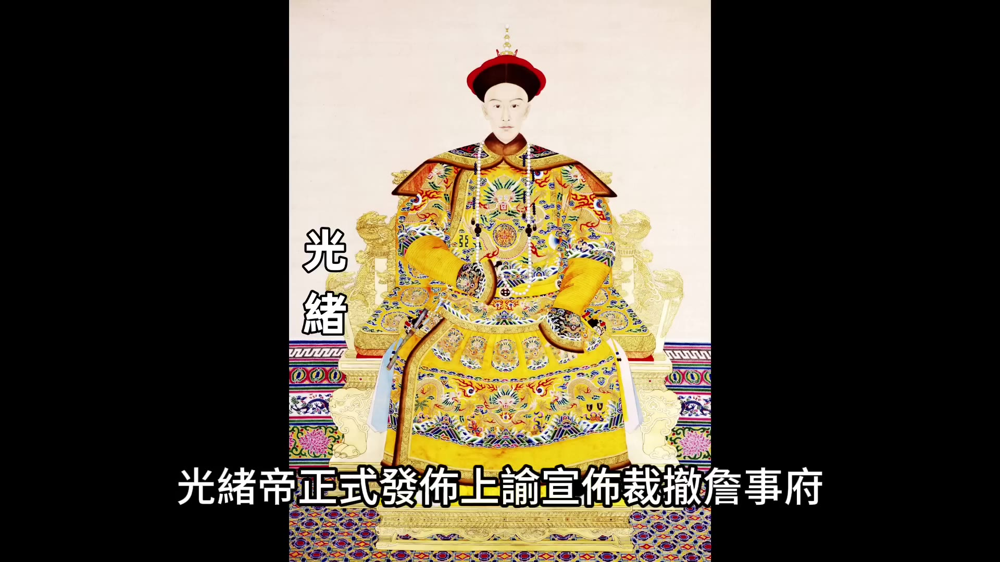
從某種程度上講，光緒要廢除這些衙門和冗官的說法大體正確，但他選擇在此刻採取行動則是不合時宜。這些機構多數存在已久，積弊難改；歷代皇帝雖明其弊端卻無力解決，因它們在傳統政治體系中不僅扮演行政角色，還擔負安置士大夫的功能。閒置的衙門權力不大，不會引起他人不滿，這也是它們能夠長期存活的原因之一。
未建立起一套新的政府架構來逐步取代舊有官僚體系前，單靠簡化機構以整頓吏治不僅不能提升效率和節約經費，反而會製造不必要的社會動蕩。從策略層面看，維新變法所遇到的阻力本已很大，精簡機構雖非此次改革的核心內容卻因之引發了一場影響朝野的大風波，這實在對新政百害而無一利。
值得一提的是，在此事上，康有為與光緒的看法並不一致。
01:40:00
康有為主張選拔通才以推行新政，但同時保留舊官僚機構不撤銷。他提出的新設制度局等措施引發了舊衙門實權部門的抵制，導致維新運動陷入被動局面。在這種情況下，頑固派趁機拉攏人心，並聚集了一批旗人貴族向慈禧太后哭訴，進一步加劇了變法難度。
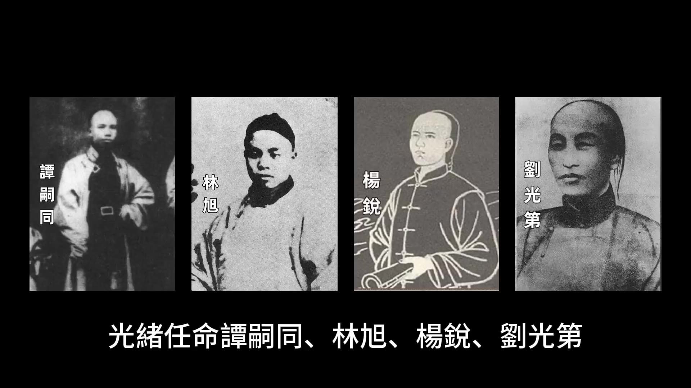
9月5日，在維新變法關鍵時刻，光緒帝任命譚嗣同、林旭、楊銳、劉光第四人為軍機章京。軍機章京雖是中層職位，但因其實權地位，常常能發揮比一般軍機大臣更大的作用。每班有8名軍機章京，他們處理軍機處所有事務，小至傳達命令，大到草擬上諭。
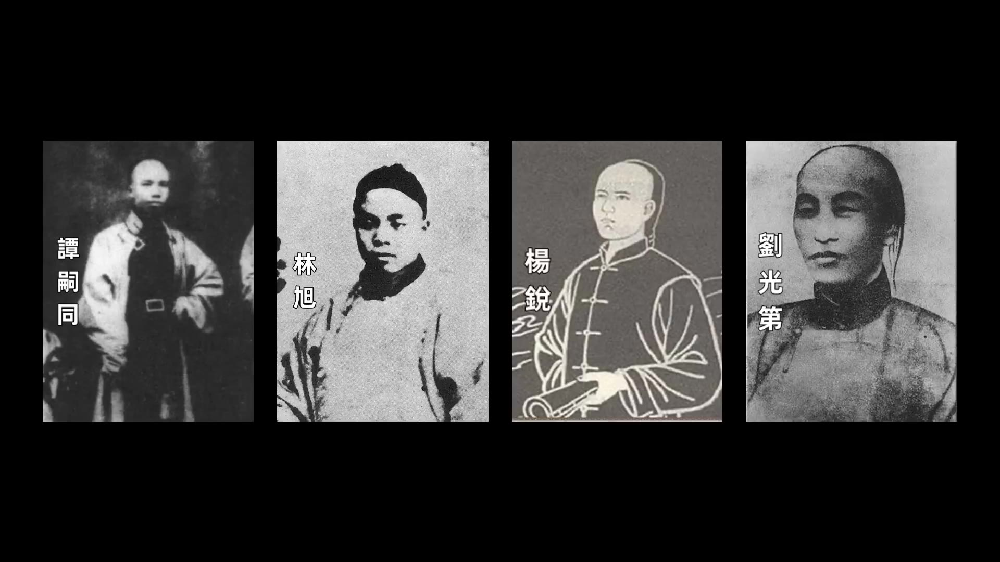
這四人入職軍機後成為了著名的「四小軍機」。光緒帝任命這些年輕官員的原因有二：一是安插自己的人進來以應對翁同龢被免職的影響，二是需要具體人員來推行政策變革。與康有為和梁啟超不同的是，這四位年輕官員均有一定根基。
譚嗣同是湖北巡撫譚繼洵的長子。雖然其父是循規蹈矩之人，深受西太后信任，但譚嗣同一反傳統，好結交江湖義士，慷慨仗義，與康有為、梁啟超關係密切，在湖南維新運動中佔據重要地位。
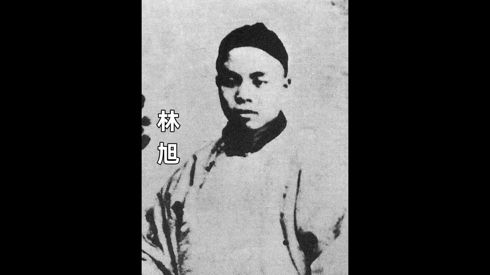
林旭是福建人，其妻為晚清重臣沈葆楨孫女。他對康有為的學術與政治主張頗表贊同。此外，林旭還曾擔任維新運動中閔學會的會長並受榮祿提拔。劉光第是張之洞親信，在刑部坐鎮十年，其入職軍機處實際上是由張之洞通過陳寶箴推薦而成。楊銳則為張之洞學生，曾多年在其身邊工作，對康梁主張有一定認同但與康有為關係若即若離。
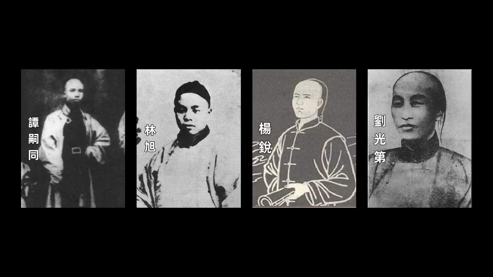
自從四小軍機上任後短短的16天內，他們協助光緒帝頒布了一系列新政詔令，處理了大量的臣民上書，並出台了一系列整頓財政稅收及大力發展民族工商業的法令。在維新派與頑固派對立最嚴重時，湖南頑固派曾廉上書要求誅殺康有為和梁啟超，當時值班軍機處的是譚嗣同和劉光第，他們逐條批駁並以全家百口性命擔保二人無罪。此時，維新變法運動已成為全國先進人士的共同事業，不僅僅是康、梁的小圈子了。
01:45:00
我們也介紹幾個人。其中一位是御史楊深秀，他來自山西，是一位著名的漢學宗師。維新運動興起的時候，楊深秀已經年過半百，但他憑借自己御史的身份為變法大聲疾呼、力薦維新人士，果敢地上述彈劾頑固派大臣懷塔布等人。禮部六部堂因此的革職事件中，就是因為楊深秀的彈劾而導致懷塔布等人被撤職。
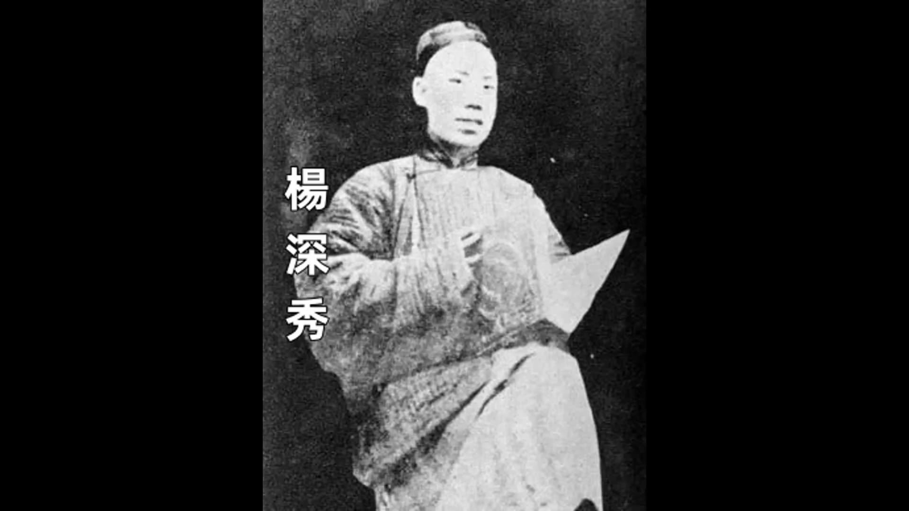
湖南巡撫陳寶箴被頑固派彈劾時，楊深秀挺身而出為其抗疏答辯。在變法期間，楊深秀無所畏懼，幾乎到處都參與了爭論和抗議活動。慈禧發動政變後，曾經參與新政的人大多人人自危，紛紛洗刷自己，而楊深秀居然還敢站出來。他援引古義要求慈禧撤簾歸政，這讓慈禧大為尷尬。最後，慈禧惱羞成怒，將楊深秀列為戊戌六君子之一。在成戌六君子中，楊深秀是年齡最大的一位。
當時還有一個人也很危險，差點成為第七個被殺害的人，他就是徐志靖。徐志靖也是維新運動中的勇敢之士，曾上書推薦康有為、梁啟超以及四小軍機等變法領導人。變法失敗後，他也和六君子一起被捕入獄，幸運的是由於父親與李鴻章的交情深厚，李鴻章花大力氣將他保釋出來。
張之洞當時也想保楊銳，但未能成功。維新運動中有許多中堅人物如嚴復、夏曾佑等，還有黃遵憲、容閎、陳三立、唐才常、章太炎、畢永年等人，他們都是衝鋒陷陣的志士，與海外革命者孫中山等人的思想境界和學術水準不相上下。康有為與梁啟超被稱為維新領袖，是因為他們率先為變法奔走呼號，將維新的願望聚合成一場頗具規模的運動。
根據學者的研究，在1898年之前，慈禧查看臣工奏折和光緒上諭的次數往往三五天或十多天到二十天才一次。隨著維新運動的發展，她開始頻繁地讓軍機處呈報奏章，尤其到了九月份，幾乎每天都要求軍機處呈報。可以看出慈禧對變法越來越不放心了。
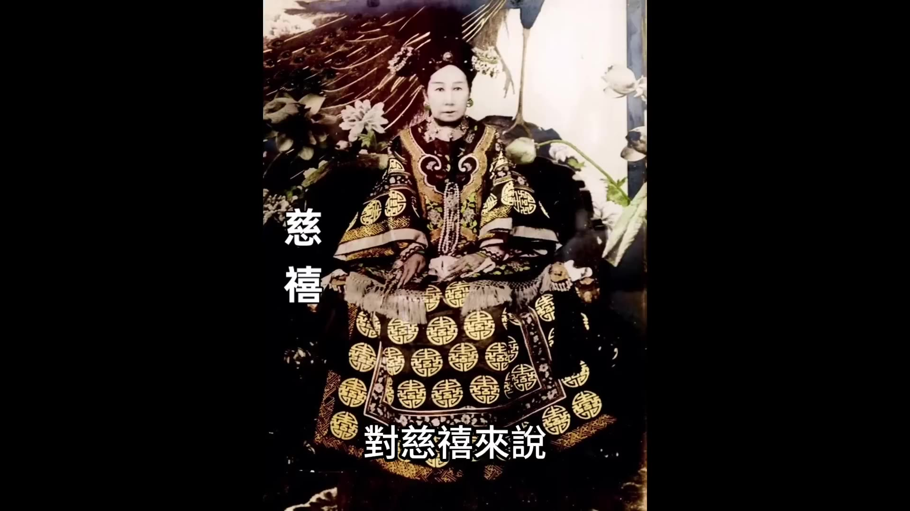
當光緒聽從康有為的建議想要開設懋勤殿時，這激怒了慈禧。她最忌諱的是讓皇帝擁有自己獨立的班底。維新派為了籌備懋勤殿，還組織了一系列活動，包括查閱三朝聖訓和舉薦人才等，由徐志靖和王照上奏舉薦人才。
慈禧對於任何可能削弱她權力的行為都堅決反對。因此，在光緒前往頤和園向慈禧請安時，她的臉色非常難看。當得知光緯想開設懋勤殿時，他不敢提及此事。在這期間（9月15日），光緯召見了楊銳，並給他一份語意惶惶的密詔。
01:50:00
四小軍機中，光緒單獨召見楊銳，因楊銳是張之洞的人，與康有為及梁啓超關係相對較疏遠。
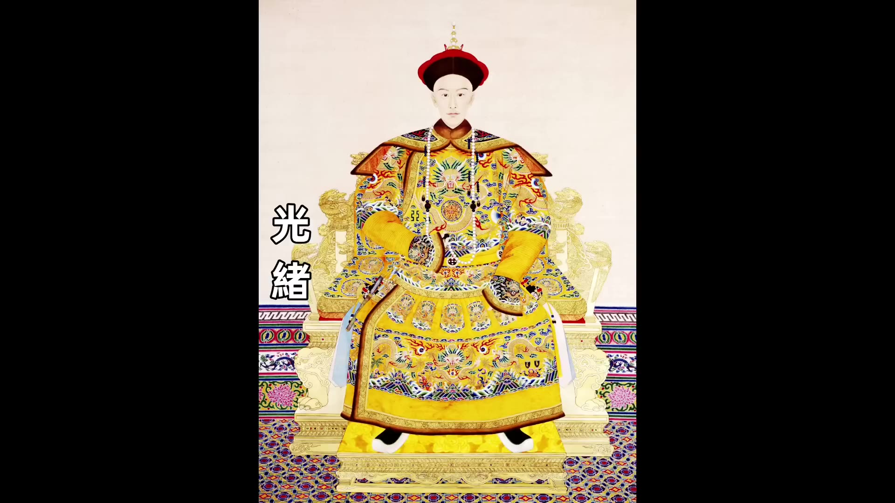
光緒密詔楊銳的內容大致是希望在不違背皇太后聖意的情況下繼續變法。楊銳建議光緒與康有為劃清界限，因為所有引起太后反感的問題皆出於康有為之建議，並稱「康不得去，禍不得息也」。9月17日，光緒令康有為前往上海督辦官報，同日又召見了林旭，據傳再次授予密詔，但這份密詔是否真的存在學術界仍有爭議；即便存在，康有為也可能篡改過其內容。至於光緒與林旭的會面內容未被記載，學者多推測可能涉及要求林旭迅速離京。
康有為未能完全理解光緒的意圖。
他懷疑光緒已被軟禁於頤和園，並聚集譚嗣同、梁啓超等人轉述了兩道密詔。康有為誇大變法危機，鼓動維新人士準備武力包圍頤和園以劫持慈禧太后。此前坊間流傳的謠言稱慈禧將在天津閱兵時廢黜光緒，也使維新派感到了緊迫性。
康有為起初聯繫了支持過強學會的聶士成及袁世凱等武官，最終選定與自己關係密切、且有能力籌備軍事行動的袁世凱。9月14日，袁世凱抵達京城準備接受光緒召見。次日，光緯破格提拔袁世凱為正二品兵部侍郎，並允許他不受榮祿節制自行其是。
康有為得知後拍案叫絕，稱天子聖明。然而，光緯驅逐康有為的意圖在於緩和與慈禧之間的緊張關係，而非康所理解的保護自身安全。
01:55:00
康有為在力圖救護光緒帝時，實際上加劇了他的困境。光緒帝提拔袁世凱，意圖藉此掌握兵權以制衡慈禧太后，但這種冒險策略並未得到維新派成員的一致支持。例如，維新派內的畢永年與譚嗣同皆對康有為欲發動武力政變持保留態度，認為袁世凱不宜擔此重任。畢永年更直指袁世凱受李鴻章影響深重，除非李氏本人出手相助，否則袁世凱斷然不會行動。而譚嗣同雖與袁世凱有往來，同樣不願見其陷入險境。
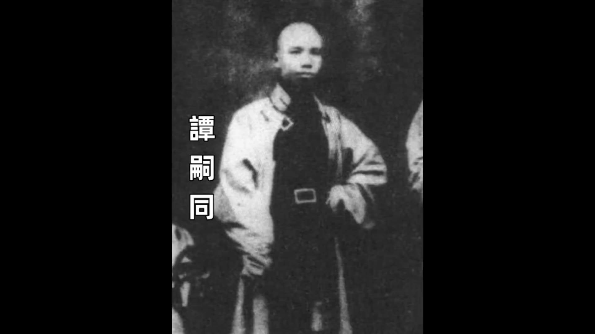
然而，康有為堅決主張由袁世凱帶兵前往北京勤王，並廢除慈禧太后的權力。於是，在光緒的指示下，譚嗣同深夜造訪法華寺，與尚未離開北京的袁世凱密談，透露維新派發動政變的細節。譚嗣同希望袁能率領其麾下的新建陸軍7,000人前往京師支援光緒帝，並控制頤和園區域。康有為同時指派畢永年準備100名士兵在適當時機宣佈廢除慈禧太后的政令。然而，袁世凱對此計劃持謹慎態度，考量自身軍隊實力與京城的防衛部署，他深知若僅憑新建陸軍7,000人，將難以抗衡北洋地區其他幾支數萬人的武裝力量及京師內各營伍十餘萬兵力。加之新建陸軍從未經歷戰鬥驗證其實力，袁世凱更難下決心。
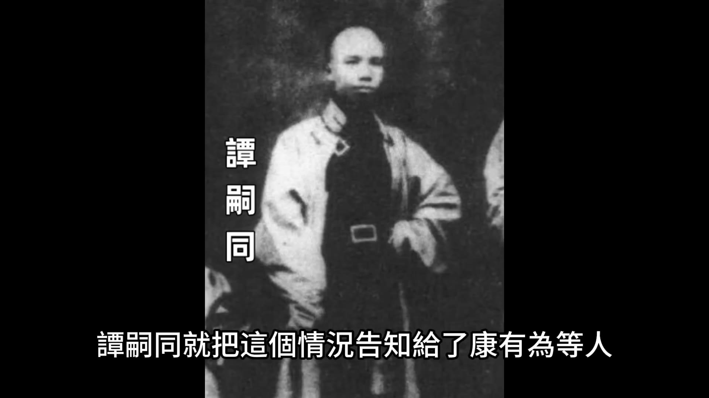
譚嗣同與袁世凱的談話至9月19日凌晨3點方才結束，但袁世凱仍未明確表态。譚嗣同意識到袁可能不會答應支持政變，遂將此情況告知康有為等維新派人士。在這之後，他們決定袁世凱出兵的可能性微乎其微，因此遵照光緒的諭旨提前離京。9月20日黎明前，康有為先行離開北京前往上海。
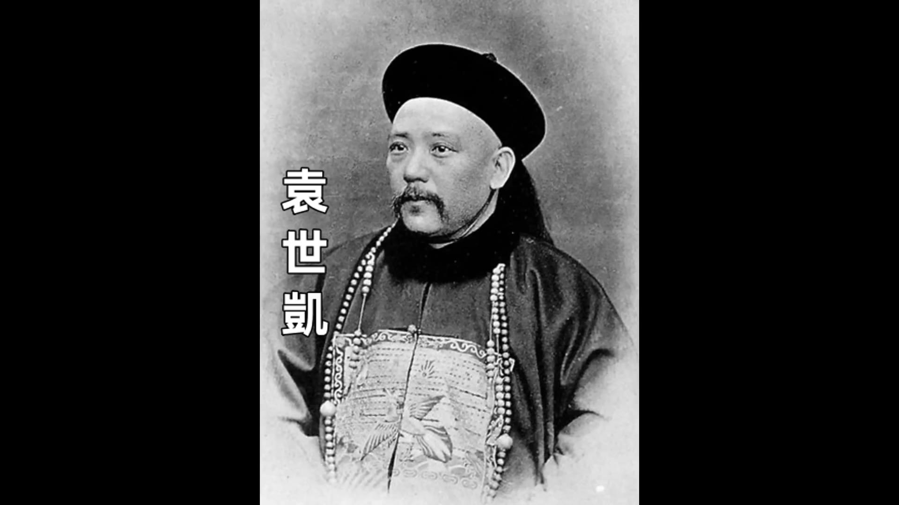
而就在康有為離開後的第二天，即9月21日，慈禧太后在京城發動政變，重新訓政並終止維新變法。此後，袁世凱返回天津向榮祿告密，告知維新派意圖發動兵變的消息。
對於慈禧復出訓政的原因與袁世凱告密的影響，歷來存在爭議。根據最新的史學研究，袁世凱向榮祿告密時，北京政變已成事實，因此其告密更多是為自保而非直接導致政變。然而，袁世凱告密一事仍對慈禧復出訓政起到了一定的助力作用，使其有藉口名正言順地再掌權。
慈禧太后之所以能夠在光緒帝親政後再次奪回大權，與她早前已開始限制光緒的實際行政權力息息相關。自9月18日起直至21日政變發生前夕，慈禧就已逐步收回了光緯處理日常政務的決定權限，而袁世凱告密不過是其再登皇位的一個合理借口罷了。
慈禧復出訓政後，藉由袁世凱的告密，她不僅得以名正言順地再次控制朝廷大權，還進一步鞏固了自己的地位與影響力。
02:00:00
突然之間，她變得理直氣壯且極其委屈。她的理由很充分，因為她是從小撫養光緒長大的人，而光緒卻支持維新派發動兵變針對她。此後，光緒的處境變得空前惡劣，被軟禁再也沒有機會復出。因此，康有為實際上是害了光緒皇帝。
慈禧太后復出之後，戊戌六君子被殺，康有為、梁啓超逃亡到海外，維新變法因此終止。維新力量遭受重創，中國當時最優秀的人才不是死了就是逃走了，好不容易造就的維新事業很快就被頑固派徹底反撲，甚至連洋務事業都受到了影響。
在政變剛過去的時候，京城內外風聲鶴唳，誰都不敢談新政或西學。凡是談及西學的人，有可能被指為康黨而被抓捕。當時除了同文館之外，其他地方連ABCD都不敘述西學了。所有的政事都恢復到了變法以前的狀態，戊戌政變將國家帶入了近代以來最黑暗的時刻。
慈禧太后為了自己的權力，扼殺了國家從內部改革的唯一機會。我們說雖然光緒帝、康有為、梁啓超他們的政治經驗不足，變法也得罪了很多官員和士子，但如果沒有慈禧在背後撐腰，頑固派也不會如此狠辣。
政變之後，慈禧雖然重新掌權復出訓政了，但她也不是贏家。她被迫與頑固派合作，這就直接引發了1900年的「庚子國難」。
自此以後，國家再想通過自己的改革來完成近代化轉型幾乎已經沒有任何可能。戊戌變法到此告一段落，最後給大家留一個問題：如果維新派他們選擇的是慈禧太后而非光緒主導變法有沒有可能獲得成功？歡迎大家在評論區留言討論。
「1921-1945年的專題歷史課程」已經開通，感興趣的朋友歡迎點擊影片下方的連結了解。今天的分享到此結束，感謝大家的支持，歡迎點贊關注。
00:00:00
大家好今天我們講戊戌變法戊戌變法是中國近代化轉型的非常重要的一個節點它可以說是清朝最後—可以通過內部的改革來進行轉型的機會在甲午戰爭失敗之後啊清朝從上層朝廷的官員到下層民間的有識之士都有一種被侮辱的感覺有要雪恥的聲音也有要改革的聲音這時候朝廷有意願財力也還夠可以說是一個很好的改革時機這次變法如果能成功中國可能會以最小的代價或者說是比較小的代價吧來完成現代化的轉型但是我們都知道啊這次戊戌變法是失敗了進行了103天就失敗了戊戌變法的失敗就導致頑固派上台引發了庚子國難八國聯軍進北京清朝元氣大傷清朝再想通過自發的內部的改革來完成現代化轉型基本上就不可能了所以戊戌變法對於清朝來說對於我們整個民族來說都是非常重要的一個節點主導這次變法的最重要的幾個人物
像光緒、慈禧、康有為、梁啓超在變法失敗之後他們都沒有好處都是輸家康有為和梁啓超流亡海外了光緒被囚禁了慈禧開倒車只能跟頑固派合作了最後導致了庚子國難我們說慈禧在一開始啊肯定她不是一個頑固派啊在她執政這麼長的時間裡面洋務運動是搞得風風火火雖然說洋務運動是李鴻章張之洞這些地方大員主導的但是要是沒有慈禧的支持啊也不可能搞得這麼大搞得這麼久戊戌變法這麼大的一個改革的動作要是沒有慈禧的點頭也是不可能開始的那由於變法的這個過程就導致慈禧徹底被推向了頑固派也扼殺了變法成功的可能性慈禧人生中做的最大的一個錯事啊或者說是對我們這個民族最大的惡就是這次扼殺了戊戌變法有人說慈禧犯最大的錯是在庚子年向十一國宣戰導致八國聯軍進北京但實際上那是果真正的因是在戊戌變法的時候就已經種下了所以說這場變法的失敗沒有一個赢家都是輸家那這次變法為什麼會失敗今天我們就來講講這其中的過程
我們先從戊戌變法最重要的一個人物開始講就是康有為
康有為是1858年出生廣東南海人他祖上是做官家裡條件也比較富裕他有一個叔叔叫康達行當時是福建候補的知府他參加過保衛台灣的戰爭1874年日本出兵侵犯台灣的時候康達行跟沈葆楨一起去了台灣前線一年之後呢左宗棠去新疆平定阿古柏的叛亂康達行又跟隨左宗棠的軍隊後來法國侵略越南的時候康有為的另外兩個叔叔康達騰和康達遷跟隨馮子材參加了抗法戰爭他這幾個叔叔呀對康有為的成長肯定是有影響的至少讓他看到了國家正處在一個動蕩的時局他的長輩都在為保衛家國而奮鬥康有為的父親康達初是個讀書人康有為的老師是朱次琦朱次琦是當時廣東一個很出名的大儒康有為呢也是拜朱次琦為師跟他學習儒學康有為的學術的根基是傳統的儒家當時的學生學習啊只有一個目標就是考科舉為了考科舉需要學八股但是康有為非常討厭八股他讀的書呢也很雜他讀的書大多數都是跟考試無關的
康有為啊是一個很愛讀書的人啊他一生讀了大量的書但是他在該準備考試的年紀卻不讀應試的書這樣造成的結果就是他讀了很多年書參加了好幾次考試家裡面給他想辦法康有為19歲的時候他祖父給他辦了一個蔭監生的身份蔭監生就是當時清朝官員官職達到了一定品級之後他的嫡系子孫就可以不用通過童子考試就能拿到身份康有為的祖父康贊修的品級夠了就給康有為辦了個蔭監生的身份康有為有了這個蔭監生身份他就可以直接參加鄉試去考舉人了康有為在21歲的時候偶然看到了一本書城人生1這本書叫《環遊地球新錄》是一個叫李生的人寫的
李圭是當時寧波海關副稅務司的文牘文牘就是現在的秘書1876年 赫德委派李生去美國費城參加美國建國100週年博覽會李圭就漂洋過海去美國了在美國參加完博覽會之後他並沒有立即回國他去環遊地球一圈新加坡像英國法國、意大利、埃及、越南等地方他都去了個遍在回國之後李生就寫了本書叫《環遊地球新錄》》這本書剛出版不久康有為就看到了在讀了這本書之後呀康有為算是開啓了一個新世界
00:05:02
他開始大量的去尋找然後閱讀介紹西方的書籍然後呢康有為去了一趟香港香港離廣州不遠啊去看看這座英國人治理的城市1882年 康有為25歲的時候他去北京參加科舉考試這是他第一次到北京考試是沒考上回來的時候呢他特意繞道去了上海他想去看看上海的租界他在上海購買了大量的介紹西方的書籍還訂購了一份《萬國公報》《萬國公報》是當時基督教會在上海創辦的編輯大多數都是外國來華的傳教士比如說林樂知比如說李提摩太、丁韙良等人他們寫的文章啊大部分都是介紹西方各國的地理、歷史政治、宗教等內容
康有為回到廣州之後就埋頭的去看這些介紹西方的書然後呢他居然就形成了自己的思想開始寫書從1884年到1887年也就是他27歲到30歲這三年他寫了好幾本書其中就包括《人類公理》《人類公理》這本書就是他後來《大同書》的前身我們看康有為學習成長的這個過程呀他從小學的是儒家的底子他所有關於西方的知識都是通過書本上看來的他唯一去過西方人治理的地方他唯去過西方人治理的地方就是香港和上海租界他是完全沒有過國外生活的經歷然後呢他就開始寫書著述來闡發自己的思想我們看跟他同時期的人啊比如說嚴復
嚴復比康有為大4歲嚴復是翻譯了大量的西方的書籍他寫的書傳播西方思想也寫了很多給國人啓蒙的著作嚴復是在英國留學過兩年多的而且嚴復實際考察了西方的議會啊西方的法院西方的三權分立他都是親眼見過的他回來之後才能寫書康有為是完全沒去西方體驗過就能寫書還能形成一套理論思想體系我們只能說他在這方面是很有天賦的那我們再換一個角度啊他沒有過體驗他寫出來的東西肯定是更理論化的跟實際脫離的也會更遠
1888年康有為31歲他第二次進京考試康有為考試還是沒考上他復習考試不積極但是他做另外一件事情卻很積極他做了一件打破常規的事情他給光緒皇帝寫了一份政治建議書政治建議書就是他的《上清帝第一書》在戊戌變法之前啊康有為一共有六次上書這是第一費這一年呢是光緒皇帝剛剛親政康有為認為皇帝親政這是一個新時代的開始
康有為的這個舉動啊肯定是不合規矩的首先他舉人沒考上連個功名都沒有就算他有功名啊按照清朝的規矩也得是四品以上的官員才能給皇帝上專折奏事四品以下的官員需要都察院代奏像康有為這樣的沒有功名的布衣連上奏的資格都沒有還有呢給皇帝上奏折是有很大的風險的你寫的東西萬一犯忌諱了直接就是殺頭的罪名這些風險呀康有為知不知道呢他肯定是知道的康有為當時給他弟弟寫了一封信這封信就是告訴他弟弟說他幹的這個事情有可能帶來禍事讓他弟弟照顧好家裡人康有為為什麼冒著這麼大的風險給皇帝上書呢有人說他是想走捷徑說他認為考科擧再一步一步的升官太慢了想通過這個方法一步登天也有人說他是看到了世界的大變局清朝必須要改革了等不及了不管怎麼樣吧康有為的這個做法肯定是不走尋常路的康有為自己沒有上書的資格呀他就托了很多人他拖了很多關係這封上書他遞到了翁同龢手裡翁同龢是光緒的老師他遞到翁同龢手裡算是找對了門路也是最有可能上奏成功的但是翁同龢呢看到他的上書之後直接就給否了連他的面都沒見康有為的這封上書裡面寫的是什麼內容呢他首先說說清朝正處在危機之中
而且是巨大的危機他說在1884年清法戰爭以後清朝的發展已經陷入困境了國家已經逐步淪為了遠東的弱國。他這個觀點啊跟清朝當時的主流觀點是完全不同的當時是1888年啊1888年是在甲午戰爭前的6年當時所有人都認為清朝進入了同光中興國家是變強大了的狀態而且經過了二三十年的洋務自強運動清朝各方面都有了很大的發展康有為卻在他的上書裡邊啊大談特談危機還說國家正在變弱這就讓所有看過他這封上書的人都對他很反感
康有為針對他提出的危機還給皇上提了三點建議這三點建議就是「變成法」『通下情」和「慎左右」「變成法」就是變祖宗成法就是清朝所說的祖制啊康有為說祖宗成法已經用了太多年了
00:10:01
現在時代變了要不跟不上時代這是康有為第一次提到變法康有為說的這些逆主流的話呀在後來看來肯定是正確的在6年之後甲午戰敗之後人們就意識到了清朝確實是在走向衰弱但是在當時啊大家覺得他根本就是在胡說八道所以沒有人給他轉呈奏折不過康有為的功夫也沒白費至少說呢他在北京結識了很多人脈他的觀點很特別也讓很多人記住了他的名字尤其是翁同龢
翁同龢在1888年這段時間的日記裡面特別記了有關康有為的事這很顯然他對康有為還是留下了很深的印象的康有為上書不成功科舉也沒考上他就回廣州了回到廣州之後康有為繼續備考但是呢他這麼一直備考考不上家裡經濟也出問題了他就打算辦學堂賺點收入一邊教課一邊備考康有為辦學堂的廣告一貼出去啊就惹來了很多嘲諷有人直接在他廣告上面寫了一行字寫的大概意思就是啊說監生居然也像辦教館嗎康有為監生的身份啊當時是正牌的讀書人看不起的也正是因為這個原因康有為的廣告貼出去了很長時間一個學生都沒招到後來有一個偶然的機會當時廣州一個教館的先生臨時有事他認識康有為讓康有為幫他代幾天課康有為啊就去給他代課康有為講課的內容啊非常與眾不同下子就吸引了好幾個學生到他的教館要跟他學習這批學生裡面有一個學生非常有名
就是梁啓超梁啓超當時是16歲剛剛考中了科舉康有為和梁啓超在前一年啊康有為當年是31歲
在北京考的沒考上梁啓超是16歲在廣州考的考中了舉人不過考中了舉人身份的梁啓超卻拜了只有監生身份的康有為當老師可見康有為肯定是有一定的個人魅力的
梁啓超自己說他是非常厭惡舊的教育體制的康有為的新知識給他打開了一扇門梁啓超16歲考中舉人在當地是出了名的神童他都拜康有為當老師了一下子就帶動周圍很多學生都投到了康有為的門下康有為的學堂就辦起來了學生多了之後呢康有為就換了個大地方
叫「萬木草堂」康有為開的課程啊跟其他學堂相比也是與眾不同的他講的課除了傳統的經學史學之外還有《泰西哲學》
《外國語言文字學》《數學》、《體操》這些課他這些課絕對是把他的學生們帶到了一片新天地康有為在辦學堂的同時還完成了兩部著作《新學偽經考》一部是這兩部著作呀康有為非常重視他認為這是他變法重要的理論依據這兩部著作也給他帶來了巨大的麻煩康有為為什麼會寫這兩本書啊他主要的目的是要「托古改制」他要變法要變革制度就要找理論依據怎麼找這個理論依據康有為就想到了孔子中國人最信的就是孔子他說孔子也是力行變法的政治家他這兩本書就是在證明證明孔子就是托古改制的政治家《新學偽經考》他是在證明現在流傳下來的六經都是被篡改過的六經這就涉及到了古文經學和今文經學的爭論這裡不能完全展開講了啊就簡單點說就是秦始皇焚書坑儒之後儒家經典就都被燒了今文經學是什麼呢就是當時經書是被燒了但還剩下一些老儒生這些老儒生憑借著他們的記憶就把儒家的經典默寫出來了認可這版經書的學派就叫今文經學古文經學是什麼呢就是後來啊有人在孔子後人房屋的牆裡面挖出來很多經書他們認為這是焚書坑儒之前藏起來的留下來的認可這版經書的流派就是古文經學。這兩版經文文字上有什麼區別我們就不說了我們說在政治上在政治上今文經學推崇的是孔子說儒家經典都是孔子創作的而且是為了改變當時的政治制度創造的
只不過孔子是借用了古人的名號所以他們認為孔子就是一個托古改制的政治家古文經學推崇周公按照論語裡面說的孔子是述而不作信而好古他就是一個史學家完全是記錄了歷史上的東西六經都是古人做的那實際上從秦漢以後大家都認可更多的是古文經學兩千多年的科舉考試呢用的也都是古文經學康有為這部著作就是在證明說古文經學從源頭就是錯的是劉歆為了幫助王莽篡漢偽造的經書他證明古文經學是錯的就代表今文經學是對的也就是說孔子是托古改制的政治家今天他變法改制也是繼承了孔子的
00:15:00
康有為寫這兩部著作實質上他是為了他的政治需要並不是學術著作如果說是學術著作呀應該是在考據上有了新發現根據扎實的考據然後提出新的觀點而康有為呢是為了證明他自己的觀點從一堆古書裡面去找理論依據但是他面對的環境啊是中國有史以來學風最嚴謹的考據最縝密的學界清朝的考據學是最扎實的在歷朝歷代裡面比啊清朝的考據學都是發展到了一個新高度的康有為的考據漏洞百出他想推翻的呢還是當時最多人涉獵的儒學他這兩本書一出版就招致了無數的反對和緋議《新學偽經考》還沒出版之前康有為的他就拿給了廣雅書院的山長朱一新看朱一新是翰林出身當過御史曾經彈劾過大太監李蓮英他和清流黨有聯繫但是呢對洋務運動也不反對還曾經主張過大力發展海軍廣州的廣雅書院建成之後張之洞聘請朱一新來當山長在朱一新的主持之下廣雅書院發展的非常好康有為和朱一新算是在同一個城市裡面都在廣州
他新書出版之前先拿給朱一新看本來是想讓朱—新看完之後給他做做推薦沒想到呢朱一新對這本書大為批評他認為康有為簡直就是離經叛道張之洞對康有為的這兩本書也是非常不滿意1895年 康有為到南京遊說張之洞希望張之洞能支持他辦上海強學會張之洞就明確的表示的異議《孔子改制說》後來呢張之洞還讓梁鼎芬去跟康有為說說只要你放棄了孔子改制的理論他就給強學會提供經費康有為很執著啊他不願意放棄堅持自己的理論這點也成為了康有為的維新變法和張之洞產生矛盾的其中的一個問題翁同龢對康有為的這兩本書也是很不滿意他在日記裡面諷刺說他這個學說是「野狐禪」陳寶箴甚至上奏折要求康有為將這兩本書自行銷毀來解決爭議康有為寫這兩本書呀他的本意是想給他政治上的變法找到理論依據沒想到反而給他的變法帶來了巨大的阻力康有為當時還有一點很受緋議啊就他寫了這兩本書之後就有自命為聖人的一個說法康有為確實有很多過人之處啊我們說他熱情高幹勁大、堅韌不拔但是呢他的自命不凡他的狂妄也是很要命的問題康有為給他自己起的號是「長素」很多攻擊他的人啊就說他這個「長素」是「長於素王」的意思孔子一向是被稱作「素王」康有為自號長素那豈不是說他的學問道德比孔子還大還有啊康有為講學的地方叫萬木草堂
也被比作孔子講學的杏壇康有為給他弟子起的號也很自大他在萬木草堂裡面給陳千秋起的號是「超回。陳千秋是號稱康有為的第一號大弟子顏回是孔子最推崇的學生他給陳千秋起名叫超回就有超過顏回的意思「軼賜J還有啊他給梁啓超起的號是子貢叫端木賜這是超過子貢的意思「駕孟還有呢他給麥孟華起的號是是凌駕於孟子之上的意思康有為給他這些學生起的號呀都有超過孔子學生的意思那他這個當老師的是不是也要超過孔子了呢康有為自比為聖人啊這引起了當時相當一部分士人的不滿在士人的心目中只有孔子才是真正的聖人他們甚至可以容忍有人想當皇帝但是根本無法容忍有人想當聖人百他想把儒家變成儒教變成像西方基督教那樣的宗教如果孔子的儒家真的變成宗教的話那實際上想當這個教主的在當時的話當時有人稱呼康有為在背後說他是康聖人康教主這樣的稱號康有為他自己呢反而是沾沾自喜但是呢這個稱號在別人的嘴裡面一般都是在譏諷他的頭銜康有為一生啊有三種身份第一個身份是辦學、辦報鼓吹變法要做一個開民智的思想啓蒙者第二個身份是他想學伊藤博文要做一個改革的政治家第三個身份是學馬丁路德想當教主這三種身份啊實際上是有衝突的尤其是他想當教主跟另外兩個身份根本就是互不相容反而呢這使得他真正想要進行的政治變法
受到了極大的干擾這是康有為辦學和出書這兩件事在幹這些事情的同時科舉他也得繼續考1893年 康有為參加鄉試終於考中了舉人康有為和他的弟子梁啓超一起去北京參加會試他們到北京的時候正好趕上了甲午戰爭爆發清軍戰敗李鴻章要和日本簽訂《馬關條約》康有為和梁啓超都是熱衷於政治的人物碰到這麼大的國家大事他們立刻又投入到了政治活動裡面他們在北京的這段時間正好是清日交涉最緊張的時候
00:20:02
康有為不顧考試的壓力時刻關注著談判交涉的過程康有為和梁啓超聯合全國各地的舉人給皇帝上書勸皇帝不要簽訂《馬關條約》「公車上書」這次事件就是康有為給皇帝上書叫《上今上皇帝書》也是他的《上清帝第二書》他的這份《上清帝第二書》寫的是什麼內容呢主要是四點練兵和變法四點就是下詔、遷都、
第一點下詔下詔是「下詔鼓天下之氣」他讓皇帝下三份詔書第一份是罪己詔是激勵天下共雪國恥第二份是下明罰之詔要嚴懲那些導致戰爭失敗的大臣第三份是求賢之詔要破格提拔有能力的人士為國家所用第二點遷都他建議皇帝不要簽約要繼續打要繼續打就得遷都日本之所以能威脅到朝廷是因為首都在北京太危險了他說自從鴉片戰爭以來洋人每次都是從海上進軍所以呢他建議遷都跟日本打持久戰第三點練兵練兵就是一邊持續跟日本打仗一邊練兵把老的兵都淘汰來練新軍第四點是變法在康有為看來都是為了應付時局而提出的權宜之計真正的立國之策是變法康有為說清朝的法度是沿襲明朝到現在已經有數百年了現在國內外的環境都發生了很大的變化不能再用舊法治理天下了必須要變法至於具體的變法方案呢他在上書裡面有非常具體的建議
他的這些建議啊涵蓋了政治、經濟、民生等方方面面不過這封上書光緒還是沒看到啊都察院也沒給康有為轉呈都察院沒轉呈但是康有為的這份上書在京城裡面被廣泛傳播影響很大康有為一下子就出名了康有為公車上書雖然失敗了但是一個意外的驚喜是啊他考進士居然考中了康有為是秀才考了三次舉人考了七次終於在38歲的年齡考中了進士他就終於有了功名了朝廷給他的官職是工部主事他有了功名之後在北京繼續給皇帝寫上書他又寫了《上清帝第三書》他又把第二書的變法內容寫得更具體了這份上書終於上達天庭《上清帝第三書》經過都察院和翁同龢的審查之後呈給了光緒皇帝
光緒在亲政之後呀面對甲午戰爭的戰敗光緒皇帝也想做變革光緒看到康有為上書之後眼前一亮他認為這份上書跟他看到的那些大臣的陳詞濫調完全不同光緒破格讓軍機處抄錄了匡份一份存放在乾清宮一份存放在皇帝辦公的勤政殿一份存放在軍機處並且抄發各省督撫讓各省督撫都復奏光緒把原文呈到頤和園呈給慈禧太后看光緒的這些動作呀就說明他對康有為的上書極為重視這也是光緒發出來的—他要改革的一個信號這也使得康有為獲得了極大的政治的名聲在這之後康有為又寫出了《上清帝第四書》第四書裡面他第一次提出了要建立議院體制並且在各省都設立相應的議院他也提出了在全國要設立報館和學會他說這是要解決君民之間的隔閡問題但是第四書沒有第三書那麼幸運啊並沒有上達到皇帝無論他是走工部的途徑還是走都察院的途徑最後都被退回來了康有為第四次上書被拒絕之後他也沒離開北京他在北京幹了兩件事一個是辦報辦了《萬國公報》另外一個是辦了是梁啓超在主筆《萬國公報》梁啓超辦得非常成功後來《萬國公報》改名叫《中外紀文》名聲很大
梁啓超是個天生的辦報人他用很短的時間就吸引來了大量的同路人康有為看到吸引來這麼大量的有志於維新的人士他就開始辦強學會康有為辦的強學會啊他是比照著西方的政黨來辦的他把所有有改革意識的新知識分子都組織在一起宣傳愛國自強的主張強學會的計劃裡面啊有辦報紙有計劃開譯書局還想送一批留學生到國外接受教育這些呢都需要經費康有為就發動強學會的會員給中央的官員們和各省的督撫發函爭取他們的資助當時是在甲午之後維新的形勢還是很好的很多開明的大臣都給強學會進行了捐款朝廷中樞的翁同龢答應每年從戶部撥一些資金進行資助地方的總督像王文韶、劉坤一、張之洞都進行了捐款手握兵權的淮系的將領宋慶、聶士成
00:25:01
還有新建陸軍的袁世凱也都進行了捐助
連李鴻章都對強學會進行了捐款但是李鴻章的捐款被強學會給退回去了康有為覺得李鴻章簽署了《馬關條約》在輿論上有賣國賊的罵名名聲不好他認為強軍會是愛國組織不能被李鴻章給污染了所以呢他就拒絕了李鴻章的捐款要不說康有為他是政治新手啊他完全不懂李鴻章的政治影響力李鴻章當時雖然在低谷期但是他的影響力還是巨大的當時洋務派都是以李鴻章為領袖的康有為拒絕了李鴻章就等於是拒絕了跟洋務派大部分官員的合作在康有為維新派出現之前啊朝廷裡面主要是兩個派別一個是保守的頑固派一個是洋務派洋務派的領軍人物長期以來一直都是李鴻章在甲午戰敗之後李鴻章名聲受損張之洞隱隱代替了洋務派領袖的地位但是李鴻章的潛力還在啊淮系的將領們還有很多跟淮系有關係的地方督撫都還是只聽李鴻章的話康有為這個剛冒出來的強學會算是維新派的雛形了他們這支維新派是民間勢力發展起來的在朝廷中並沒有有實力的領軍人物對於在朝廷上有勢力的頑固派和洋務派很顯然啊頑固派跟他們是完全對立的他們是不可能爭取到頑固派的支持的而洋務派是他們可以爭取合作的但是康有為卻拒絕了李鴻章的捐款這等於是直接得罪了一部分洋務派的人物洋務派的另外一個領袖張之洞雖然也給他們拋來了橄欖枝但是我們剛才說過
張之洞對康有為的《孔子改制考》非常不滿意的理論讓他放棄《孔子改制考》才能跟他合作所以康有為的維新派跟張之洞這邊合作的也不好他的維新派是剛一面世在政治上就處於孤立的狀態了強學會的成分也很複雜翁同龢和張之洞都往強學會裡面塞了自己的人當時強學會的成分可以分成三部分一部分是以康有為梁啓超為首的維新人士他們是發起者一部分是有翁同龢背景的帝黨人物比如說陳熾比如說沈曾植、文廷式等人還有一部分呢是張之洞、袁世凱這些開明人士安插進來的人不同派別的人都參與到強學會裡面所以強學會從成立的初期就存在著分裂的種子後來頑固派彈劾康有為和強學會強學會沒辦幾個月就辦不下去了康有為也離開了北京康有為離開北京之後他也沒回廣州而是去了上海他想說服張之洞支持他在上海辦強學會
當時張之洞是兩江總督張之洞同意他在上海辦並且給他提供了一筆資金但是他勸告康有為說你不准再鼓吹空孔子改制說了康有為接受了張之洞的捐款把上海強學會辦起來了但是呢他仍然不肯放棄孔子改制說康有為給上海強學會的機關報起名叫《強學報》在《強學報》的創刊號上他在最醒目的位置出現了孔子卒後二千三百七十三年的字樣他居然用孔子紀年和光緒紀年並列並且報內最主要的一篇論文標題是《孔子紀年論》康有為主張要像西方把耶穌出生之日作為紀年一樣把孔子的生卒作為中國的紀年他這麼一來啊張之洞就完全不能容忍張之洞認為這是一種忤逆朝廷的舉動搞不好他自己都得惹禍上身張之洞就勒令康有為把上海強學會給解散了康有為的北京強學會和上海強學會鬧得轟轟烈烈實際上辦的時間並不長但是呢他和梁啓超的名聲就又大了很多他們折騰一圈之後時間已經來到了1896年下一年是1897年1897年 清朝面臨著列強的瓜分潮德國人蠻橫的佔領了膠州灣俄國人強行租借了旅順和大連法國人租借了廣州灣英國人租借了威海朝廷面對列強的瓜分顯得十分無力的狀態就加速了有志人士維新變法的進程朝廷也正式開始進行維新變法了關於維新變法的內容我們下期繼續講「1921-1945年的專題歷史課程」我開通了
有興趣的朋友歡迎點擊影片下方的鏈接瞭解今天的分享就到這裡了
1898年1月24號大年初三下午三點總理衙門所在的西花廳發生了一場影響深遠的問話五位清廷位高權重的大臣召見了工部主事康有為五位大臣分別是軍機大臣翁同龢文華殿大學士李鴻章兵部尚書榮祿刑部尚書廖壽恆和戶部左侍郎張蔭桓這五位大臣啊是當時清朝最具實權的人物
00:30:00
他們召見康有為的目的是奉光緒皇帝的旨意來見見康有為看這個人是否可以破格起用1898年 德國人強佔了膠州灣俄國人強行租借了旅順和大連法國人強行租借了廣州灣英國人強行租借了威海清朝正處於被列強瓜分的危機光緒皇帝想要做政治變革來拯救國家的危機但是呢朝廷的大臣們沒有一個人能提出來系統的變革的構想兵部給事中高燮曾是康有為的忠實粉絲他給光緒皇帝上奏推薦康有為讓皇帝破格起用康有為翁同龢也趁機推薦康有為說康有為有才華皇帝可以召見康有為看看要不要破格起用
光緒皇帝想到之前康有為上過的奏折確實呢是想見見這個人就提出來要親自召見康有為但是恭親王奕訴卻極力反對奕訢說按照輣廷的規矩四品以上的官員才能接受皇帝召見康有為的官職是主部主事只是個六品官皇帝直接召見是不符合規矩的奕訢當年是已經65歲了身體很不好他的病情已經很嚴重了奕訢在年輕的時候是洋務運動的主要支持者他對新事物是持肯定態度的但是他對康有為的變法卻很排斥康有為寫的東西奕訢是看過的奕訢可能是覺得會影響到旗人的統治是他為了保護光緒皇帝他知道光緒皇帝權力還不穩固一有大的政治變革可能會引起皇帝和太后之間的矛盾總之呢奕訢是極力的阻攔光緒啓用康有為恭親王奕訢出來阻攔光緒皇帝自然不能反駁但是呢光緒確實是想見見康有為他就跟奕訢說我不能見那你們替我見見吧這就出現了總理衙門的五位大臣在西花廳召見康有為的一幕
這五位大臣裡面翁同龢和張蔭桓是支持康有為變法的但是呢怎麼變他們心裡也沒數李鴻章也是支持變法的不過呢李鴻章遭遇過康有為的閉門羹我們上期講過李鴻章給康有為的強學會捐款被康有為給拒絕了所以李鴻章不打算幫助康有為他屬於是隔岸觀火不過呢他倒是也想聽聽康有為到底有什麼打算榮祿是慈禧的親信在這幾個人裡面榮祿的態度是偏保守的這兩年他也聽說過康有為的種種主張他對康有為很是反感廖壽恆的資歷還淺他雖然同情變法但是不方便多言第一個發問的是榮祿
榮祿直接提出一個很刁難的問題他說祖宗之法不能變康有為面對榮祿的發難絲毫沒有客氣他說祖宗之法以治祖宗之地也今祖宗之地不能守何有於祖宗之法乎即如此地為外交之署亦非祖宗之地所有也因時制宜誠非得已康有為說的是啊是用來治理祖宗的土地的那現在祖宗的土地都要丟了還談什麼祖宗之法呢現在咱們呆的這個地方這是總理衙門那祖宗之法裡面有嗎根本沒有時代不同了就得變法*榮祿一聽可是氣的夠嗆啊直接就走了
然後是廖壽恆提問廖壽恆問說如何變法康有為先說要變官制和法律然後他說了一堆具體的做法康有為的回答呀有把六部全部都撤掉舊的慣例全部都廢棄的意思
李鴻章最關心的是政治變革的力度他覺得把六部盡撤把舊例全部廢掉這樣過於激進了他就問康有為說你是要把六部全部都撤掉舊例全部都廢掉嗎康有為說現在我們的國家已經是列強林立了不是一統的時候了而我們的法律和官制是適用於一統的時期如果還使用現在的官制和現在的法律只會使國家變弱甚至亡國應該把他們都撤換掉這樣新政才能推行李鴻章是一個務實的政治家呀他知道康有為的這種激進的說法在理論上說說還行在政治上根本行不通所以呢他就更不看好康有為了本來李鴻章就是抱著隔岸觀火的態度來的他也不跟康有為爭辯了後面他也不提問了然後是翁同龢提問翁同龢是戶部尚書主張朝廷的財政他最頭疼的就是錢的問題他重點問的也是財政問題翁同龢的問話呀給了康有為施展口才的機會康有為帶著改革的思想有條不紊的說著種種辦法措施從政治談到經濟從經濟談到軍事滔滔不絕康有為整整說了3個小時還說到他最近正在寫兩本書一本是《日本變政考》本是《俄彼得變政記》這兩本書寫的是日本的變法和俄國的變法都可以拿來參考
00:35:00
這一次西花廳召見從整個問話的過程來看康有為把自己多年來對變法的見解盡情發揮各位大臣呢也就自己關心的問題進行了詢問但是從氣氛上來說很顯然啊康有為沒有給這幾個大臣留下什麼好印象
關於榮祿康有為是直接就樹敵了這為他以後的變法也留下很大的隱患其實我們看榮祿的種種行為啊榮祿並不是一個頑固的保守派在軍事上榮祿主張用西方的方法來訓練軍隊袁世凱在小站訓練新軍就是在榮祿的主導之下完成的榮祿還支持興辦工商業所以康有為完全沒有去爭取榮祿一開始就把榮祿推向了對立面這絕對是他在政治上面的敗筆李鴻章就不用說了李鴻章聽到康有為具體變法的內容
李鴻章就更加確定了自己不摻和的做法連一向看好康有為的翁同龢都覺得他很有問題翁同龢在當天的日記裡面寫的是
傳康有為到署高談時局以變法為主立制度局、新政局練民兵、開鐵路廣借洋債數大端狂甚翁同龢在日記裡面能寫出康有為「狂甚」兩個字可見他對康有為的態度也很不滿意翁同龢就把西花廳問話的情況全部都彙報給了光緒皇帝光緒聽到彙報之後他認為啊既然全國上下只有康有為能拿出來完整的變法方案那麼即使他表現的不是那麼好也只能起用康有為了光緒還是想要親自的召見康有為但是呢又被奕訢阻攔了一次奕訴說
你不妨讓康有為把他變法的內容先呈報上來還有把他提到的《日本變政考》和《俄彼得變政記》都呈報上來然後再決定光緒呢只能又一次聽從了奕訴的意見了讓康有為把這些都先呈報上來
康有為收到旨意之後快速的就完成了《應詔統籌全局折》我們看這個名字啊應詔就是應皇帝的詔統籌全局這就是他變法的大綱了這份《應詔統籌全局折》就是康有為的1《上清帝第六書》這份文件是康有為對國家政治體制改革的總設計也是戊戌變法的總綱領康有為在文件裡面說
說國家現在遇到最大的困難是列強對我們的打擊我們要想在國際上贏得尊重和平等
並且仿效西方國家的政治體制進行改革他說我們國家的國情跟日本的和俄國的國情是最像的日本和俄國都變法成功了我們要學習他們尤其是日本康有為根據日本明治維新的經驗提出了三條綱領性的建議第一條是「詔定國是」由光緒皇帝在天壇或者太廟宣佈維新變法開始這樣做的目的是在大臣中形成變法的共識表明要把變法堅持到底的信念第二條是「廣開言路」無論官員還是民間老百姓都可以上書言事這樣人人都可以為變法獻計獻策朝廷也可以發現人才第三條是「開制度局」制度局是要在全天下挑選20名人才並且在皇宮中開設由制度局來統籌變法的全局制度局下面設有法律、稅務、學校農商、工務、礦政、鐵路、郵局、造幣遊歷、社會和武備共十二個新政局也就是後面說的新政十二局把一切政治制度重新商定重新改革乃至重建中央行政體制我們來看康有為的這三條綱領啊前兩條都不算新鮮事物它重點的是第三條開制度局和新政局制度局是一個議政機構行政局是一個行政機構他這裡面也是第一次明確的提出來了議政和行政必須分離他這點是秉著西方國家三權分立的原則提出來的但是呢他在文件裡面並沒有提出開國會和制定憲法康有為在他上一個版本的《上清帝第五書》裡面是提出了開國會和定憲法的但是這次他在第六書裡面
他把這兩條給去掉了很明顯啊是他的第五書提出來之後這兩條受到的質疑太多他覺得如果這次把開國會和制定憲法也寫進去可能太激進了在皇帝那也不會通過他就改成了比較溫和的開制度局和新政局康有為的這個做法很明顯啊他需要繞開六部他認為靠原有的六部是不可能推行新法的所以他要另起爐灶重新建立一套從中央到地方的行政體制康有為設計的這個制度局人員是20個人左右全部都是由皇帝親自指派這20個人的挑選有一個要求就是要懂西學因為要實行的是新政必須由懂西學的人組成
00:40:00
這樣立法才能往西方的政治制度方向過渡這20個人每天的工作呢是在皇帝身邊議事他們有兩部分工作處理有關新政的一切要務另外一部分是逐步修訂原有的法律條令和章程我們說康有為的這個設計是給光緒皇帝量身定制的他這樣的方法是只要光緒皇帝是開明的光緒皇帝有變法的決心而且是快速的把變法推行下去這種方式比君主立憲或者說虛君共和會更有力度康有為選的這條路是他認為變法的最佳路徑但是無論怎麼看呢制度局更像是一個新的軍機處只是它比軍機處的權力還要更大它還有立法的功能再加上十二個新政局這就有全面奪權的架勢了康有為設計的制度局他的本意啊並沒有說要替換六部他的本意就是只設新機構不撤舊機構這樣舊機構的官員還可以正常的領俸祿就可以減少變法的阻力但是康有為的這個想法呀還是太過於書生氣了官員們要的不是那點合法的俸祿他們要的是權力權力才是他們榮華富貴的來源他們將一無所有康有為的這個設計將會架空原來所有的行政機構對於設立制度局在朝廷上就引起了巨大的抵制軍機處、六部、總理衙門都反對設立制度局下面啊我們再來說一下康有為呈上的另外兩部著作《日本變政考》和《俄彼得變政記》這兩部著作也是光緒最為感興趣的在這兩部著作裡面康有為有意強調可他增加了很多君主「乾綱獨斷」的色彩
康有為的用意很明顯他想讓光緒霸氣一點乾綱獨斷強制推行變法裡面他居然在《日本變政考》篡改了日本明治維新的歷史他把一個本來啊只有名義上作用的明治天皇具有精神上和實際作用的雙料領袖在彼得變政考裡面康有為給光緒展示的是一幅彼得一世排除萬難不惜用武力和陰謀粉碎所有阻礙的鐵腕君主的形象他在書中對彼得一世殘酷的鎮壓叛亂粉碎舊貴族的反抗都表示出很贊美的語氣並且呢他不分青紅皂白的把彼得一世的政敵都指為守舊派和頑固派康有為在描繪彼得一世的時候很明顯是讓光緒聯惁到對待滿清貴族裡面的頑固勢力也應該像彼得一世一樣心狠手辣大義滅親康有為的期待是好的呀但是光緒皇帝絕對不是一個心狠手辣的君主光緒呢也沒有辦法做到康有為期待的那樣乾綱獨斷光緒雖然是親政了他的一舉一動都在慈禧的監視之下太后和皇帝二元政治的問題是影響變法的決定性問題這點後面我們還會說看完康有為的奏折和兩部書之後光緒對變法就更有信心了他下定決心要進行變法就在這個時候恭親王奕訢去世了
奕訴在生命的最後時刻給慈禧和光緒留下兩句囑託第一個是關於變法的他說「聞有廣東舉人主張變法一定要慎重」T不可輕任小人也』第二個是關於翁同龢的他認為在甲午戰爭的時候是翁同龢主張開戰影響了光緒以至於幾十年的建設和海軍都毀於一旦他說翁同龢『居心叵測』「聚九州之鐵不能鑄此錯者」奕訢的臨終之言呀意味深長有保護光緒皇帝的意思可惜呢年輕的光緒皇帝並沒有聽進去聽進去的是奕訢的嫂子慈禧太后奕訢的死對光緒來說；是福是禍很難說至少在眼下少了一個囉嗦他的人光緒就可以放開一點手腳了沒有了奕訴的阻礙光緒可以大膽的推行變法了
1898年6月11號光緒皇帝頒布了『明定國是詔」這份詔書的內容有三部分第～部分是說頒布這份詔書之後皇帝要進行改革了這個事情就算確定了朝廷的中央和地方都需要按照改革的路線方針去做不必再有爭論第三部分是傳達新國是的具體內容是傳達關於京師大學堂改革的方針的頒布代表著戊戌變法正式啓動了在「明定國是詔」頒布後的第四天6月15號光緒皇帝突然發佈了三道上諭讓所有人都感到了不好的兆頭6月15號是翁同龢的生日
按理來說呀官兒做到他這個程度每年過壽他的同僚下屬弟子門生親朋好友肯定是要過來慶賀的但是翁同龢呢
00:45:00
卻沒在家等著當壽星他一大早就到軍機值班房照常公幹這天翁同龢接到的第一個公務卻是把他自己開缺的朱諭6月15號 光緒皇帝發佈了三道上諭第一道上諭是命直隸總督兼北洋大臣王文韶覲見讓榮祿暫時署理直隸總督和北洋大臣第二道上諭是以後凡是授二品以上的官員第三道上諭是協辦大學士戶部尚書翁同龢近來辦事多未允協以致眾論不服屢經有人參奏且每於召對時咨詢事件任意可否喜怒見於詞色漸露攬權狂悖情狀斷難勝機之任本應查明究辦予以重懲翁同龢著即開缺回籍以示保全光緒皇帝同時發的這三道上諭非常有深意啊我們先來看第三道關於翁同龢被開缺的上諭裡面寫的翁同龢被開缺的理由是有人參劾他參劾他的理由呢是他最近公務有問題很多人不服但是有人參劾按照辦案的流程應該是先查明究竟再來決定怎麼處理但是這次呢偏偏不查*直接就開缺還說是以示寬大保全裡面還有「喜怒見於詞色」之類的詞這應該很明顯啊就是一個「莫須有」的罪名關於翁同龢被開缺應該不是光緒一個人不的主意從恭親王奕訢去世「明定國是詔」到下發再到翁同龢被開缺一共有13天的時間這13天的時間光緒大部分時間都是在頤和園辦公在頤和園居住他只有四天的時間是回皇宮住的光緒在頤和園辦公他的所有的決定應該都是先向慈禧太后請示的
他才下的詔書也就是說啊光緒做的所有決定都是跟慈禧商量過的或者說有可能有些決定根本就是慈禧做的光緒是按照慈禧的意思去下發的所以說第一點光緒6月11號頒布的「明定國是詔」肯定是經過慈禧點頭的戊戌變法光緒是在慈禧的同意下進行的第二點翁同龢被開缺有可能是光緒的意思也有可能是慈禧的意思光緒和慈禧在頤和園是怎麼商量的這個沒有記載後來的人呢有三種猜測第一種說法是說光緒和慈禧都同意罷黜翁同龢他們是根據恭親王奕訢臨終的囑託奕訢在臨終前是一邊哭訴著一邊囑託說一定要當心翁同龢所以呢他們根據奕訢的囑託罷黜了翁同龢第二種說法是說是光緒自己做的決定原因是關於變法的力度「明定國是詔」是翁同龢起草的翁同龢關於新國是的內容寫的是以聖賢義理之學植其根本又須博西學之初切於時務者實力講求這句話是什麼意思呢這句話的意思就還是要中體西用以中學為體西學為用而光緒想要發佈的新國是是「專講西學」並且要求翁同龢在詔書中要明確宣示不許含糊但是翁同龢當面向光緒提出了修正意見說西法不可不講聖賢義理之學尤不可忘這段光緒和翁同龢之間的對話記錄在翁同龢的日記裡面後來頒布的詔書用的是翁同龢的意見有人說就是因為這個原因使得光緒認為翁同龢雖然同意變法但是過於保守
是變法的阻礙就罷黜了翁同龢翁同龢不同意用只講西學這樣的說；還有一種可能就是他認為這樣寫太過於激進了在慈禧那關可能就過不去所以他說服了光緒改成溫和的說法讓慈禧沒法阻攔這是第二種說法最多人認同的還是第三種說法第三種說法說的是慈禧下的旨意要罷黜翁同龢光緒只是被迫發出而已慈禧看過光緒呈上來的康有為的變法奏折1《應詔統籌全局折》包括康有為寫的《日本變政考》和《俄彼得變政記》慈禧最關心的是在變法之後權力的變革而康有為變法的內容字裡行間怎麼看都是對她很大的威脅康有為的方案是都在圍繞著讓光緒皇帝「乾綱獨斷」讓光緒皇帝用武力粉碎舊貴族的勢力這樣才能變法順利的推進康有為讓光緒。「乾綱獨斷」那慈禧這個「坤」的力量怎麼辦讓光緒用武力粉碎舊貴族那慈禧算不算要被粉碎的行列呢慈禧啊歸政於光緒之後光緒一直都沒有完全的權力朝廷裡面所有的大事他都是要先向慈禧請示的本來光緒是以為慈禧搬到頤和園之後她就可以遠離政治中心了這只是光緒的一廂情願慈禧搬到頤和園之後跑到頤和園去請安說是請安啊
00:50:00
實際上就是讓慈禧彙報政務但是光緒親政以後也不是說完全沒有權力對於一般的事務他至少可以在朝廷上先做批示然後事後再向慈禧彙報這就是慈禧歸政於光緒之後的二元政治這樣的政治結構呀是戊戌變法最大的阻力其實啊戊戌變法最大的阻力並不是保守派頑固派的反抗他們的反抗當然也有力但是在1898年面對列強瓜分潮的威脅全國的大部分的官員還是傾向於變法自強的是變法能不能進行下去能進行到什麼程度主要是取決於光緒和慈禧的配合或者說慈禧的態度更為重要但是康有為的變法方案呢恰恰造成了慈禧和光緒的分化和對立康有為不僅沒有幫助光緒去團結慈禧反而讓光緒乾綱獨斷徹底的擺脫慈禧的控制這是慈禧絕對不能接受的對慈禧來說讓她放棄權力是不可能的所以慈禧雖然同意了光緒讓他頒布「明定國是詔讓他變法但是大局的操控權必須掌握在她自己手裡慈禧罷黜翁同龢就是去掉了幫助光緒變法的中樞人物她的第二個旨意讓以後凡是授予二品以上的官員都需要到皇太后面前謝恩這就是掌握了人事大權她的第三道旨意讓榮祿接管直隸總督和北洋大臣就是把京津的軍隊都抓在了自己手裡這是扼住了變法運動的咽喉維新變法剛剛開始就有了一種不祥的預感似乎都已經被一股無形的力量所控制但是光緒和維新派卻並沒有被嚇退
他們依然要抓住這唯一的機會把變法進行下去好了今天就講到這裡了關於變法的過程我們下期繼續講「1921-1945年的專題歷史課程」我開通了有興趣的朋友歡迎點擊影片下方的鏈接瞭解如果你喜歡我分享的歷史歡迎點贊關注
大家好今天我們講戊戌變法的過程以康有為為首的維新派他們設計的維新變法是一攬子的變革措施包括有政治有經濟、軍事、教育等等我們以往講政治變革比較多因為政治變革是動了全國官員的奶酪反抗比較大但是政治變革並不是維新變法裡面影響面最大的影響面最大的是科舉改革維新派的科舉改革推行下去之後引起了整個社會的動蕩全國士子集體反抗甚至有人聲稱要刺殺康有為康有為的老家廣東南海更是有人說要挖他祖墳維新派為什麼要進行科舉改革科舉改革又動了誰的奶酪為什麼會引發這麼大的社會動蕩今天我們就講講戊戌變法裡面的科舉改革在講科舉改革之前啊我們還是先講一次重要的會面
1898年6月16號光緒皇帝在頤和園仁壽殿光緒皇帝在頤和園仨壽殿召見了康有為
康有為等這一天已經等了十年了自從1888年他第一次給皇帝上書的時候
他幻想著自己可以輔佐皇帝來一場改天動地的大變法經過他一次又一次的上書皇帝終於發現他了而且要召見他了康有為十分興奮為了準備這次召見他提前一天就從城裡面來到了頤和園住在戶部公所等候康有為提前來的這一天啊6月15號朝廷中樞發生了一件大事翁同龢被免職了翁同龢算是康有為的引路人是他把康有為推薦給光緒皇帝的但是康有為對翁同龢被免職並沒有感到特別的遺憾
他對這次面見皇帝甚至有了更多的期待他在想著翁同龢被免職是不是在給他騰地方光緒召見康有為的過程兩人談了什麼誰也不知道宮內並沒有記錄倒是有一份詳細的記錄康有為在他的《年譜》裡面詳盡的記錄了這次召見的過程恰恰是因為他記錄的內容太詳盡了反而讓人難以完全相信而且他的記錄啊有一些很明顯的問題首先召見的時長就有疑問康有為自己說說光緒皇帝召見他的時間大約是兩個半小時當天跟康有為同一批被召見的還有張元濟光緒是先召見的康有為然後召見的張元濟光緒召見康有為的時候張元濟就在外面等候張元濟說康有為被召見的時間大約是一刻鐘的光景兩人說的時長啊相差很多事實上更可信的應該是張元濟因為張元濟是在等候嘛等候的人對於時間的長短他應該更為敏感如果康有為被召見的時間只是一刻鐘那他記錄的他和光緒談話的內容就太多了
00:55:00
在一刻鐘的時間裡面不可能談那麼多內容康有為在《年譜》：裡面記錄的啊有明顯的誇大和渲染的成分他有可能是為了突出自己的重要性在《年譜》裡面寫他被光緒特別的重視他自己記錄的這次見面內容呢讓人看起來好像光緒皇帝是個好學的小學生不恥下問而康有為呢像一個善教的好老師循循善誘康有為利用這次被召見把自己打造成了一個實際上啊光緒就召見過他這一次而且時間應該還是只有短短的一刻鐘還有呢光緒有沒有把康有為當做帝師我們不知道啊但是康有為很可能是被光緒給折服了光緒帝王的風範親切的姿態謙遜的態度使得康有為大為感動康有為從此以後再也不能忘懷於光緒
康有為在沒見光緒之前呀他也主張學習日本也主張搞君主立憲但是呢未必對君主有什麼感情在他見到了光緒之後康有為執迷於保皇這也成為了他以後政治生活的一大特點在接受召見之後光緒賜給康有為的官職實在是讓康有為心理落差太大康有為得的是個總理衙門上行走的六品小官這是康有為和他的弟子們都不能接受的這也不康有為和他弟子們有很高的一個期待啊因為既然皇帝破格召見了康有為那麽破格提拔那麼破格提拔也應該是順理成章的事情在召見之後只給了他一個行走的六品小官光緒為什麼沒有破格提拔康有為呢我們分析啊康有為並不是什麼優秀的政治人才這一點光緒通過幾次摸底再加上他自己親自召見應該是很清楚的還有就是啊康有為這幾年作為啓蒙思想家名聲太大了大到了樹大招風的地步如果這時候把康有為破格提拔上來有可能會引發很大的副作用不過光緒沒有提拔康有為卻給了他可以專折上奏的特權有了這個特權康有為就不用挖空心思到處找人去轉呈奏折了他可以把自己關於變法的建議源源不斷的直接遞給光緒皇帝不管怎麼說吧這場召見還是很重要的這畢竟是清朝的皇帝和維新派首領第一次見面通過這次召見康有為也順理成章的成為了維新變法的總顧問光緒在召見康有為之後的半個月也召見了梁啓超梁啓超是以舉人身份被召見的
這是更少見的事情自從恭親王去世之後啊光緒就少了很多約束他打破慣例召見了更多的人光緒召見梁啓超之後讓他去辦理譯書局的事務這跟梁啓超所期待的也是有很大落差的裡面我們看梁啓超在他.《戊成政變記》對這次召見他只是淡淡的提了一句話他記載的是
皇上命我進呈我寫的《變法通議》大加獎勵很顯然啊梁啓超對這次被召見他對他自己的表現有一些遺憾我們通過其他的資料能看到啊梁啓超的官話說的不好光緒問話的時候他是操著一口廣東話回導致君臣之間無法暢快的溝通很明顯啊光緒是覺得他說的不如寫的好還是讓他把寫的著作呈上來看吧光緒給他的任務是讓他去辦理譯書局也是想發揮他的特長讓他在思想啓蒙上多做貢獻但是梁啓超和他的老師康有為他們這時候對政治更感興趣
在康有為和梁啓超都被召見之後維新變法就正式開始了維新變法的具體內容啊有政治改革有教育改革等等維新派的改革思路在最開始是有先後次序的康有為提出來的是要以政治改革為龍頭然後再進行其他改革他們還曾經因為這個呀批評過洋務派說洋務派本末倒置說洋務派搞自強運動的時候是先進行軍事改革然後是經濟改革這樣做完全是本末倒置康有為說政治不改革其他的改革都不會有真正的效果但是維新派真正自己開始操作改革了他們就發現跟預想的完全不一樣各個方面是環環相扣康有為就改變策略了他開始傾向於一攬子變法全面鋪開康有為跟伊藤博文的一次對話就體現了他這種思路康有為說
做改革必須全體都改革才可以如果此事改彼事不改則白費功夫沒有效果在他們所有的改革裡面啊政治改革和科舉改革今天我們先來講科舉改革我們先簡單說一下科舉制度當時的科舉制度是把基礎教育和國家官員的選拔這兩項功能合到一起的制度當時的讀書人唯一的出口就是考科舉然後走仕途從隋唐開始
01:00:00
科舉制度就比較完善了到宋代科舉制度就更加完善了也是從宋代開始科舉考試跟儒家的經義就完全掛鈎了要想科考成功就必須要熟讀儒家的四書五經明清的科舉考試有一種固定的文體叫八股文八股文也是這次維新派處心積慮要廢除的東西也是這次科舉改革的一個重點八股文的源頭是北宋的王安石變法王安石把科舉考試原來沿用唐代經科帖經、墨義的做法改成了演繹經義為文章原來的帖經、墨義只要考生對儒家經典能背誦出來就可以了王安石這麼一改呢就改成了對經文要有論說和闡發在明憲宗成化年間八股文已經成型這種文體採用排偶句式文章有固定的格式分為起、承、•轉、 合四部分起就是破題承是承題轉是起講 合是結束這四部分每部分兩支對偶的文字因為對稱像兩條腿所以被稱為「股」八股文就是這麼來的八股的文體是程式化的它的精神內涵《五經》為主是以朱熹注釋的《四書》考生必須嚴格的按照朱熹注釋的路子說話而且是模仿聖賢的口吻說話這就是所謂的「代聖賢立言」到明清的時候八股文的格式就更加固定了清朝官方編選了明清兩朝諸位大家的四十一卷取名叫《欽定四書文》作為全國考生八股文的範本所有的考生要想金榜題名必須得鑽研這種固定的文章格式採用八股文的科舉考試啊問題很多首先只考儒家經典
還必須以朱熹注釋的版本為準這就把考生們學習的範圍都給固定死了就算不說與時俱進的西！其他有用的學問有很多但是為了考科舉就要把精力只放在一門學問上當時很多學子對科舉在這方面都很有意見比如說左宗棠左宗棠考中了舉人之後就不考下他說考科舉純屬浪費時間他要學些有用的學問他自學了農耕、鹽政軍事、地理、•水利等等學問這是八股文的第一個問題學習的範圍太窄了八股文的第二個問題是它行文的格式太死板了考生們要花費很大量的精力去研究和練習行文格式事實上當時凡是少年科第尤其是名次很高的士大夫他們都不願意吹嘘自己的八股文有多好因為他們怕別人說他們只會制藝括帖沒有真學問比如說李鴻章比如說張之洞他們科舉考試都很順利他們對科舉也都沒有好感八股文既然有這麼多問題但是為什麼朝廷就是改不掉呢因為對於統治者來說八股文最大的好處啊就是通過考試可以強化學子們儒家倫理道德的思想意識儒家孝親忠君這樣的思想非常便於推行統治者的意識通過科舉考試考上來的學子不管能力怎麼樣至少在忠誠度上面是不會出問題的當然八股文還有一些其他的好處啊
比如說能考上的學子肯定是有一定才能的換句話說啊就是沒考中的人未必沒有才能
這樣的科舉考試啊在進入到近代之後問題就更突出了首先對它不滿的就是洋務派洋務派當時搞自強運動就需要培養新式人才比如說左宗棠搞的福州船政學堂曾國藩和李鴻章往美國送留美幼童都是培養新人才這些新人才學習的是聲光化電學習的是外語學習的是造船造槍炮的技術他們學的這些新學問呢就沒時間學八股文沒時間學八股文肯定就考不上科舉他們就很難走仕途之路比如說嚴復嚴復最明顯
嚴復留過學他是英國格林威治皇家海軍學院畢業
他的名氣在社會上也很大但就是由於他沒有科舉的功名連李鴻章保舉他都沒用最後呢搞得他還是得一次一次去老科舉但是洋務派一直都無力推動科舉改革這場維新變法呢維新派認為科舉制度是清朝無法向西方近代化轉型的根源他們意識到了啊意識到通過八股取士的科舉制度在意識形態上是維護舊思想道德的基礎國家要想向西方轉型最重要的就是讀書人的意識形態轉型要是意識形態不轉型後面要做的所有的改革包括什麼民權啊議會啊立憲啊等等都不可能實現而且意識形態的灌輸必須是從上到下在教育的根源就進行改變所以維新派改革的最初
01:05:00
第一個要做的就是科舉改革尤其是要廢八股
梁啓超當時為科舉改革設計了上中下三策上策是廢除科舉制度用新式學校替代科舉制度新學校裡面既學四書五經這些原來的經典也學西方的新學科新學校分小學和大學進入小學讀書的等同於原來的秀才小學畢業要考試考試後能進入大學讀書進入大學讀書的等同於原來的舉人大學畢業也要考試考試通過的等同於原來的進士大學畢業的人才呢去向分兩部分部分是挑選成績優異的出國留學留學回來的相當於原來的庶吉士另外一部分人才分給六部 用梁啓超的這個上策呀是用新式的學校替代原來的科舉制度他有很大的創新把學習的內容從舊學改成新學了但是很明顯他還是沒把人才選拔制度和基礎教育體系分開還是在走原來的學而優則仕的老路他這樣的設計呢也可以理解畢竟當時的社會還沒有獨立的市民階層也沒有像樣的民族資本所以梁啓超可能是一時還想不到在學校畢業的學生除了讓政府安置之外還有什麼其他的路徑可以走這個上策改革的幅度還是很大的直接就廢除科舉了梁啓超呢也怕社會一時無法接受又給出了中策他的中策是科舉制度不廢八股也不動但是呢把所有的西學內容摻和進來梁啓超設計的科考內容包括明經一科明算一科明醫一科等等這裡面的明經就是原來的儒家經典明算是中外的算術明字是中外文字尤其是外文明法是學習中外的法律
絕域是學習各國公法明醫是中西醫都要學所以梁啓超的這個中策呀只有明經一科是以前考試的內容其他的都是新學他雖然沒廢八股但是呢把八股擠到了一個小角落讓八股文自生自滅梁啓超的下策跟中策的精神是一樣的只不過不分科了鄉試和會試考的時候考三場第一場考四書五經第二場考中外史學第三場考專業課專業課就包括算術地理聲光化電農業礦業商業等等考生可以任意挑選一門來考梁啓超的上中下三策是代表了維新派對科舉改革的認識對於科舉的改革當時其他的方向也有建議啊當時貴州學政嚴修也給皇帝上奏折嚴修提出了廢八股搞經濟特科的建議最後統合各方面的建議在維新變法開始不久
光緒皇帝就下詔改革科舉制度最終出台的改革措施算是梁啓超下策的改進版最重要的是啊光緒廢除子八股文改革之後的鄉試和會試分為三場場考歷史和清代政治第二場考時務對策第三場考四書五經並且規定三場考試都不准用八股文體光緒廢八股在朝廷上層的阻力並不大因為無論是看重新學的人士看還是執著於舊學的士大夫他們對八股都很反感大多數人都認為八股是沒用的當然朝廷中也有一些人反對啊比如說頑固派的剛毅但畢竟是少數大部分頑固派也沒有提出異議慈禧太后也是很痛快的就同意了光緒廢八股的舉動廢八股真正的阻力在民間民間的學子們寒窗苦讀數十年學的就是四書五經學的就是八股文跟他們說說以前學的都不考了要考新東西以前你們練了多年的八股文也不准用了他們根本無法接受因為八股文啊並不是一種很容易掌握的文體能把八股文做的四平八穩沒有十幾年的功夫也是做不到的他們好不容易掌握了這項本事即使他們知道八股文就只有考試有用除了考試之外沒什麼用但是你讓他們放棄所以在廢八股這一點上光緒和維新派算是得罪了全國所有的民間士子這也引起了巨大的社會動蕩因為廢八股當時社會上很多士子對康有為都恨之入骨直隸有一些士子甚至考慮要對康有為行刺康有為身邊的人啊都勸他多請幾個保鏢深居簡出
以免意外康有為的老家廣東南海甚至有人說要挖他祖墳康有為對民間的激烈反應卻視而不見他堅持認為這是守舊派的勢力在挑撥是守舊的勢力在阻撓他們變法他繼續給光緒皇帝上書讓光緒堅持廢八股他希望光緒可以用政治高壓的手段把科舉改革強行的推行下去但是民間的反對聲音太大了最後張之洞和陳寶箴聯名給光緒皇帝上奏折
01:10:00
奏折的名字是《妥議科舉新章折》這份奏折的意思是同意進行科舉改革科舉的內容可以改變但是科舉的形式也就是八股文就不要調整了他們的這個方案既迎合了維新派加入了新內容又照顧了舊習慣算是一個折中的穩健方案光緒帝最終同意了張之洞和陳寶箴的穩健方案但是廢八股的運動算是以失敗告終了好了今天的內容就講到這裡了「1921-1945年的專題歷史課程」我開通了有興趣的朋友歡迎點擊影片下方的鏈接瞭解如果你也喜歡這樣的歷史分享歡迎點贊關注
今天我們講戊戌變法的政治改革政治改革在歷朝歷代都是最難而且是最危險的事情從古代到今天都是這樣在以康有為為首的維新派看起來政治改革是最重要的事情維新派還曾經批評過洋務派說洋務派是本末倒置說洋務派在搞自強運動的時候是先進行的軍事改革然後是經濟改革這樣做呢是本末倒置
康有為說政治不改革其他的改革都不會有真正的效果政治改革要改的是什麼要怎麼改還有呢政治改革為什麼會這麼難今天我們要介紹的維新變法裡面的政治改革會給出這些問題的答案還有大家都知道日本的維新變法是成功的康有為的變法呢主要也是學習的日本但是為什麼清朝就沒成功呢今天我們也會聊到這個問題我們先聊第一個問題啊就政治改革要改的是什麼在1898年的清朝政治改革的重點是從傳統的官僚體系向西方政府職能體系的轉變尤其是向議會民主體制轉變這裡面呢有兩個主要要改的方向一個是政府機構的分工思路要轉變另外一個是政府機構的職能角色要轉變先說第一個分工問題傳統政府也是有分工的有吏部、禮部、刑部、戶部、兵部、工部這是六部還有其他的監寺但是這樣的分工呢是不符合近代化要求的近代國家至少要把內政和外交分出來外交部門啊清廷原來是沒有的在第二次鴉片戰爭之後
清廷設置了總理衙門由總理衙門處理外交事務但是總理衙門的大臣啊都是從各部調過來兼職的這樣肯定是不合理的自從總理衙門成立以來凡是跟洋務沾邊的事情都歸總理衙門管總理衙門管的事務也越來越多這樣呢就更需要專職的大臣而且呢需要懂西學的大臣清廷需要成立正式的外交部就是什麼歸外交部管什麼要分出去這都需要厘清除了外交之外啊也沒有分開清廷的司法和民政（口誤）、還有呢像郵政、鐵路、警務這樣的部門也需要獨立出來這是第一個問題行政分工的問題再說第二個問題第二個問題是政府職能問題清廷政府的職能啊跟西方的有很根本的不同比如說工部從名稱上來看呢清廷的工部和西方的工業部都差不多清廷的工部負責土木工程負責水利工程以及各種器物的製作這些呢都是政府行為政府既是工程的組織者也是工程的實施者而西方不同西方的工業部它只負責國家工業部門的法規制定負責計劃協調其他的組織和實施都是企業行為西方政府的職能是含有服務的含義的而清廷的政府職能是直接管理維新變法的目標就是把清廷政府往這兩個方向上改一個是政府的分工要適應現代國家的管理另外一個呢是政府的職能要變成服務型政府維新派當然還有一個更遠的目標就是議會和憲政體制但是這點呢在康有為的變法大綱裡面
並沒有提出來康有為在之前《上清帝第五書》裡面提出來過但是後來真正變法的時候他給去掉了他可能是覺得如果直接把變法的目標定義為議會和憲政這樣做太激進了如果這麼做的話呢皇帝可能根本就不會讓他去變還有啊就是既然光緒皇帝是大力支持改革的康有為就想通過皇帝的權威來強行推動變法這樣可以在最短的時間拿到效果所以康有為把開國會就改成了開制度局和新政局要通過制度局來完成議政的功能通過新政局來完成行政的功能上面說的這些啊就是維新派計劃改革的內容但是這些計劃的內容啊到真正改革的時候變數是非常大的
01:15:00
康有為改革的第一步就是設立制度局和新政局他通過制度局和新政局來繞開原來軍機處和六部來完成改革他這麼做的用意啊很明顯他是想只開新機構不撤舊機構怕如果撤掉舊機構的話因為改革引起太大的動蕩但是在事實上新機構只要成立了肯定會搶走軍機處和六部的權力軍機處和六部當然也不會坐以待斃我們說戊戌年的政治變革本來要變的是政治制度但是在變法開始之後啊實際上變成了權力的爭奪當時軍機處的大臣六部的大臣地方的督撫還有大多數的官員都是支持變法的他們也想改革但是當改革動到了他們自己的權力這就是絕對不能接受的包括慈禧在內慈禧也支持變法但是當變法動到了她的權力她也不能接受康有為要設的制度局就動了清廷幾乎所有中樞機構的奶酪讓軍機處六部和總理衙門都產生了反抗在光緒召見完康有為之後的第三天6月19號康有為給光緒上了一個奏折
奏折的內容是請皇帝開制度局和新政局光緒看完康有為的奏折之後就傾向於同意康有為的做法他讓一眾大臣復議朝廷上幾乎所有的大臣都不支持開制度局但是他們呢也不能直接駁回皇帝他們只能先拖著-拖就是好幾天沒消息光緒對於變法的意願是很強的他天天催著大臣們拿出意見來大臣們的壓力很大當時的總理衙門大臣是慶親王奕劻
奕劻被光緒催的實在是抵不住了他就去頤和園請示慈禧太后要徵求慈禧太后的意見我們說過啊慈禧雖然同意孌法但是她也不想失去權力要是讓制度局開成了這就是光緒有了自己的班底這是慈禧不願意看到的
慈禧給奕劻的指示就是另起爐灶是不行的有了慈禧的態度奕劻就明白該怎麼做了總理衙門的大臣們向光緒呈上了奏折這份奏折呢對康有為的建議全面駁斥徹底否定了設立制度局和新政局他們否定的理由啊是說進行這樣的政治改革勢必給國家帶來極大的危害嚴重的削弱了行政效率而且還說輕易改動祖制會帶來紛擾他們勸告光緒不要聽信那些政治小人的胡說八道他們這樣的理由啊完全沒辦法說服光緒光緒非常不滿意他嚴辭命令總理衙門重新商議然後再重新上奏光緒同時把壓力也給到了軍機處軍機處看著總理衙門正面抗衡失敗軍機大臣們就改換思路了他們不再來硬的而是變成了軟招軍機大臣們花了一個月的功夫製作了一個「變通辦法」他們採取偷梁換柱的方式悄然的換掉了康有為制度局的核心內容康有為設立的這個制度局啊是要挑選20名新式人才這20個人在皇帝身邊做皇帝變法的顧問他們有兩部分工作是協助皇帝處理有關新政的一切要物另外一部分是逐步修訂原來的法律、條令和章程軍機處給出的變通辦法呢是從翰林院和御史裡面挑出來12個人這12個人每天輪班接受皇帝召見來當皇帝的顧問軍機處的意思是啊是你康有為不是認為皇帝需要顧問嗎我給你派從翰林院和都察院給你派12個人上來每天陪皇帝聊天軍機處推薦的這12個人
還隸屬於不同的部門互不統屬就算這12個人裡面有支持維新派的他們單個人的力量也沒可能修訂現存的法律和規章制度局就不用辦了給皇帝派顧問的目的也達成了至於十二個新政局的設計呢軍機處也給出了「變通辦法」他們從原來的各部裡面每部選派一兩位司員讓他們來辦理汁二局的事務這些人完全不懂西學而且還同時隸屬於原部門讓他們來辦新政等於是把新政的事務分給了原來的六部外加總理衙門這在本質上跟沒變幾乎沒有區別只不過每部有一個司員多了一個兼職而已那這樣做呢新政局等於也是不用辦了軍機處的這個設計啊非常巧妙*他們這麼復奏明擺著是對康有為的設計進行了閹割和篡改但是光緒帝呢又找不出合適的話來反因為軍機處的這個設計好像是把制度局和新政局要幹的事都交給專人去幹了而且還不用增加新機構光緒要是硬性的把它駁回去顯得皇帝專制而且還有可能引來慈禧對自己的申斥軍機處這種打太極的功夫等於是讓光緒帝有勁沒地方使想出擊也無從下手這個十分關鍵的制度局和新政局就算是胎死腹中了制度局和新政局是這樣的情況其他所有的改革啊幾乎都是同樣的處境
01:20:00
比如說經濟改革、財政改革廢八股、興辦學校都陷在了這樣的政治陷阱裡面
梁啓超啊把這種情況歸結於光緒無權說光緒無法做到殺一儆百梁啓超說皇帝雖然盛怒每天都嚴格命令但是始終不能殺一人或者嚴懲一人督撫都是西太后任用的皇帝沒有罷免的權力所以督撫都藐視皇帝維新的命令其實梁啓超說的是其中一個原因在維新變法的過程裡面很多督撫都持觀望的態度確實是因為他們看到了慈禧汰后的介入他們看到了變法已經變成了帝後之爭很顯然他們不願意冒險站在光緒一邊除了這個原因之外啊還有一個原因也很重要就是清廷的政治體制本身就存在冗政體制像這種有令不行有禁不止拖沓推諉以對策應對上面的局面在晚清已經非常嚴重了甚至嚴重到了可以毀掉新政的程度令人遺憾的是這些冗政現象本來正是這次改革要改掉的東西但是實際上呢卻是冗政擊敗了改革我們再說一不清朝的維新變法跟日本維新變法的比較康有為的維新變法主要參照的對象就是日本的明治維新清朝的情況跟日本的情況有很大不同清朝龐大而富有自組織性的中央集權的官僚體系是政治改革的巨大障礙清廷不僅僅是滿漢問題啊也不僅僅是帝後之爭的問題還有上千年形成的政治文化傳統的慣性而日本在維新之前是公武分家的二元政體實際負責政務的是幕府幕府雖然也有自己的班底根本無法相提並論而且日本的維新幕府在軍事上失敗之後
就退出了政治舞台天皇周圍本來就沒有行政機構這樣日本的維新派就可以按照自己的設想
所以說無論從哪個方面來看清朝的近代化改革都是最艱難的下面我們來說其他方面的政治改革在所有的政治改革裡面光緒最大力推行的有兩樣一個是「允許官民上書言事」一個是「精簡機構」我們先說允許官民止書言事按照清朝的規定啊臣民給皇帝上書是受到嚴格的限制的如果是四品官以卞的官想給皇帝上書必須由高級官員轉送那如果是老百姓想給皇帝上書只能通過都察院都察院要嚴格的審查上書的內容是否合適要認為合適才能轉呈給皇帝所以一般的小官和老百姓他們的言論根本無法上達「聖聽」很顯然清朝開國的皇帝啊在制定這個制度的時候他們也不想直接看到來自老百姓的奏折要是誰都能給皇帝上奏折一方面是皇帝看不過來第二方面呢皇帝的權威性也就減弱所以能直接上奏的官員屬於是擁有了皇帝賦予他們的一項特權皇帝要是想瞭解下面的情況主要是靠監察系統的耳目還有利用官職上設計的相互牽制來防止被人欺騙但是到了晚清的時候啊地方督撫權力膨脹皇帝的監察系統失靈下情不能上達上下隔膜的問題就越來越嚴重了尤其是年輕的光緒皇帝在親政之後由於他實際上沒有權力大臣們對他的欺瞞和敷衍就更嚴重了經常要受到被欺瞞和被愚弄的痛苦所以在變法一開始光緒最堅持的就是要廣開言路要鼓勵臣民們在變法開始之後
光緒發佈—道止諭
都可以士書言事光緒的這份上諭啊很快就遭到了頑固派的阻攔頑固派以祖制為理由說不可以這樣光緒就稍微妥協一下為了符合祖製他修改了一下止諭他還是讓大小官員和民間百姓都可以上奏官員上奏要通過自己的衙門轉呈老百姓上奏要通過都察院轉呈但是這個轉呈的性質跟以前完全不同了負責轉呈的官吏沒有審查奏折的權力了光緒規定他們不得扣押奏折轉呈的官吏只能起到承上起下的作用這個「上書言事格局」的改變就使得原來那些有專折上書特權的官員們心裡很不痛快首先啊本來能給皇帝上書就是一種特權他們擁有這項權力是一種地位的象徵現在改變之後一些不起眼的小官都可以大模大樣的去上書了他們的上級還必須原樣轉奏這對他們的尊嚴就是一種挑釁由於小官和老百姓都能給皇帝上書了就給官員們欺上瞞下製造了障礙他們見不得人的事情啊就容易被曝光過去他們一手遮天的局面眼看著就要保不住了
01:25:00
所以幾乎所有的大官僚們對光緒的這道止諭都是發自本能的抵制儘管光緒三令五申的強調
但是他們對上書的人還是各種刁難這就導致了這個政令得不到實施下面的官員他們也早就習慣了服從上級也不敢違背上級的意思光緒看著自己發出去的政令沒有響應心裡也是十分不痛快雖然大部分官員啊都不敢得罪上級但是不怕邪的人總還是有的在8月2號這天禮部主事王照給皇帝上書請他所在的部門禮部代為轉呈王照的官職啊是禮部主事是個六品官在京城裡面是一個很典型的芝麻京官但是王照的這個舉動卻是很勇敢的
王照這個人他是傾向於變法的所以他能勇敢地率先上奏王照的奏折也很有見地他寫的核心內容是建議光緒皇帝侍奉太后一起出國去各國考察政治並且建議第一站去日本考察王照為什麼會這麼寫啊他的用意很深刻他已經看出來了維新變法的主要阻力
王照作為支持維新派的一員他跟康有為提過自己的建議他建議康有為上奏請慈禧太后主持變法或者把變法主持者的名分讓給慈禧這樣皇帝在太后的名義之下變法皇帝和太后之間的矛盾就會少很多變法也不會有那麼多阻礙他這個見地可以說是非常的獨到也是一個很有效的見地但是康有為根本就不聽王照的勸說康有為堅持要讓皇帝獨攬變法的大權在光緒開放了上書言事的路徑之後王照就自己給皇帝上書了他請皇帝侍奉太后遊歷日本和其他國家—方面是建議清廷的最高領導人去看看其他國家怎麼變的另一方面呢他的主要用意是讓光緒在慈禧太后的名義下去主導變法王照的奏折遞交上去之後按照光緒新發佈的上諭禮部應該轉呈給皇帝但是以禮部尚書許應騤為首的禮部六部堂懷塔布、並沒有給他轉呈剛才我們說過呀這些官僚他們本能就是抵制光緒的這道上諭的當然更不願意給六品小官轉呈奏折他們直接就把王照給拒絕了拒絕的理由是日本民風彪悍
就曾經被刺殺前幾年李鴻章去談判的時候也遭遇過刺殺你讓皇帝和太后去日本這是何居心
王照被拒絕了但是呢他並沒有被嚇退他堅持說皇帝准與不准是皇上看了之後自己說了算皇上既然有聖諭讓我們直言不諱那我就可以上書你們也沒資格阻攔結果是禮部六部堂勃然大怒雙方爭執不下
王照一不做二不休，他又寫了一封奏折他參劾六部堂不給他轉呈奏折他還把這封參劾的奏折再一次挑釁性的交給六部堂讓他們轉呈給皇帝這樣呢*六部堂就被推到了一個很尷尬的境地他們還是拒絕轉呈王照就說說你們要是再不給我轉呈
我就要通過都察院上奏了六部堂沒有辦法只好轉呈了王照的兩封奏折他們在轉呈的同時還惡人先告狀說王照咆哮公堂說王照請皇帝遊歷日本
光緒在收到奏折之後他一看王照的參劾禮部居然在阻格下屬上書光緒直接就龍顏大怒他當時正在為臣民不踴躍上書而感到煩惱光緒馬上就下令把懷塔布、許應騤和禮部六部堂交給刑部讓刑部查一查該給他們定個什麼罪名跟禮部在這件事情上是一條戰線的他們不忍心重罰懷塔布等人9月4號刑部的徐桐等人遵旨復奏說懷塔布等禮部六部堂犯了應奏而不奏之罪應該降三級調用官降三級〝這算是一個中規中矩的處罰如果說在平時啊這樣判也就夠了但是這時候光緒正在因為變法屢次受阻而怒火中燒他憋著勁要殺一儆百呢這幾個抗命的大臣自己找上門來他絕對不能輕易放過
光緒不經過軍機處直接就把禮部六部堂全部革職了同時光緒還嘉獎王照說他不畏強權勇氣可嘉賞給他三品頂戴在殺一儆百之後啊光緒終於得到了他想要的效果下面的小官和老百姓給皇帝的上書一下子就多起來了根據當時《國聞報》的記載每天每個衙門都有數十件奏折上奏這麼多的奏折啊上報的內容也是千奇百怪的寫作的格式也是完全不符合規矩當時給皇帝上奏折是有非常嚴謹的行文規範比如說你要是碰止皇帝太后、天、、朝廷這樣的字樣就需要抬頭另起一行比如說碰到很多字都需要避諱像皇帝的名字啊列祖列宗的廟號啊
01:30:00
都得避諱再比如說在行文的時候有時候需要抬一格這些行文的規範民間百姓根本就不懂他們上來的奏折呀連用的紙張都是各式各樣的對於這些現象光緒帝也表現出來充分的大度和寛容他根本就不在乎當時還有一個湖南舉人上書指責光緒帝變祖宗成法是不敬祖宗要求光緒殺了康有為對於這個很刺耳的上書啊小軍機譚嗣同要追究誹謗新政的罪名光緒都大度的寬容了說不要治罪允許臣民上書言事這條路打開之後光緒非常開心他終於走出來了被群臣欺瞞的困境他自己改革的政令也終於有一樣是生效了但是引來的後果也是嚴重的光緒過重的處罰了禮部六部堂要是一般的君主啊處罰就處罰了誰也不敢說什麼可是光緒這個皇帝是有人管的事實上這是維新變法以來光緒第一次沒請示慈禧就自行做主做出的重大決定這件事情讓慈禧很不高興9月6號光緒去頤和園給慈禧請安的時候被慈禧嚴厲的訓斥
慈禧說光緒九列天臣非有大故不可棄你現在的做法
光緒說就算祖宗在今天舊法也該變了我寧可破壞祖宗之法也不忍放棄祖宗之名不忍失去祖宗之地光緒以前啊是從來不敢回嘴的這次居然敢堅持自己的意見了他也是忍無可忍了要攤牌了光緒雖然嘴上沒輸但是他已經聞出來慈禧的火藥味了他心裡感覺到不妙變法有可能快到要被叫停的邊緣了光緒的感覺沒有錯這次事件確實是變法失敗的一個信號好了今天就講到這裡了後面的內容我們下期繼續講我開通了「1921-1945年的專題歷史課程」有興趣的朋友歡迎點擊影片下方的鏈接瞭解歡迎點贊關注
慈禧太后搬進頤和園之後有一天榮祿來到頤和園看慈禧榮祿是慈禧最親近的寵臣了慈禧讓榮祿看宮內的扎花她拈起一枝花說道說你瞧這是我扎的花你看好不好榮祿是很明白慈禧的心意的啊他馬上就說『老佛爺不止扎花扎的好」慈禧長嘆一口氣說道「往後啊 我也就只能扎花了」太后說這句話的時候帶著無限的惆悵和感慨這是記錄在《成庚辛紀述》裡面的一段對話從慈禧和榮祿的對話我們能看出來慈禧搬進頤和園之後她的心並沒有放在遊玩優美的園林上而還是在朝堂之上在重修頤和園的時候光緒比慈禧更加用心光緒想的是頤和園修好之後慈禧搬進去就可以頤養天年了也可以遠離政治中心了實際上慈禧搬到頤和園之後並沒有放權光緒比之前還多了一項「勞役」就是每隔幾天必須到頤和園請安說是請安啊實際上是去請示彙報由於慈禧始終沒有放權所以到戊戌變法的時候光緒雖然名義上已經親政十年了但是他的閱歷和經驗並沒有太多的長進太后和皇帝這種「二元的政治架構」是成戌年間對維新變法最大的阻力上期影片我們講了政治改革裡面的一部分內容有康有為請光緒皇帝開制度局和新政局但是這兩個都沒開成沒開成的原因呢是慈禧太后在背後給大臣們撐腰大臣們才敢偷梁換柱把光緒搪塞過去今天我們再講一個當時震動最大的政治改革
就是光緒要精簡官僚機構清政府有很多陳舊的沒有實際用途的衙門光緒對這些衙門深惡痛絕他要裁撤這些沒用的衙門和淘汰冗官那這些機構都有什麼啊比如說詹事府詹事府是為太子服務的清朝是不立太子的所以這個衙門呢根本沒有存在的必要詹事府之所以會存在完全是繼承了明朝的體制跟詹事府同等性質的還有像宗人府大理寺、通政司、太常寺、光祿寺鴻臚寺等等機構這些機構要麼他們執掌的功能已經沒有用了要麼就是大幅度減少了都有很大的可以裁撤的空間再比如說啊
比如說盛京故宮清朝入關的時候定都在盛京也就是瀋陽盛京也有六部這麼多年了盛京的六部都還留著呢這些部門也完全都沒有用處了裡面的官員都是在白吃國家的俸祿這是中央的一些機構還有地方機構地方機構可以裁撤的空間更大比如說地方上最大的是總督和巡撫很多地方都是督撫同城的他們的職能有很多重疊所以督撫同城的情況可以裁一個
01:35:00
再比如說河道總督河道總督啊是統一協調治理黃河的現在已經沒什麼作用了山東境內的黄河完全可以交給山東巡撫去兼理河南境內的黄河可以交給河南巡撫去兼理所以河道總督完全可以裁撤了跟這個情況類似的呀還有漕運、鹽政等等這些機構都已經用處不大了光緒就想對這些機構進行大刀闊斧的改革那光緒為什麼這麼想裁撤他們主要還是因為經濟問題在甲午戰爭之後清政府要賠錢給日本借了大筆外債清廷還想要改革就必須解決財政困難這些沒有用的機構啊這些多餘的官員每年養他們要多花很多錢所以光緒就想趁著這次改革一舉把他們都裁撤掉跟光緒啊有同樣的想法的還有一個太僕少卿岑春煊
岑春煊這個人啊以前我們節目裡面介紹過他他有個外號叫「官屠」他被叫這個外號呀就是因為他喜歡整頓吏治裁撤了大量的官員8月23號岑春煊給光緒皇帝上了一封奏折奏折的內容就是請光緒帝裁撤機構在收到岑春煊的奏折之後8月30號光緒帝正式發佈上諭宣佈裁撤詹事府
裁撤通政司光祿寺、鴻臚寺、太僕寺、、大理寺等等衙門把這些衙門的相關業務都分別併入到禮部兵部或者刑部等部門京外所有督撫同城的雲南這三個省的巡撫都裁掉湖北、廣東由總督兼職巡撫的差事河道總督也裁掉山東境內的黃河由山東巡撫管理河南境內的黄河由河南巡撫管理光緒在上諭裡面還宣佈說除了這些被裁撤的衙門和官職之外各省督府還應該參照止諭的精神把現有各局中的冗員一律裁撤乾淨限期一個月內全部辦理完畢光緒的這道上諭一下呀引起了全國官場的大恐慌整個103天變法裡面的各種措施就數這件事引起的震動最大已經明確被裁撤的官員當然是怨聲載道沒被裁撤的官員也是人人自危當時的北京城裡謠言滿天飛京城的大街小巷小道消息滿街竄會說翰林院也會被裁撤一會又傳御史們的位置也將不保更誇張的是還有傳聞說光緒購買了大量的西裝準備改服飾剪辮子還有傳聞啊說康有為給光緒進了迷藥使光緒喪失了本性這場風暴給反對變法的頑固派一個很好的機會頑固派啊他們利用這個機會把水攪渾把震動迅速擴大到整個官場他們自己呢則充當反對裁撤的好人來收買人心頑固派的一個領袖戶部尚書徐桐堅持不肯裁員他很仗義地說「先革去老夫 徐議未晚」他這種堅決反對裁撤的態度就使得很多官員倒向到頑固派一邊
本來啊我們說過在戊戌變法剛開始之前清政府大部分官員都是傾向於變革的但是由於這麼大規模的裁撤機構和裁汰冗員使得原本支持變法的人他們變成懷疑變法懷疑變法的官員越來越多了本來持著觀望態度的各地督撫這次呢也是不聽詔令了光緒帝的上諭下發了多天之後沒有收到一個回應儘管光緒三令五申督撫們一直到變法最後被叫停都沒裁一個人我們說啊光緒要裁這些衙門和冗官對不對呢他說的理由百分之九十九都正確但是在戊戌這個關鍵的當口卻是百分之百不應該去開刀光緒要裁撤的衙門和冗官大多數都不是存在一天兩天了甚至可以說這是清朝200多年來積累下來的老問題皇帝和官吏有一種默認的共識就這些衙門是用來養閒人的歷代皇帝也不是不想裁而是不能裁留著他們對政治穩定有很多好處歷朝歷代啊都有恩養士大夫的做法就是正式的官職沒有了要添一些閒衙和冗職來安置士大夫衙門在傳統的政治體系裡面不光是行政機關還有養人的功能這些閒置的衙門沒什麼權力也就意味著呢他們沒有什麼外快好撈別的官吏對他們也沒有多少怨氣這就是他們能這麼多年都安然度過的原因之一在沒有一套新的政府體系來逐步取代舊的官僚體系之前僅僅靠精簡手段來整頓吏治不但收不到提高效率和削減經費的效果而且還會造成不必要的社會動蕩
從策略上來說呢維新變法這種強烈的政治改革各種阻力本來就很大精簡機構呢並不是這次變法的核心內容卻因為它而引起了一場攪動朝野的大風波這實在是對新政有百害而無一利我們還要說一下啊就是在這件事情上康有為跟光緒的觀點是不一致的
01:40:00
康有為說的是「選通才以任新政，存冗官以容舊人」康有為從一開始的主張就是只開新衙門不撤舊衙門雖然說康有為要開的新衙門啊比如說開制度局也引起了舊衙門實權部門的抵制這些部門他們只能在暗中抵制不會造成這麼大規模的官場震蕩趁著這次風波頑固派大肆的拉攏人心而且聚集了一批旗人貴族成天去慈禧太后那哭訴這就導致維新變法進入到了非常被動的處境這是精簡機構帶來的一個風波下面我們說一下維新變法裡面四個關鍵的人物就是四小軍機9月5號 在變法最關鍵的時刻光緒任命譚嗣同、林旭、楊銳、劉光第
四位年輕人為四品卿進入到軍機處為軍機章京軍機章京是軍機處裡面中層辦事人員他們的作用因人而異有時候作用大要是有能力的人啊在這個位置上有時候比一般的軍機大臣能發揮的能量還要大軍機章京分為滿漢兩班每班8個人軍機處所有的事務都要經過軍機章京的手處理小到上傳下達大到草擬上諭軍機章京一向都被視為是實權人物也被稱作是小軍機
譚嗣同、林旭、楊銳、劉光第四個人進入到軍機處之後「四小軍機」就成為了戊戌年間著名的光緒為什麼會任命這四小軍機啊有兩方面原因一方面是自從翁同龢被免職之後光緒要安插自己的人進來另外一方面呢光緒要推行新政又需要具體的辦事人員光緒呢就提拔了四小軍機來輔助他辦理新政這四個人啊跟康有為、梁啓超不一樣像康有為和梁啓超是完全沒有根基的這四小軍機都是有一定根基的
譚嗣同是湖北巡撫譚繼洵的長公子譚繼洵是個出名的循規蹈矩的人啊西太后慈禧對他很放心但是譚嗣同呢跟他的父親不一樣他沒有一點世家子弟的書生氣生平好結交江湖義士慷慨仗義有俠士之風譚嗣同和康永為、梁啓超的關係很密切他是湖南維新運動的重要人物
林旭是福建人林旭是晚清重臣沈葆楨的孫女婿林旭對康有為的學術思根和政治主張也比較佩服他和康有為的關係呢也比較密切他曾經擔任過維新運動裡面閔學會的會長不過林旭還有一重身份他是榮祿的幕中人物他這次升遷呀跟榮祿就有很大關係劉光第是張之洞的親信他在刑部主事的位置上坐了十年劉光第傾向於變法但是呢他的態度比較溫和不願意跟康有為有過多接觸他這次能進入軍機處是受陳寶箴保薦的實際上是張之洞授意陳寶箴保薦的劉光第楊銳是張之洞的學生楊銳曾經在張之洞身邊工作多年1898年 楊銳離開張之洞到京師任職他就成為了張之洞在京師的一個耳目在政治傾向上面啊楊銳比較認同康粱的主張但是呢他對康有為的激進和樹敵太多所以呢他和康有為的關係是若即若離光緒選擇這四個人入職軍機是建立了一個略帶妥協性的班子因為制度局沒開起來嘛他只能在軍機處裡面建立一個他自己辦理新政的班子自從四小軍機進入到軍機處的當天起就引起了軍機處老派人物的強烈對立光緒對四小軍機非常重視在軍機處裡面所有關於新政的奏折都交給他們處理
在四小軍機上任後的短短16天裡面他們襄助光緒頒布了一系列的新政的詔令處理了大量的臣民上書出台了一系列整頓財政稅收大力發展民族工商業的法令這四小軍機是名副其實的變法的工作班子我們說這四小軍機並不是康有為的雖然說有一些事情是皇帝要詢問康有為讓四小軍機去轉告康有為回奏之後四小軍機再密奏給皇帝但是大多數情況四小軍機都是獨立參政的四小軍機裡面跟康有為和梁啓超關係最近的是譚嗣同在最後維新派和頑固派對立最嚴重的時候湖南頑固派曾廉上書曾廉羅織了多項罪名請示皇帝誅殺康有為和梁啓超在這關鍵的時刻當天軍機處值班的是譚嗣同和劉光第他們對這份上書逐條批駁並且在最後寫上願以全家百口性命擔保康有為梁啓超無罪就到了這個時候啊維新變法運動已經遠遠超出了康梁的小圈子了變成了全國先進人士的共同事業除了四小軍機之外還有幾位鬥士型的人物跟康梁一起為變法出了大力
01:45:00
我們也介紹幾個人啊
其中一位是御史楊深秀楊深秀是山西大儒他是一位北方有名的漢學宗師維新運動興起的時候他已經年過半百了但是呢他利用自己御史的身份為變法大聲疾呼力薦維新人士果敢的上述彈劾頑固派大臣懷塔布等禮部六部堂就是因為他的彈劾丟的烏紗帽湖南巡撫陳寶箴被頑固派彈劾也是楊深秀挺身而出為陳寶箴抗疏答辯在變法期間啊他無所畏懼幾乎是哪裡有仗他就去哪裡打到最後慈禧發動政變曾經參與新政的人幾乎是人人自危都在洗刷自楊深秀居然還敢站出來他援引古義要求慈禧撤簾歸政他這麼上奏啊就搞得慈禧都大為尷尬最後慈禧惱羞成怒楊深秀是成戌六君子裡面年紀最大的一位說到戊戌六君子啊成成六君子裡面除了四小軍機之外還有兩個人一個就是楊深秀另外一個是康有為的弟弟康廣仁其實當時還有一個人啊也很危險差點進到六君子裡面他要是也被殺了就是戊戌七君子了這個人就是徐志靖徐志靖也是維新運動裡面的一位勇敢之士他上書推薦過康有為推薦過梁啓超推薦過四小軍機負責變法裡面的教育改革在變法之後他和六君子一起被逮捕了不過由於他的父親呢跟李鴻章有很深的交情李鴻章是花了很大力氣把他給保出來了所以啊我們看李鴻章啊當時雖然李鴻章所有的實權官職都被罷免了他的能量也還是很大跟他相比呢張之洞當時也想保一個人
張之洞想保楊銳就沒保下來當時還有嚴復、夏曾佑他們都是維新運動裡面的中堅人物還有像黃遵憲、容閎、陳三立唐才常、章太炎、畢永年等人他們都是在維新運動裡面衝鋒陷陣的志士除了孫中山等海外的革命者之外這批參與維新運動的志士是中國第一批具有革命意義的先進分子他們的思想境界和學術水準並不亞於康有為和梁啓超但是康有為和梁啓超是最先為變法奔走呼號的他們是把所有的維新志士的心願匯成一場頗有聲勢的運動的所以說康有為和梁啓超被稱為維新領袖這也並不為過但是康有為呢後來他有貪功的嫌疑康有為把維新運動說成都是他和他弟子的自家的事情這個就有點過分了戊戌維新是那個時代所有的先進分子共同發動的運動維新變法到了9月份在光緒裁撤舊機構的時候維新派和頑固派就已經視成水火了慈禧越來越多的干預朝政了根據學者的研究啊
慈禧在1898年之前查看臣工奏折和光緒的上諭有時候三五天查看一次有時候十多天到二十天才查看一次慈禧要查看奏折的時候都是讓軍機處給她皇報上來隨著維新運動的發展慈禧查看的次數越來越多到9月份的時候她甚至每夭都讓軍機處呈報很明顯慈禧對光緒的變法越來越不放心了尤其是在光緒大規模的裁撤舊衙門之後最後讓慈禧坐不住的讓慈禧打算出山的事情是光緒聽了康有為的主意想開懋勤殿康有為的制度局啊沒開成他就想開懋勤殿來替代制度局他對懋勤殿的設計啊供皇帝議政和顧問的班底因為清朝前代有開懋勤殿的先例康有為呢開一個新式的懋勤殿維新派為此呢還很花了一番心計他們又是查閱三朝「聖訓」又是組織班底由徐志靖和王照分別上奏舉薦人才康有為的這個舉動直接就惹怒了慈禧慈禧最不願意的事就是讓光緒擁有自己的班底但是維新派呢幾次三番的要湊成這麼一個班底皇帝權力的加強就意味著太后權力的失落對慈禧來說
變法你變成什麼樣她都能接受連廢瓜股她都能答應光緒裁撤機構的時候旗人們一波一波的來找她哭訴慈禧也未必真放在心上她最關心的還是她的權力任伺對她權力的挑戰她都要堅決的回擊回去上次光緒罷免懷塔布等六部堂的職就已經令慈禧很不痛快了因為畢竟這些人都是她親自提拔的等於是她的人這次維新派又在謀劃開懋勤殿她實在受不了了當光緒到頤和園給慈禧請安的時候慈禧的臉色陰沈的嚇人
結果是光緒根本就沒敢提這件事以光緒以往和慈禧交往的經驗來看他覺得他這位皇阿爸此怒非同小可很可食不再讓他幹下去可於是呢在頤和園期間9月15號光緒召見了楊銳並且給楊悅了一份語意惶惶的密詔
01:50:00
四小軍機裡面光緒為什麼單獨召見楊銳啊這個光緒也是有選擇的因為楊銳是張之洞的人他跟康有為梁啓超的關係沒有走的那麼近
光緒給楊銳的密詔大概的意思是說近來仰窺皇太后的聖意不願將法盡變並不欲將此輩老謬昏庸的大臣罷黜光緒讓楊銳跟譚嗣同劉光第、林旭他們商量一個辦法怎麼才能繼續變法還能不違背皇太后的聖意楊銳給光緒的建議啊是定要維繫跟太后的關係現在最讓太后反感的就是康有為所有引起太后反感的問題都是出自康有為的建議皇帝要是想繼續變法就得跟康有為脫離關係楊銳說的一句話說的是「康不得去，禍不得息也」這就有了9月17號光緒皇帝明降諭旨命令康有為迅速出京前往上海督辦官報9月17號光緒還在頤和園召見了林旭後來傳出來的光緒帝在這次召見林旭的時候又給了林旭一份密詔這第二份密詔也就是康有為後來所說的但是這封密詔到底是有沒有啊這是學術界一直在爭論的一個問題不過學術界基本都同意的是啊就即使果真有這份密詔康有為也是篡改過的那至於光緒跟林旭說了什麼這個沒有記載學術界一般推測光緒最有可能說的話讓他盡快出京不得拖延光緒讓康有為盡快出京還給他派了一個微不足道的差事光緒最有可能的目的啊是給慈禧發出一個妥協的信號通過這個妥協的信號他想告訴慈禧說我已經將你最討厭的人康有為放逐不用了光緒以前趕走了他的師傅翁同龢慈禧還讓他繼續變法這回他主動放逐了康有為他也還想著能把變法的局面維持下去
康有為並沒有完全領會光緒的意思
康有為猜想光緒是不是已經被慈禧軟禁在頤和園裡面了康有為把譚嗣同、梁啓超徐世昌等人都召集到一起他憑借著他自己看密詔的記憶就轉述了光緒帝先後向楊銳和林旭頒布的兩道密詔康有為按照他自己的想象誇大了事態的嚴重性他認為變法已經被頑固派徹底終結了光緒也被慈禧給控制了在康有為的煽動之下所有參會的這些維新人士都是抱頭痛哭他們決心不惜犧牲自己的生命去拯救皇上最後他們討論的結果是動用武力包圍頤和園劫持慈禧太后他們為什麼會想到用武力解決呀其實在這件事情發生之前維新派就已經在準備軍事力量了當時北京的街頭巷尾都在傳一個謠言這個謠言就是慈禧太后要借天津閱兵的時機下手廢掉光緒這些謠言呢就讓維新派聞到了火藥味他們就想到要組織自己的武裝力量維新派的這些文人啊完全就沒有過軍事經歷要想臨時組織武裝都沒什麼經驗譚嗣同最先想到的是他過去結交的那些江湖豪俠比如說在北京開鏢局的武林高手大刀王五但是維新派明白靠這些江湖好漢畢竟成不了事他們想到的是當時最精銳的北洋各路軍隊康有為先想到的是聶士成聶士成以前贊助過他的強學會康有為讓王照去做聶士成的工作王照跟聶士成有交情但是王照根本不去王照認為這樣做反而會壞事然後呢康有為就想到了袁世凱袁世凱也贊助過他的強學會
他們最後商量的結果就是選定了袁世凱選定袁世凱之後康有為給光緒皇帝上奏折
成立參謀總部選可以信任的武將同時呢徐志靖上書保薦袁世凱請皇帝重用光緒這時候也是心裡發空啊他當然也想有一支武裝力量來為自己撐腰這就有了光緒召見袁世凱袁世凱9月14號抵達京城準備接受召見在袁世凱到達京城的當天光緒就破格提拔把袁世凱從正三品按察使擢升成為了正二品的兵部侍郎並且在9月16號光緒帝正式召見袁世凱的時候告訴他說今後你可以跟榮祿各辦各事不用再受榮祿節制了當康有為收到這些消息知道光緒破格提拔袁世凱的時候康有為拍案叫絕說天子真是聖明袁世凱必定感恩圖報破格提拔袁世凱這是9月16號發生的事情9月17號 康有為就收到了光緒的上諭光緒讓康有為出京
光緒的用意呢是想驅逐康有為來緩和跟慈禧的關係康有為卻誤解了光緒的用意康有為猜根光緒是被慈禧控制了他要武力包圍頤和園拯救皇帝於水火之中
01:55:00
我們說康有為的這個做法說是想救光緒實際上是害了光緒還有一點光緒提拔袁世凱光緒確實是想抓一支兵權在自己手裡但是呢他不可能有膽量想出來讓袁世凱帶兵去圍頤和園廢慈禧太后康有為要發動兵變當時維新派很多的人啊都不同意這種軍事冒險但是康有為執意要這麼做康有為孤注一擲力排眾議我們看當時的資料分析啊康有為其實想這麼幹他也不單純是覺得走投無路了他還有一種想法就是自從變法以來康有為的行動處處受到掣肘想幹什麼都幹不成這也就導致了他想孤注一擲想通過武力去廢掉慈禧太后這個最大的障礙在大家都接受了發動兵變之後關於用誰的問題當時也有人不同意用袁世凱畢永年就不同意畢永年說袁世凱是李鴻章的人李鴻章不動袁世凱肯定不會動譚嗣同也不同意拉袁世凱但是康有為執意認為袁世凱是最佳人選最後呢大家還是聽從了康有為的意見而且決定由譚嗣同去找袁世凱9月17號深夜
譚嗣同夜闖法華寺來到袁世凱的寓所袁世凱是接受光緒的召見之後當時還沒走譚嗣同就把他們要發動兵變的密謀對袁世凱合盤托出他勸袁世凱勸他率領他的7,000新建陸軍進京勤王一方面保衛皇帝一方麵包圍頤和園譚嗣同說他們這邊康有為已經讓畢永年準備了100人在袁世凱包圍頤和園的時候宣佈廢除慈禧太后的詔令袁世凱會怎麼選擇呢就先不說維新派跟袁世凱「交淺言深」袁世凱願不願意為他們冒如此大的危險就算袁世凱願意幹他當時只有一支7,000人的軍隊北洋還有另外三支軍隊分別是聶士成、宋慶、董福祥的軍隊這三支軍隊有四五萬人除了北洋的軍隊之外京城裡面還有旗兵護軍營神機營驍騎營、火器營、健銳營、-共有五六萬人的軍隊再加上步兵統領手下的滿漢各營總計不下十幾萬人這些兵馬就算再不濟也能擋住袁世凱的7,000人了況且啊袁世凱的新建陸軍自從成立以來一仗未打到底有多大戰鬥力誰也不知道他們還要從天津趕到北京就不可能做到神不知鬼不覺所以袁世凱只要頭腦稍微正常一點他就不可能答應維新派譚嗣同跟袁世凱談完了之後已經是第二天9月19號凌晨3點了袁世凱雖然沒給他明確的答復但是譚嗣同判斷情況肯定不太樂觀譚嗣同就把這個情況告知給了康有為等人
康有為等人在商量之後大家就都認為袁世凱出兵的可能性就很小了康有為決定按照光緒的諭旨提早離開京城9月20號天沒亮的時候康有為就勿匆的離開了京城趕赴上海在康有為剛走的第二天9月21號慈禧就在京城發動了政變慈禧重新開始訓政維新變法也被叫停了
袁世凱回到天津之後他把維新派要發動兵變的消息袁世凱的告密啊到底影響有多大到底是不是由於他的告密導致慈禧復出發動政變這件事情一直有不同的說法根據史學界最新的考證袁世凱回到天津的時候他趕到榮祿的府裡面跟榮祿告密的時候已經是當天的夜裡了這時候的袁世凱已經收到了北京發生政變的消息他去告密最大的可能性是出於自保當時維新派的人士都已經被抓了他要是不向上彙報到時候維新派的人把他給招出來了袁世凱也會被認為是康梁同黨那至於是不是由於袁世凱的告密導致慈禧復出呢很明顯啊9月18號慈禧就開始限制光緒的行動了9月18號這天袁世凱還沒回到天津呢所以不可能是因為他向榮祿告密導致慈禧復出其實在光緒破格提拔袁世凱的時候慈禧就已經不能忍受了光緒要開懋勤殿這是要建立自己的政治班底光緒破格提拔袁世凱這是要拿軍權這兩件事情強烈地刺激到了慈禧的敏感區所以從9月18號開始光緒處理日常政務的決定權就已經被慈禧給收回了從18號到21號光緒對奏折只能看看不能辦理到21號慈禧就正式出來訓政了但是袁世凱的告密對慈禧也非常有用他給了慈禧一個有力的藉口
慈禧復出訓政啊她是有很多顧慮的畢竟她名不正言不順皇帝已經親政了但是由於袁世凱的告密
慈禧以這個理由再復出訓政一下子就變得理直氣壯了本來啊對於控制光緒還是很氣短的慈禧
02:00:00
突然之間啊她就變得又理直氣壯叉是很委屈她的理由很充分她把光緒從小撫養長大光緒居然支持維新派的人發動兵變針對她光緒的處境一下子就變得空前的惡劣從此之後光緒被軟禁再也沒有機會復出了所以說啊康有為實際上是害了光緒皇帝慈禧復出之後戊戌六君子被殺康有為、梁啓超逃亡到海外維新變法也到此就被終止了更加慘痛的是好不容易聚攏起來的維新力量也因此元氣大傷中國當時最優秀的人才不是死了就是逃走了好不容易造就的維新事業很快就被頑固派徹底反撲甚至連洋務事業都受到影響在政變剛過去的時候啊京城內外是風聲鶴唳誰都不敢談新政誰都不敢談西學凡是談西學的都有可能被指為是康黨然後就被抓起來當時除了同文館之外其他地方連ABCD都沒人敢念了所有的政事都恢復到了變法以前的狀態戊戌政變把國家帶入到了近代以來最黑暗的時刻慈禧太后為了自己的權力一手扼殺了國家從內部改革的唯一的一次機會我們說雖然光緒帝康有為、梁啓超他們的政治經驗不足雖然他們變法得罪了很多人在民間得罪了士子在官場得罪了官員但是呢如果沒有慈禧在背後給頑固派的官員們撐腰這次戊戌變法也不會輸的這麼慘在政變之後慈禧雖然重新掌權復出訓政了但是呢她也不是赢家慈禧只能被迫跟頑固派合作了這就直接引發了1900年的「庚子國難」
在這之後國家再想通過自己的改革來完成近代化轉型幾乎就沒有可能了戊戌變法就講到這裡了最後給大家留一個問題啊就是如果維新派他們選擇的不是光緒而是選擇了由慈禧太后主導變法有沒有可能獲得成功歡迎大家在評論區里留育「1921-1945年的專題歷史課程』我開通了有興趣的朋友歡迎點擊影片下方的鏈接瞭解今天的分享就到這裡了歡迎點贊關注開啓小叮噹